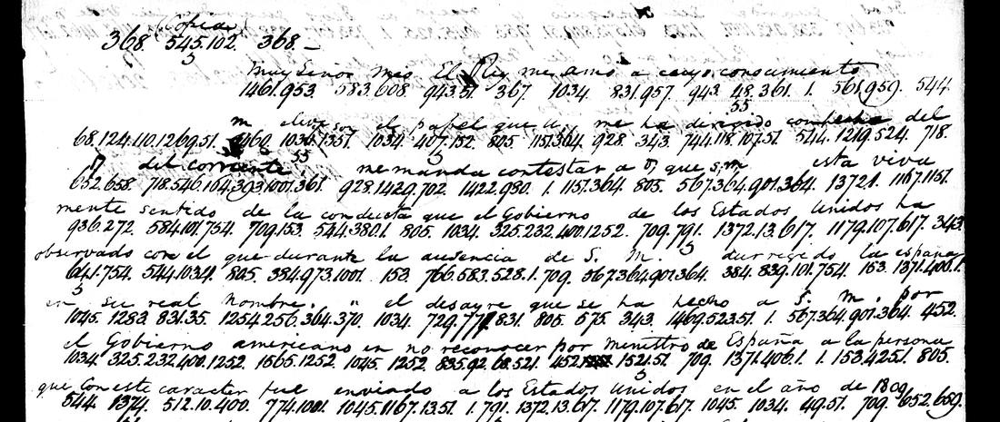

At a glanceExternal key matched · partial (97% of the cipher)
- The documents
- Coded passages in letters from Anthony Morris, United States agent at Cadiz, Seville and Madrid, to James Monroe, Secretary of State, from January 1814 to May 1815: twelve texts by Morris, and a copy of a Spanish note from Pedro de Cevallos to Morris of 20 November 1814 that Morris put into the same code.
- Where
- National Archives (NARA), RG 59, Despatches from U.S. Ministers to Spain, vol. 12, microfilm M31 roll 14. Not on DECODE. It was item 650 of the project’s catalogue.
- The cipher
- The State Department’s numerical code of 1,600 groups for words, syllables and letters (the one Weber prints as WE028). In the usual numbering “the” is 1385; Morris’s copy numbers the sixteen blocks of 100 in reverse order, so his “the” is 285.
- How it was deciphered
- The reversed numbering was found on one page from the ciphertext, by fitting a table of the same code rebuilt elsewhere in the project. The letters were then decoded with a transcription of a surviving sheet of the code, and checked against State Department clerks’ decipherments on other copies of three of the texts.
- What they say
- Spain after the return of Ferdinand VII: the Inquisition restored, arrests, an empty treasury, and Spanish resentment over Florida and Louisiana. On 30 December 1814 Morris reports, from a source, that the Council of State is preparing a report “recommending a declaration of war”.
- Credit
- WAINUT found the reversed numbering and worked the first page. Andrew Beling, with AI agents, transcribed the code sheet and read ten letters (pull requests #200 and #415). Two short pieces were added when the project checked and integrated the work.
- A second copy
- Three letters of Governor William C. C. Claiborne to James Madison from New Orleans, 1805–06, use a copy of the code with the same reversed blocks. Their texts are the decipherments written on them at the time; that part is in progress and is not counted in the figures here (section 08).
- Still open
- The sign 370 after full stops has no value. Five other places are unread or unsettled: an adverb in No. 19 and four groups in the letter of 24 March 1815. Fifty-eight words rest on context or have letters supplied, mostly where Morris’s group does not give the word. Most letters have had one reader only, and none of the passages is claimed as unpublished.
01 The despatches
Anthony Morris was the United States agent at Cadiz and Madrid in 1813–15. His letters to James Monroe are bound in volume 12 of the State Department’s despatches from Spain and filmed as NARA microfilm M31, roll 14. Many of them carry passages in a numerical code, and most were sent in two or three copies, so the same coded passage often appears on several frames. On some copies a clerk of the Department wrote the plain words between the lines; on others nothing is written over the numbers.
Thirteen coded texts are deciphered here. The table gives, for each, the frames used, the number of code groups, the share of its coded words that give sense (the count is explained in section 05), and whether a decipherment of the time exists on another copy.
| Text | Frames | Groups | Words read | Decipherment of the time |
|---|---|---|---|---|
| Cadiz, 4 January 1814: end of the letter and start of the enclosed proposal | 0039 | 554 | 0.963 (0.965 on the contributor’s count) | none; clear copies of both texts exist |
| No. 12, Cadiz, 4 April 1814 | 0082–0083, 0087–0088 | 213 | 0.972 | none noted |
| No. 13, Cadiz, 11 April 1814 | 0084, 0088 | 107 | 0.946 | none noted |
| No. 14, Seville, 11 May 1814 | 0086–0087 | 241 | 0.962 | none noted |
| No. 17, Seville, 21 June 1814 (three closing lines) | 0111 | 53 | 0.914 | none on the frame |
| No. 18, Seville, 20 September 1814 | 0112–0113, 0117–0118, 0129 | 486 | 0.958 | none on the frames |
| No. 19, Madrid, 27 October 1814 | 0139, 0147, 0149 | 156 | 0.943 | none on the frames |
| Cevallos to Morris, Palacio, 20 November 1814 (Spanish) | 0115–0116 | 621 | 0.962 | a clerk’s, on frames 0169–0170 |
| No. 24, Madrid, 30 December 1814 | 0220, 0205 | 205 | 0.969 | a clerk’s, on frame 0196 |
| No. 25, Madrid, 6 January 1815 | 0220–0221 | 98 | 1.000 | a clerk’s, on frame 0174 |
| No. 26, Madrid, 27 January 1815 | 0075 | 70 | 0.957 | none noted |
| Madrid, 24 March 1815 | 0124–0125, 0191–0193 | 819 | 0.977 | none on these two copies; one reported on 0206–0207, not compared |
| No. 28, Madrid, 12 May 1815 | 0209–0210 | 90 | 0.986 | none on the frames |
For Nos. 24 and 25 and for the Cevallos note, then, the reading confirms a decipherment made at the time. For Nos. 17, 18, 19 and 28 no decipherment is on the frames. The groups of five of the texts were counted from files that also hold notes or a second copy, so those five counts are less exact than the others (the profile says which).
The roll holds more code than this. Frames 0036–0038 and 0050–0057 are further coded copies of the letter of 4 January 1814 and of the long proposal it enclosed, whose text is known from clear copies; they have not been transcribed, so the proposal is decoded here only as far as frame 0039 goes. Other coded frames carry a clerk’s words above the groups and were not worked.
02 The code and the key
The groups run from 1 to 1600 and are written with full stops between them. Each stands for a word, a syllable or a letter, and longer words are built from several groups: pre-par-ing, re-com-end-ing, dec-lar-ation. Small marks under or after a group change it: a hook doubles a letter (son with a hook is “soon”), strokes withdraw letters (dispose with one stroke, then -it-ion: disposition), an angle adds a plural or an ending.
The project’s catalogue had called the code unidentified, because the table rebuilt for John Quincy Adams’s St Petersburg despatches (in which the = 1385; see the page on that code) did not fit Morris’s groups read directly. WAINUT, working on the page of frame 0039, tried 220 tables held in the repository; none fitted. Constant shifts of the numbers then showed that the Adams table lined up with one block of 100 at a time, and the best offset for each busy block pointed to a simple rule:
Morris 100·i + r = usual number 100·(15 − i) + r (i = 0 … 15, r = 1 … 100)
Morris’s copy has the sixteen blocks of 100 in reverse order, each block keeping its inner order. So his 285 is the usual 1385 (the), his 76 is 1576 (of), and his 1549 is 49 (United States). On frame 0039 this numbering gives a function-word share of 0.353, against at most 0.297 for 20,000 random orders of the sixteen blocks. On function words alone the reversed block is the best one for only 8 of the 16 blocks, the thinly used ones preferring other offsets; a test on word pairs puts it first for 15 of 16.
Andrew Beling then replaced the rebuilt table with the code itself. A sheet of it survives on NARA microfilm M97 roll 13 (frames 1056–1057), and Ralph Weber printed it as WE028. Beling’s working transcription gives all 1,600 entries with the number each has in Morris’s reversed copy; seven entries are blank and eleven have disputed readings. The decodes of the twelve letters use that file. The mechanical decode of frame 0039 printed below is the first one, of 27 October, made with the rebuilt Adams table; its reading was redone with the sheet. The same code in its usual numbering is the one behind Adams’s despatches and Powhatan Ellis’s from Mexico. Joel Poinsett’s code of 1813–14 and Rufus King’s of 1797–1803 are other State Department codes, each with its own page.
03 What the letters say
The readings are given in full under “Full texts”. In the quotations below, [?word] marks a word that the groups do not give by their key values and that is supplied from the sense, and [370] is a sign with no known value. Words Morris wrote in clear are not marked off here.
Cadiz, 4 January 1814 (frame 0039). The page holds the end of Morris’s letter and the start of a proposal he enclosed. The letter advises keeping a force near Florida against the British, who had offered the year before to send troops there “but probably with the intention of holding it”, and it is signed in code. The proposal that follows is not Morris’s own: it charges “the democratic government of the United States under the administration of the Frenchified senor Jefferson and Madison” with working to separate Spain’s American colonies and with instigating the insurrection of West Florida. This page was reread with the clear copies in view, so it is not a blind reading.
No. 12, Cadiz, 4 April 1814. East Florida “might be purchased on moderate terms and a considerable portion of its price be paid in the articles of the produce of the United States”, but “some presents or douceurs would be indispensible to the amount of perhaps ten thousand dollars”.
No. 13, Cadiz, 11 April 1814. Morris will go to Madrid, “to be nearer the sour[?ce] of authentick information”; he has not heard from Monroe since he reached Europe.
No. 14, Seville, 11 May 1814. He is detained at Seville while the king delays his arrival at the capital and marches troops toward Madrid, and it is feared the king “will not take the oath required by the new constitution”. He blames the failure to free the American captives at Algiers on the agent employed, who “certainly ought not to be admitted to any participation” in American business.
No. 17, Seville, 21 June 1814. Nine pages in clear end with three lines of code: “In the [?present] most unexpected state of things, therefore, I have thought it most [?prudent] to remain quiet until I shall have the satisfaction of hearing from you.”
No. 18, Seville, 20 September 1814. The king authorised a decree in July for the restoration of the Inquisition, a measure “said to have been taken contrary to the wishes and opinions of all the ministers, having been brought about by the influence of the king’s confessor” and the pope’s nuncio. “Numerous arrests continue to take place”; the government tries “by a kind of benevolences assisted by forced loans, to replenish its exhausted treasury”; and “the king has indeed thrown himself entirely into the arms of these two classes”, the nobility and the clergy. On Florida and Louisiana nothing has changed. A report names the Marquis de Casa Yrujo as the next secretary of state.
No. 19, Madrid, 27 October 1814. Morris has called on the Duke de San Carlos. “The duke received my communications without any expression of [?approbation] or any cordiality of manner”, and has not answered. The press is guarded against anything unfavourable to the government or to the British government, and the post office against foreign papers.
No. 24, Madrid, 30 December 1814. This short letter is wholly in code. Morris writes: “I am informed today from a source in which I have considerable confidence that a report is preparing by the Council of State to H. M. recommending a declaration of war against the [?United States], founded upon the grounds generally of our proceedings [?relative] to Louisiana and Florida.” Two things should be kept in mind. First, this is what Morris was told about a recommendation being drafted; it is not a decision, and the letter does not say that the report was presented. Second, the group standing for the country is 1569, which is “December” in the code and in this letter’s own heading; Morris’s usual group for the United States is 1549. That the United States is meant rests on “our proceedings”, on the words a State Department clerk wrote over the copy on frame 0196 (“against the U States”), and on a modern quotation of the passage (section 06). The letter goes on to count the Spanish forces: forty-seven thousand soldiers and five thousand officers returned from France as prisoners of war, not less than 160 thousand men under arms, and two expeditions of ten thousand each preparing at Cadiz, one “said to be destined to Mexico” and the other for Buenos Ayres, “expected to sail early in January”.
No. 25, Madrid, 6 January 1815. In clear, Morris forwards a letter from Erving with his congratulations “on this happy occasion”. In code: “It is possible that this news (which has been received here with great surprise) may alter in some degree the intended measures of this government alluded to in my last. I believe it is now proposed to send new powers to Mr Onis.” The news itself is not named in the coded passage; the notes cite a modern study for its being the first report of the peace signed at Ghent to reach Madrid.
No. 26, Madrid, 27 January 1815. The messenger has left with dispatches for Onis, “much modified by the new situation in which Spain finds herself” after the peace.
Madrid, 24 March 1815. The longest letter. It quotes Erving’s instructions about the new secretary of legation, Brent, and then describes the country under Ferdinand VII: “The number of the discontented is encreasing greatly and their murmurs daily become more audible.” Favourites hold the king’s confidence, arrests and exiles are so many “that there is scarcely a family in Spain which does not mourn the fate of some imprisoned friend”, and the government “is unable to pay the army”.
No. 28, Madrid, 12 May 1815. Nothing has changed since March, but Morris cannot doubt that “the glorious result of the expedition” against New Orleans has produced different views at court.
04 A Spanish note in an English code
Frames 0115 and 0116 hold twenty-nine lines of code and no clear word. The pull request left them unread; they were transcribed and decoded when the work was integrated. The heading decodes as “(Copia)”, and the text is Spanish, spelled out with the syllables and words of the English code: America + no is “americano”, minister + o is “ministro”, Hague with two letters withdrawn + o is “hago”, April with two withdrawn + ove-ch-o is “aprovecho”. It is a copy of a note to Morris dated “Palacio a 20 de noviembre de 1814” and signed, in code, Pedro de Cevallos.

Cevallos answers a paper Morris had sent on the 17th. In translation: the king “keenly resents the conduct which the government of the United States has observed” towards the government that ruled Spain in his absence. “The slight done to His Majesty by the American government in not recognising as minister of Spain the person who was sent with that character to the United States in the year 1809 is not repaired by the appointment” of Erving. The king has “every right to demand full satisfaction from the American government before admitting the minister named by it”, and “this satisfaction must begin with [?the] recognition of His Majesty’s minister to the United States”. Even so, “you may deal with me in the matters that may arise and concern either of the two States”.
This reading is not blind. The clerk’s copy on frames 0169–0170 had been seen at reduced size before the numbers were transcribed, and one group was corrected with it in view (1301, “particular”, first read as 1307). The clerk’s copy also shows that two oddities are in the coding and not in the transcription: where the sense wants “elevado” and “época” the groups give elev-son and ep-for, and the clerk wrote “elev son” and “ep for”. The clerk’s text has not been transcribed in full or compared word by word.
05 How the readings were checked
Reproduction. Before integration the five letters of pull request #415 (Nos. 18, 19, 24, 25 and 28) were verified independently. The contributor’s decodes reproduce byte for byte, and a second decoder written from the key file alone agrees on all 1,035 groups. All 205 groups of No. 24 were compared with frame 0220 at full size and agree; the last group is 1551 or 1557, as the transcription says. Frames 0112 and 0139 were sampled without a difference. Frames 0113, 0221, 0209 and 0210 and the second copies were not viewed.
Against the clerks. The contributor scored the decode of Nos. 24 and 25, made with key values only, against the words the clerks wrote on frames 0196 and 0174: 0.904 and 0.945 of the clerk’s letters matched in order, against at most 0.343 for 200 shuffled keys. Neither test is blind. Frame 0196 had been glimpsed at low resolution before the numbers were transcribed, and its dark text was made out after the decode was made; frame 0174 had been seen before transcribing. That the numbers were fixed before decoding is by the contributor’s record: the pull request is a single commit.
One count for every letter. The share of words read is counted in the same way throughout: of the words that stand in code, a word is a hole if it is an unread group, a guessed [?word], or a word with letters supplied. On that count the thirteen texts have 2,631 coded words and 87 holes, 0.967. Three texts fall under the 95% bar: No. 13 (0.946), No. 19 (0.943) and the three lines of No. 17 (0.914). At integration three words were added to the holes because the groups do not spell them: “liberal” and “liberality” in No. 18 (li-er-al) and “approbation” in No. 19 (ap-pro-bat-ad). After integration the contributor marked one more, “actu[al]” in No. 28 (10.1151.1255 is act-UV-non; nothing gives “-al”), so No. 28 has 1 hole in 71 words, 0.986. The contributor’s own figures for the five letters of pull request #415 count groups, not words: 0.981, 0.955, 0.980, 1.000 and 1.000.
Readers. The first four letters of pull request #200 had two readers of the numbers. The letter of 24 March 1815, the five letters of pull request #415 and the two pieces added at integration had one. The contributor also recorded his own review, grade A, of the five letters of pull request #415 on 12 Nov 2026; he leaves the opening groups of No. 24 (593.813) as numbers, where this reading has [?Sir], and both count as a hole. At integration a model, not a person, went through each letter reading (frame 0039 keeps the contributor's review) as sentences.
06 What is already in print
None of these passages is claimed as unpublished. H. L. Dufour Woolfley’s A Quaker Goes to Spain (2013) quotes the coded passages of 4 and 11 April 1814 and parts of Nos. 18, 19 and 24, among them the Council of State sentence, with “United States”. By the contributor's record, he found these by full-text search after the readings were made, and judges that Woolfley worked from clear copies. His quotations agree with the decodes apart from a few words (in No. 18, “those” for “these” and “sufficient” for “sufficiently good”). The coded sentences of Nos. 25 and 28 were not found in the book; the searches were by phrase, so a miss does not show a passage is absent. The page references were not checked at integration.
W. R. Manning’s Diplomatic Correspondence (1925), vol. 3, was searched for the passages of Nos. 18, 19, 24, 25 and 28; none was found. The Papers of James Monroe, vol. 7, was searched by snippets only. American State Papers, Foreign Relations, was not read. For the Cevallos note, a web search result reports an annotation in The Papers of James Madison saying that Erving’s letter to Monroe of 4 December 1814 enclosed a copy and translation of it; the page could not be opened, so this is not checked. The Anthony Morris Family Papers at the Historical Society of Pennsylvania, which list a copybook of letters for 1813–1816, were not seen.
07 What remains open
Grades: C, the reading is confirmed by a clerk’s decipherment or a clear copy; M, it rests on the sense of the sentence; I, it is a guess.
- 370. The sign follows full stops twenty-two times. Its cell on the code sheet has a z-like mark and no value. Unread.
- 575.1060 in No. 19. An adverb before “guards”: se with two strokes + ti. The three copies agree. Unread.
- 1569 for “United States” in No. 24 (C, from the clerk on frame 0196) and in No. 26 (M). The key value is “December”.
- 145 with a stroke for “relative”: C in No. 24, where the clerk writes it; M twice in No. 18. The key value is “June”.
- 593.813 at the head of No. 24, read [?Sir] (M). The letter of 24 March 1815 opens 598.813, si-R, so 593 is probably a slip of the pen for 598; frame 0220 has 593.
- No. 18 (M): [?re]presentations (131), [?more] (1457), [?end]eavouring (1040), [?liberal] and [?liberality]; “delay[ed]” and “[going]” are supplied. One word, “understanding”, follows the Triplicate (1363) against the Duplicate (1303).
- No. 19 (M): [?approbation], [?actual] (10.1150), [?care]fully (572.1101). “Post office” is not marked: 76 of + 1231 ficent with two strokes is read “office” by the stroke rule, with no clerk’s check (the contributor’s note).
- No. 28 (supplied): actu[al] (10.1151.1255, act-UV-non), marked by the contributor.
- The Cevallos note: [?tiene] and [?vida] are C (the clerk has them); [?el], [?elevado] and [?época] are M (the clerk wrote the groups out as they stand: “elm”, “elev son”, “ep for”); [?Mr] is M, in a stretch of ten groups that the clerk’s copy leaves out.
- No. 17 (M): [?present], where a digit is blotted (1310 or 1320), and [?prudent].
- The letters of pull request #200 and frame 0039: 35 holes in the five letters, 18 of them in the letter of 24 March 1815 (26 guessed words, 4 unread or unsettled groups, and the sign 370 five times), and 13 holes on frame 0039. The despatch number of the letter of 24 March 1815 is not settled: its coded number reads “seventeen” on one copy and is overwritten on the other.
- Not done. No blind reread of frame 0039; no second reader for the letters listed in section 05; no comparison with the clerk’s copy of 24 March 1815 on frames 0206–0207 or with the copybook in Philadelphia; the coded copies of the proposal on frames 0050–0057 are not transcribed.
08 The same numbering in New Orleans, 1805–06 (in progress)
Morris’s was not the only copy numbered this way. Three letters of William C. C. Claiborne, governor of the Orleans Territory, to James Madison carry coded words in the same code with the same reversed blocks: New Orleans, 24 October 1805, 13 January 1806 and 25 November 1806 (NARA microfilm T260, rolls 7 and 8). This part of the work is still in progress, and its figures are kept apart from those of Morris’s letters.
Nothing new in the texts. Jacob Wagner wrote the decipherment between the lines of each letter, and his words are the text. By the contributor’s record the Papers of James Madison print them with the note “State Department code; key not found”; the edition was seen here only in search snippets.
How the copy was identified. Brice Dudout, with an AI agent, transcribed the groups, lined them up with Wagner’s words (328 coded words) and rebuilt 261 values and the block structure of the code from them, with no code sheet. When the project checked that work, his table turned out to be the code sheet of section 02 with its blocks reversed. Under the reversal the sheet gives 223 of his 261 values; read directly it gives none; 2,000 random orders of the sixteen blocks give at most 102. Each of Claiborne’s sixteen blocks matches its reversed block on the sheet and no other. That explains the editors’ “key not found”.
What the sheet gives. The sheet was then applied unchanged to the three letters. A word counts when the values of its groups, joined, spell Wagner’s word.
| Letter | Coded words | Given by the sheet |
|---|---|---|
| 24 October 1805 (T260 roll 7, images 0224–0226) | 250 | 228 (91.2%) |
| 13 January 1806 (roll 8, image 0045) | 51 | 40 (78.4%) |
| 25 November 1806 (roll 8, image 0409) | 27 | 27 (100%) |
| All three | 328 | 295 (89.9%) |
Most of the misses are the clerk’s usage, not the key: spellings (mo-bil-e for Mobille), near syllables (cant-non for cannon), and in the January letter numerals written as digits and two phrases split differently. Counting those by hand, as the contributor and the first check did, the sheet gives 319 of the 328 words. Nine words stay out on any count: four slips of the encoder, among them “collecting”, which has no group at all (the clerk struck four groups and Wagner wrote the word over them); “troops” three times, written with the group for tra because the code has no tro; and “arrival” and “leather”, where a digit is blotted under Wagner’s writing.
Checked against the images. The groups of the two 1806 letters, about 150 groups of the first two pages of the 1805 letter and all 57 groups of its last page were compared with the NARA images. Three misreads were corrected; twice a final hook had been taken for a 2.
Not done yet. Two more letters that the editors list under this code, of 18 and 19 November 1806, are in the Library of Congress and were not seen: its site turns scripts away, so whether they are online is not known. The printed edition has not been opened in a browser, the code sheet image was not re-read at the tra entry, and the rest of rolls 7 and 8 was not paged for more coded letters.
Full texts
The transcription and the decryption of every document on this page, so that the reading can be used and checked. Short files are shown here; all are in the repository.
Morris to Monroe, Cadiz, 4 January 1814 and enclosed proposal, M31 roll 14 frame 0039 (page '4'), catalogue 650 read in part
The end of Morris's cover letter of 4 January 1814, signed in code: the US should keep a force near Florida against the British, and a change in the Regency would help them. Then the start of the proposal he enclosed, whose allegations are its author's: that Jefferson and Madison worked to separate Spain's American colonies, instigated the West Florida insurrection, seized Baton Rouge and encouraged the revolutionaries of Caracas.
Builds coherent sentences, but its word share is at or above the 95% read bar, and it stays read in part for another reason stated on this page (96% here); the holes are marked in the reading.
Transcription
# Anthony Morris to James Monroe, NARA RG 59 M31 roll 14 (naId 188606645), frame 0039, page headed "4" (catalogue 650). # Frame: https://catalog.archives.gov/medialz/dc-metro/rg-059/603720/M31/M31-014/M31-014-0039.jpg # 26 written lines, read by eye from the full frame and enlarged crops (27 Oct 2026), lines 1-6 and 10-12 in a first # pass and the rest in a second; 144 groups (lines 3, 7, 9, 13, 18, 24 in full, parts of 12 and 17) re-read blind by # a second agent: 140 agree. # Conventions: one written line per row; groups of one word joined by '.', words separated by a space; "..." = words # written in clear; (5) (55) (5555) (c) (s) = marks written under a group; '=' = the short double stroke after a group # (meaning unknown); [?] = doubtful reading of the group; ? = a group cut by the frame edge (end of L26). # Corrections from the blind re-reading, applied here: L9 721 (first read 724), L9 13 (first read 131[?]), # L24 608 (first read 108). L24 518[?] may be 548. Not applied, not checked: L19 479 may be 279 and L17 132 may be 133. L1: "accordingly" 361.140. 977= 1069. 928. 284. 1. 1305.1159.393. 457.566. 92. 285. 410. 76. 285. 1540[?] L2: "would induce them to" 350. 35.462.507. 1.849.3. 692. 126. 285. 1187.528. 1149. 76. 670. 1069. L3: 549.400.10. 974. 1577= 76. 285. 877. 126. 284.804, "an offer was made by them" 157. 956. 1069. L4: 575.1116. 1579(5555).401[?]= 291. 1180. 285. 1311.1246. 76. 1309.400.1172. 285. 279(c).140.608.953. 1069. 1355. L5: 890. 1320(5555).797. 490. "the intention of holding it" 476. 757(5).140.133. 1180. 1310. 1548= 480. 1252. 899.89[?] L6: 210. 126.554.993=. 1590. 1. 1403. 126. 285. 830.1047. "take place" 286. 1169= 486. 210. 1204.121.140. L7: 968. 1252. 930= 480. 210. 1043. 1179.862= 1069. 1025(5).1018. 299. 1403. 992. 1357(c). 992. 285. 546[?]. 285[?] L8: 593(c). 210. 608.302.1139.066[?](55)= 476. 486. 210. 5. 285. 873(5).101[?].1378.126. 1362.364.973.1491.953. 1450(c).138[?] L9: 285. 721.51.554.999.104. 329.937. 76. 285. 1549. 1180. 285. 13.1521.764. 76. 285. 695.101.1235. L10: 583.608= 110.1227(c).1357. 908. 902.101.1357. 1260. 97. 385. 285. 1387(s).115.129. 1198. 890. 41. 218. 284. L11: 390.57.524. 354.319= 285. 1153[?]. 1282.57.1138. 968. 846.1073= 1310(c).1201= 76. 120= 729.1589(5555)= 968. 130.12[?] L12: 1069. 1026(c).1078.1157.1000. 285. 575.423.999.133. 76. 285. 1356(s).135. 1566= 699. 285. 1454.1477. 550.364.370.120. L13: 1291(c).400. 76. 285. 956. 652.659[?].652.657. 878.148. 638. 285. 126.1295(c).1018.133. 76. 470. 670. 126.1280.302.273.8[?] L14: 285. 909.787. 1555.1151. 329.937. 482. 126.1515(555).272. 968. 729.1313. 44.237.133. 1280.1403.763. 140. 10[?] L15: 1323(555).140. 76. 285. 126. 140.115(5). 968. 738.115(5). 476. 288. 1054.1013.1045= 1069. 629.473(5).786. 285. 421.126.1290[?] L16: 968. 1039. 456[?]. 140.581. 76. 285. 752.106(555555)= 284. 76. 209.92. 192[?].1001(5)= 476. 1200. 285. 1000.813. 76. 285[?] L17: 126.1295(c).1018.132.364.285. 774.1062. 1311.1398. 76. 299. 1354.87.102.261.133. 932. 35(c).1027= 892. 285. 157[?] L18: 904.106.1357. 1200. 284. 285. 279(c).140.608.953. 1058. 434.1180= 977(5).264= 1069. 1527(5).136.101.491(c).1. 1556[?].2[?] L19: 285. 571.479(c).140.608.953. 344. 217. 723.51.940.763. 968. 329= 892. 342.201. 97. 956. 342.501.901. 1285(c) L20: 137.143.1034.953. 932. 49. 130.331. 152.410. 76. 670. 699. 285. 956. 652.655.657.654. 1183. 285. 1449. 76. 7[?] L21: 652.650.652.654. 285. 707. 76. 285. 126.1295(c).1018.133. 938[?].364[?].370[?].124. 285. 1449. 76. 145. 652.659.652.65[?] L22: 126. 1408(5).101.50. 1069. 1484. 124.1304(555).1149. 1200. 544[?].517.1020. 1069. 901.813. 904.101.1357. 892. 285 L23: 126.1006.1001. 1319.1171.522. 76. 249. 670= 42. 1180. 521.264. 1412= 126.1186.1172. 285. 546(c).1187. 1066.9[?] L24: 855(5).1357. 76. 285. 329.608= 76. 285. 518[?].107. 670= 364.370.285. 44.208(c).13.608= 76. 285. 163.87.1193.133.991. L25: 329.937. 76. 5127[?](c). 992.836= 699. 901.813. 904.101.1357. 968. 1484. 1521= 711.155.764= 285. 1453. 1397.143.100 L26: 76. 286. 726(c)= 130.1372. 126. 285. 1285(c).1371(c). 76. 285. 163.87.1193.133. 76. 285. 568.107. 436. 968. 76. 1333.121.?
Decryption
# Anthony Morris to James Monroe, M31 roll 14 frame 0039 (catalogue 650): decryption line by line against # morris1813_transcription.txt, with ../jqa/code_table.tsv under block_map.tsv (output of python decode.py). # Each group: morris>jqa=value/grade (? = no value in the table; marks of the transcription kept after the value). # Then => the words, syllables joined by -, [n] = Morris group n with no value, "..." = written in clear. # This is the mechanical decode. The sentences, with the holes and the context readings marked, are in # morris1813_reading.md. L1 "accordingly" 361>1261=? 140>1440=it/H 977>677=appears/M= 1069>569=to/H 928>628=me/H 284>1384=that/H 1>1501=a/H 1305>205=power/H 1159>459=ved/C 393>1293=tent/H 457>1157=poss/M 566>1066=cy/C 92>1592=on/H 285>1385=the/H 410>1110=part/H 76>1576=of/H 285>1385=the/H 1540>40=circumstances/H[?] => "accordingly" [361]-it appears to me that a power-ved-tent poss-cy on the part of the circumstances L2 "would induce them to" 350>1250=? 35>1535=al/H 462>1162=without/M 507>1007=? 1>1501=a/H 849>749=respect/H 3>1503=able/H 692>992=france/H 126>1426=in/H 285>1385=the/H 1187>487=up/C 528>1028=ci/H 1149>449=? 76>1576=of/H 670>970=? 1069>569=to/H => "would induce them to" [350] al-without-[507] a-respect-able france in the up-ci [1149] of [670] to L3 549>1049=Count/H 400>1300=er/C 10>1510=act/H 974>674=any/H 1577>77=?= 76>1576=of/H 285>1385=the/H 877>777=british/H 126>1426=in/H 284>1384=that/H 804>704=quarter/H "an offer was made by them" 157>1457=last/H 956>656=tyear/C 1069>569=to/H => Count-er-act any [1577] of the british in that-quarter "an offer was made by them" last tyear to L4 575>1075=se/M 1116>416=nd/M 1579>79=?(5555) 401>1101=P/C[?]= 291>1391=there/H 1180>480=under/H 285>1385=the/H 1311>211=? 1246>346=fis/C 76>1576=of/H 1309>209=pres/H 400>1300=er/C 1172>472=ving/C 285>1385=the/H 279>1379=ter/H(c) 140>1440=it/H 608>908=or/H 953>653=ty/H 1069>569=to/H 1355>255=spa/C => se-nd [1579]-P there under the [1311]-fis of pres-er-ving the ter-it-or-ty to spa L5 890>790=but/H 1320>220=probab/H(5555) 797>897=ly/H 490>1190=with/H "the intention of holding it" 476>1176=which/H 757>857=nor/H(5) 140>1440=it/H 133>1433=ion/C 1180>480=under/H 1310>210=present/H 1548>48=?= 480>1180=whole/C 1252>352=no/H 899>799=doubt/M 89>1589=ol/C[?] => but probab-ly with "the intention of holding it" which nor-it-ion under present [1548] whole no doubt-ol L6 210>1310=be/H 126>1426=in/H 554>1054=cre/M 993>693=van/M= 1590>90=should/H 1>1501=a/H 1403>103=change/H 126>1426=in/H 285>1385=the/H 830>730=heard(part)/C 1047>547=cy/M "take place" 286>1386=their/H 1169>469=views/H= 486>1186=will/H 210>1310=be/H 1204>304=? 121>1421=ill/H 140>1440=it/H => be in-cre-van should a change in the heard-cy "take place" their views will be [1204]-ill-it L7 968>668=and/H 1252>352=no/H 930>630=mean/H= 480>1180=whole/C 210>1310=be/H 1043>543=ngmi/M 1179>479=un/H 862>762=try/C= 1069>569=to/H 1025>525=ef/H(5) 1018>518=rect/C 299>1399=this/H 1403>103=change/H 992>692=as/H 1357>257=soon/C(c) 992>692=as/H 285>1385=the/H 546>1046=cor/H[?] 285>1385=the/H[?] => and no mean whole be ngmi un-try to ef-rect this change as soon as the cor the L8 593>1093=shall/H(c) 210>1310=be/H 608>908=or/H 302>1202=ga/C 1139>439=ni/H 66>1566=it/M[?](55)= 476>1176=which/H 486>1186=will/H 210>1310=be/H 5>1505=about/H 285>1385=the/H 873>773=25,000/M(5) 101>1401=i/H[?] 1378>278=? 126>1426=in/H 1362>262=st/H 364>1264=gar/H 973>673=ant/C 1491>191=hon/H 953>653=ty/H 1450>150=mor/H(c) 138>1438=ish/C[?] => shall be or-ga-ni-it which will be about the 25,000-i-[1378]-in st-gar-ant-hon-ty mor-ish L9 285>1385=the/H 721>821=dem/I 51>1551=o/C 554>1054=cre/M 999>699=at/H 104>1404=ic/M 329>1229=govern/H 937>637=ment/H 76>1576=of/H 285>1385=the/H 1549>49=unitedstates/C 1180>480=under/H 285>1385=the/H 13>1513=ad/H 1521>21=Minister/H 764>864=ation/H 76>1576=of/H 285>1385=the/H 695>995=french/H 101>1401=i/H 1235>335=fied/M => the dem-o-cre-at-ic govern-ment of the unitedstates under the ad-Minister-ation of the french-i-fied L10 583>1083=sen/H 608>908=or/H= 110>1410=ie/C 1227>327=fer/H(c) 1357>257=soon/C 908>608=maj/M 902>602=ma/C 101>1401=i/H 1357>257=soon/C 1260>360=not/H 97>1597=only/H 385>1285=? 285>1385=the/H 1387>287=Europe/H(s) 115>1415=jes/C 129>1429=ing/H 1198>498=war/H 890>790=but/H 41>1541=also/C 218>1318=before/H 284>1384=that/H => sen-or ie-fer-soon maj ma-i-soon not only [385] the Europe-jes-ing war but also before that L11 390>1290=england/H 57>1557=mance/M 524>1024=chain?/M 354>1254=has/H 319>1219=give/H= 285>1385=the/H 1153>453=vail/C[?] 1282>382=str/H 57>1557=mance/M 1138>438=ng/C 968>668=and/H 846>746=rep/C 1073>573=tant/M= 1310>210=present/H(c) 1201>301=?= 76>1576=of/H 120>1420=in/H= 729>829=des/M 1589>89=?(5555)= 968>668=and/H 130>1430=inter/H 12>1512=?[?] => england-mance-chain? has-give the vail str-mance-ng and rep-tant present-[1201] of in des-[1589] and inter-[12] L12 1069>569=to/H 1026>526=eg/M(c) 1078>578=rect/M 1157>457=vi/H 1000>700=ate/H 285>1385=the/H 575>1075=se/M 423>1123=per/H 999>699=at/H 133>1433=ion/C 76>1576=of/H 285>1385=the/H 1356>256=Spain/H(s) 135>1435=ir/C 1566>66=?= 699>999=from/H 285>1385=the/H 1454>154=? 1477>177=her/H 550>1050=country/H 364>1264=gar/H 370>1270=du/M 120>1420=in/H => to eg-rect-vi-ate the se-per-at-ion of the Spain-ir [1566] from the [1454]-her country-gar-du-in L13 1291>391=sum/C(c) 400>1300=er/C 76>1576=of/H 285>1385=the/H 956>656=tyear/C 652>952=flat/M 659>959=?[?] 652>952=flat/M 657>957=? 878>778=br/M 148>1448=ke/M 638>938=out/C 285>1385=the/H 126>1426=in/H 1295>395=sur/H(c) 1018>518=rect/C 133>1433=ion/C 76>1576=of/H 470>1170=? 670>970=? 126>1426=in/H 1280>380=sti/C 302>1202=ga/C 273>1373=ted/H 8>1508=le (bable)/M[?] => sum-er of the tyear flat-[659]-flat-[657] br-ke out the in-sur-rect-ion of [470] [670] in-sti-ga-ted-le L14 285>1385=the/H 909>609=maintain/H 787>887=lo/C 1555>55=? 1151>451=u/C 329>1229=govern/H 937>637=ment/H 482>1182=whose/C 126>1426=in/H 1515>15=ofsuccessplain/M(555) 272>1372=te/H 968>668=and/H 729>829=des/M 1313>213=pri/C 44>1544=am/H 237>1337=? 133>1433=ion/C 1280>380=sti/C 1403>103=change/H 763>863=you/C 140>1440=it/H 10>1510=act/H[?] => the maintain-lo [1555]-u govern-ment whose in-ofsuccessplain-te and des-pri am-[237]-ion sti-change-you it act L15 1323>223=?(555) 140>1440=it/H 76>1576=of/H 285>1385=the/H 126>1426=in/H 140>1440=it/H 115>1415=jes/C(5) 968>668=and/H 738>838=difficul/C 115>1415=jes/C(5) 476>1176=which/H 288>1388=then/H 1054>554=thr/C 1013>513=peat/C 1045>545=en/H= 1069>569=to/H 629>929=over/C 473>1173=when/C(5) 786>886=? 285>1385=the/H 421>1121=pen/C 126>1426=in/H 1290>390=?[?] => [1323]-it of the in it-jes and difficul-jes which then thr-peat-en to over-when-[786] the pen-in-[1290] L16 968>668=and/H 1039>539=em/H 456>1156=possess/M[?] 140>1440=it/H 581>1081=self/H 76>1576=of/H 285>1385=the/H 752>852=no/C 106>1406=?(555555)= 284>1384=that/H 76>1576=of/H 209>1309=bat/I 92>1592=on/H 192>1492=rough/C[?] 1001>501=e/M(5)= 476>1176=which/H 1200>500=was/H 285>1385=the/H 1000>700=ate/H 813>713=port/M 76>1576=of/H 285>1385=the/H[?] => and em possess it-self of the no-[106] that of bat-on rough-e which was the ate-port of the L17 126>1426=in/H 1295>395=sur/H(c) 1018>518=rect/C 132>1432=join/C 364>1264=gar/H 285>1385=the/H 774>874=fu/C 1062>562=tile/M 1311>211=? 1398>298=ex/C 76>1576=of/H 299>1399=this/H 1354>254=sp/C 87>1587=l/C 102>1402=pa/H 261>1361=t/M 133>1433=ion/C 932>632=medi/C 35>1535=al/H(c) 1027>527=ency?/M= 892>792=by/H 285>1385=the/H 157>1457=last/H[?] => in-sur-rect-join-gar-the fu-tile [1311]-ex of this sp-l-pa-t-ion medi al-ency? by the last L18 904>604=? 106>1406=? 1357>257=soon/C 1200>500=was/H 284>1384=that/H 285>1385=the/H 279>1379=ter/H(c) 140>1440=it/H 608>908=or/H 953>653=ty/H 1058>558=tled/C 434>1134=pl/C 1180>480=under/H= 977>677=appears/M(5) 264>1364=tain/H= 1069>569=to/H 1527>27=?(5) 136>1436=is/H 101>1401=i/H 491>1191=within/H(c) 1>1501=a/H 1556>56=otwithstanding/C[?] 2>1502=ab/C[?] => [904]-[106]-soon was that the ter-it-or-ty tled pl-under appears-tain to [1527]-is-i-within-a otwithstanding-ab L19 285>1385=the/H 571>1071=same/H 479>1179=who/H(c) 140>1440=it/H 608>908=or/H 953>653=ty/H 344>1244=had/H 217>1317=been/H 723>823=den/H 51>1551=o/C 940>640=mes/C 763>863=you/C 968>668=and/H 329>1229=govern/H= 892>792=by/H 342>1242=h/M 201>1301=b/C 97>1597=only/H 956>656=tyear/C 342>1242=h/M 501>1001=c/H 901>601=(sympt)oms/M 1285>385=suc/C(c) => the same-who-it-or-ty had been den-o-mes-you and govern by h-b only tyear h-c-oms suc L20 137>1437=ise/C 143>1443=ju/H 1034>534=el/C 953>653=ty/H 932>632=medi/C 49>1549=an/H 130>1430=inter/H 331>1231=gra/C 152>1452=ll/C 410>1110=part/H 76>1576=of/H 670>970=? 699>999=from/H 285>1385=the/H 956>656=tyear/C 652>952=flat/M 655>955=? 657>957=? 654>954=3rd (23rd)/M 1183>483=new/C 285>1385=the/H 1449>149=months/M 76>1576=of/H 7>1507=ac/H[?] => ise-ju-el-ty medi an inter-gra ll-part of [670] from the tyear flat-[655]-[657]-3rd new the months of ac L21 652>952=flat/M 650>950=vour/M 652>952=flat/M 654>954=3rd (23rd)/M 285>1385=the/H 707>807=ly/C 76>1576=of/H 285>1385=the/H 126>1426=in/H 1295>395=sur/H(c) 1018>518=rect/C 133>1433=ion/C 938>638=men/M[?] 364>1264=gar/H[?] 370>1270=du/M[?] 124>1424=im/H 285>1385=the/H 1449>149=months/M 76>1576=of/H 145>1445=? 652>952=flat/M 659>959=? 652>952=flat/M 65>1565=obst/C[?] => flat-vour-flat-3rd the ly of the in-sur-rect-ion men-gar-du-im the months of [145] flat-[659]-flat-obst L22 126>1426=in/H 1408>108=comply/I(5) 101>1401=i/H 50>1550=ance/H 1069>569=to/H 1484>184=his/H 124>1424=im/H 1304>204=Portugal/H(555) 1149>449=? 1200>500=was/H 544>1044=con/H[?] 517>1017=ced/H 1020>520=ed/H 1069>569=to/H 901>601=(sympt)oms/M 813>713=port/M 904>604=? 101>1401=i/H 1357>257=soon/C 892>792=by/H 285>1385=the/H => in comply-i-ance to his im-Portugal-[1149] was con-ced-ed to oms-port [904]-i-soon by the L23 126>1426=in/H 1006>506=to/M 1001>501=e/M 1319>219=pro/H 1171>471=vin/H 522>1022=ces/H 76>1576=of/H 249>1349=both/H 670>970=?= 42>1542=ab(sence)/M 1180>480=under/H 521>1021=cer/H 264>1364=tain/H 1412>112=condi/M= 126>1426=in/H 1186>486=new/C 1172>472=ving/C 285>1385=the/H 546>1046=cor/H(c) 1187>487=up/C 1066>566=? 9>1509=occa(sion)/M[?] => in-to-e pro-vin-ces of both [670] ab under cer-tain condi in-new-ving the cor-up [1066]-occa L24 855>755=treat/M(5) 1357>257=soon/C 76>1576=of/H 285>1385=the/H 329>1229=govern/H 608>908=or/H= 76>1576=of/H 285>1385=the/H 518>1018=ceived/C[?] 107>1407=id/H 670>970=?= 364>1264=gar/H 370>1270=du/M 285>1385=the/H 44>1544=am/H 208>1308=bass/H(c) 13>1513=ad/H 608>908=or/H= 76>1576=of/H 285>1385=the/H 163>1463=? 87>1587=l/C 1193>493=ut/C 133>1433=ion/C 991>691=nary/M => treat-soon of the govern-or of the ceived-id [670] gar-du-the am-bass-ad-or of the [163]-l-ut-ion-nary L25 329>1229=govern/H 937>637=ment/H 76>1576=of/H 5127>-=?[?](c) 992>692=as/H 836>736=received/H= 699>999=from/H 901>601=(sympt)oms/M 813>713=port/M 904>604=? 101>1401=i/H 1357>257=soon/C 968>668=and/H 1484>184=his/H 1521>21=Minister/H= 711>811=de/H 155>1455=lar/C 764>864=ation/H= 285>1385=the/H 1453>153=most/H 1397>297=ex/H 143>1443=ju/H 100>1600=? => govern-ment of [5127] as-received from oms-port [904]-i-soon and his Minister de-lar-ation the most ex-ju-[100] L26 76>1576=of/H 286>1386=their/H 726>826=depart/H(c)= 130>1430=inter/H 1372>272=ests/C 126>1426=in/H 285>1385=the/H 1285>385=suc/C(c) 1371>271=es/C(c) 76>1576=of/H 285>1385=the/H 163>1463=? 87>1587=l/C 1193>493=ut/C 133>1433=ion/C 76>1576=of/H 285>1385=the/H 568>1068=sa/H 107>1407=id/H 436>1136=place/H 968>668=and/H 76>1576=of/H 1333>233=? 121>1421=ill/H ?=? => of their depart inter-ests in the suc-es of the [163]-l-ut-ion of the sa-id place and of [1333]-ill-[?] # 506 of 554 groups have a value in the table (0.913)
Reading
# Anthony Morris to James Monroe, M31 roll 14 frame 0039, page headed "4" (catalogue 650): the coded page as sentences English, so no translation. Revised 31 Oct 2026 by Andrew Beling's contribution (see `beling/frame39/frame0039_rereads.md`), replacing the first reading of 27 Oct. The page is a numerical copy of two things. L1-8 end Morris's cover letter of 4 January 1814 (dateline on frame 0038; in clear on M37 roll 2 frames 395-396). L9-26 begin the proposal it enclosed (in clear on M31 roll 14 frames 59-60). This reading uses the historical key (`beling/key/`) with the block reversal, and rereads of digits on the frame. **The clear texts were in view during those rereads, so this is not a blind reading.** Every reread is listed in `beling/frame39/frame0039_rereads.md`. `morris1813_transcription.txt` and `morris1813_decryption.txt` are the 27 Oct files and are not changed. Marks: `"..."` written in clear in the original; `[?word]` taken from the clear text, with groups that don't give it; `[370]` the unread group; `simil[ar]` letters supplied. Punctuation is supplied except where 361 and 364 stand. ## Reading [L1] "accordingly", it appears to me that a [?prudent] policy on the part of the United States [L2] "would induce them to" have always a respectable force in the [?vicinity] of Florida to [L3] counteract any attempt of the British in that quarter. "An offer was made by them" last year to [L4] send [?troops] there under the pretence of preserving the territory to Spain, [L5] but probably with "the intention of holding it", which disposition under present circumstances will no doubt [L6] be increased. Should a change in the Regency "take place" their views will be facilit[ated], [L7] and no means will be left untried to effect this change as soon as the Cortes [L8] shall be organized, which will be about the twentieth inst. Anthony Morris [L9] The democratic government of the United States under the administration of the Frenchified [L10] senor Jefferson and Madison, not only during the existing war but also before that [L11] epocha has given the most strong and repeated proofs of its desire and [?intentions] [L12] to effectuate the separation of the Spanish Americas from the mother country. [370] In [L13] summer of the year 1810 broke out the insurrection of West Florida, instigated by [L14] the Anglo-American government, whose inordinate and despicable ambition stimulated it to [L15] profit of the injuries and difficulties which then threatened to overwhelm the Peninsul[a] [L16] and to possess itself of the district, that of Baton Rouge, which was the theatre of the [L17] insurrection. The futile pretext of this spoliation as alleged by the President [L18] Madison was that the territory thus plundered appertained to Louisiana notwithstanding that [L19] the same territory had been denominated and governed by H B [?M] [?and] H C M suc- [L20] cessively as an integral part of Florida from the year 1763 until the month of [?August] [L21] 1813, the date of the insurrection mentioned. [370] In the month of June 1811, [L22] in compliance to his importunity, was conceded to Mr Madison by the [L23] entire provinces of both Floridas, although under certain conditions involving the corruption and [L24] treason of the governors of the said Floridas. [370] The ambassadors of the revolutionary [L25] government of Caracas received from Mr Madison and his ministers declarations the most expressive [L26] of their deep interest in the success of the revolution of the said place and of simil[ar] ## Notes on the reading - **L8, signature.** 973.1491.953.1450(c).136 is "Anthony Morris", the same groups that close the 11 April 1814 and 27 January 1815 letters. Morris signed the coded cover here, then began the proposal on the next line. The first reading had this as an unread run. - **L22-23, a gap in the copy.** The clear text on frames 59-60 has "by the Congress authority to annex to the States the entire province of both Floridas". Frame 0039 goes straight from "by the" to "entire provinces", so the sentence doesn't parse as coded. It looks like an omission in copying. - **L13 and L21.** The clear text has 1810 and "August 1813", and August 1813 is at odds with the 1810 stated earlier. L13's last figure is hard to read here (651 fits 0); frame 54 has 651. - **L20.** The third figure of the year can't be told on this frame (655 or 658). Frame 55 left has 652.658.657.654, which is 1763, matching the clear text, and 768 (August) for the next group. - **L5.** "doubt": 899 is dou, and the next group, cut at the edge with a mark, is read as completing it. - **[370].** Follows a full stop at L12, L21 and L24. Its value is unknown; the key cell has a z-like sign with no value. ## What the page says Morris tells Monroe that the US should keep a force near Florida against the British, who had offered to send troops there to preserve it for Spain, and that a change in the Regency would help them once the Cortes met about the 20th. He signs. The next text is an extraordinary proposal he encloses, with allegations that are its author's and not his: that Jefferson and Madison worked to separate Spain's American colonies, instigated the West Florida insurrection, seized Baton Rouge on a false claim, and encouraged the revolutionaries of Caracas. The page stops mid-sentence.
No. 12, Cadiz, 4 April 1814, M31 roll 14 frames 0082-0083 (second copy 0087-0088)
East Florida might be bought on moderate terms, partly paid in produce of the United States, but only with presents or douceurs of perhaps ten thousand dollars; Morris is still waiting at Cadiz for a reply to his proposal.
Transcription
second_reader_transcription.txt
# Morris, Cadiz, 4 April 1814, NARA M31 roll 14, frame M31-014-0083, right page.
# Second reader, blind transcription. Made from the image BEFORE any decoding.
# Conventions:
# space = writer's wide gap between groups; "." inside a token = groups written close, joined by a stop
# ? after a figure group = doubtful; (a|b) = two readings of a digit or group
# [^angle] = "<"-like angle after group; [^tri] = small triangle/caret after group (open or solid noted)
# {5@d} = 5-like/3-like stroke under digit d of the group; {C@d} = C-like hook under digit d
# Every group is followed by a stop in the manuscript unless noted; stops not repeated here.
# The code is preceded by plain text ending "...accompanies this communi-/nication." and the
# last code group is followed directly by plain text "will be greatly strengthened by the arrival".
L01 92 285 124.453.973 1284.111 76 285 7.809?.598?.1065 76 1011 670 101 359 834 1069 220.111
L02 158 284 140 946 210 1329.829.993[^tri-open] 92 1443 279.901[^angle] 968 1 1418.3? 453.133 76 140[^angle] 1315{5@first-3} 210 403 126
L03 285 990.104.(1095|1098) 76 285 1322 76 285 15(4|2)9 1301.797 210.1025 452.147 968.1069.203{5@3}.537 890 1350 1310[^angle]
L04 608 899.516.1190[^angle].499 210 126.748.1045?.598.240 1069 285 (844|44|044)?.633{5@first-3} 261 76 (424|1424|124)? 275.1053.899[^angle].363 285
L05 726[blotted in line; rewritten 726 beneath in margin].937[^angle] 76 285 1356{5@5}.138 329.937 984 1260 957 (1285|1286)?{C@last}.104.101.393.797 839.1045.400.763 101 1220 1069 359 333
L06 1495[^angle] 76 1285.522{C@last-2} 492 930[^angle] 76 299 729.557{555@5,5,7}.401.1065.364.370.101 359 1197.140[^tri-solid] 1479 126 1395.1018.767 76 1
L07 846 797 1069 1467 1327{5@7}.140.133 218 831.1227[^tri-open] 1069 1183 299 1063.362 127 285 738.953[^angle] 968
L08 1382 706.310[^angle] 76 285 1069.1190 1069 906 359 718.771[^tri-open] 1467 726.1190.1001 1183 1546[^angle] 1590 359 (70|790)?[^tri-solid]
L09 844?.729.129 140 1451 1371{C@7-or-1}.395 283 974 476 359 957 977[^tri-solid-large].364
# Line set apart, indented, after a blank gap:
L10 370.973.1491.953 1450{C@5-or-0}.136
# Second block (after a further gap; postscript):
P01 (458|258)?.574.101.1331{5@first-3}.364.101 359 1266 1098{C@9-or-8} 834 1069 1395.1018 49? 49?.1298 400 1069 1467 1327{5@7}.140.133
P02 218 35.795[^tri-open] 1069.861.992 1260 97 285 729.1589{5553@1,5,8,9}.890 285 1395.1018.764.361.76 285 1356{5@5}.138[flourish curve from final figure, bracket-like]
P03 [outdented into left margin]329.937 1069 210 1183.35.797 835.80 1139.966{55@9,6}[^tri-open] 361 [plain text follows: "will be greatly strengthened by the arrival of the King..."]
# Transcription notes made before decoding
# L01 7.809: a 7 with long tail, a stop-like tick, then 809. Could be one group 7809 (too long for code) or 780.9.
# L01 598: middle figure's bowl is open, looks like 5 c p 8; read as 598 by comparison with clean 598 in L04.
# L02 1418.3: the trailing figure could be 3 or 2.
# L03 third group of the compound: last figure a 5 or an 8 with a flourish.
# L03 15?9: third figure clotted, 4 more likely than 2.
# L04 44 group: first figure blotted, perhaps an overwriting; L09 opening group looks similar, 8 over something, then 44.
# L04 424: first figure smeared.
# L05 329.937: small flag on the 7, same in the margin copy on P03; treated as part of the figure, not an angle.
# L08 70: the figure after the 7 is a looped 0-like shape with a tail, as in 1590 just before; 790 not excluded.
# P01 49 49: both heavily inked; may be 449.
# Hook placement is uncertain by one figure on L05, L09, L10, P01.
# Marks are clearly secondary in size and placed below the line.Transcription
second_copy_frames_87R-88L_transcribed_23_Oct.txt
Separate source reading of the repeated No. 12 extract attached to No. 14, May 11, 1814. M31/14/87R lower part and 88L upper part. Read after original freeze, before applying key overlay. This is not blind: original numbers were already seen. Same mark notation. Question marks retain uncertain ink, not plaintext alternatives. No numerical signature repeated in the extract. D01 92 285 1244 453 973 1284 111 76 285 7809? 598 1065 76 1011 670 101 359 834 1069 D02 220 110 1158 284 140 946 210 1329 829 993^ 92 1443 279 901< 968 1 1418 3 453 133 76 140< D03 1315~ 210 413 126 285 990 104 1098 76 285 1322 76 285 1549 1301 797 210 1025 452 147 968 D04 1069 203~ 537 896 1350 1310< 608 899 516 1190< 499 210 126 748 1045 598 240 1069 285 424 633~ D05 261 76 424 275 1053 894< 363 285 726 937< 76 285 1356~ 138 329 937 984 1260 957 D06 1258~ 104 101 393 797 839 1045 400 763 101 1220 1069 359 333 1495< 76 1235 522~ 492 930< 76 D07 299 729 557~~~ 401 1065 364 370 101 359 1197 140^ 1479 126 1395 1018 767 76 1 846 797 1069 D08 1467 1327~ 140 133 218 831 1227^ 1069 1183 299 1063 362 127 285 738 953< 968 1382 E01 706 310< 76 285 1069 1190 1069 906 359 718 771^ 1467 726 1199 1001 1183 1546< 1590? E02 359 72^ 844? 729 129 140 1457 1371~ 395 283 974 476 359 957 977^ 364 PS01 458 574 101 1331~ 364 101 359 1266 1098~ 834 1069 1395 1018 49 49 1298 400 1069 1467 1327~ 140? 133? PS02 218 35 795^ 1069 361 992 1260 97 285 729 1589~~~~ 890 285 1395 1018 764 361 76 285 1356~ 138 PS03 329 937 1069 210 683? 35 797 835 80 1124 966~~^ 361 Ordinary prose continues with the King's arrival in the territory occupied by his forces and his arrival at General Copons' headquarters in Gerona on the 24th ultimo. Next header is No. 13, Cadiz April 11th, Extract, a separate item owned by root.
Transcription
Scripted comparison of the 23 October transcription of frames 82-83 with the 23 October transcription of the second copy (87R-88L), then spot checks against the images on 30 October. Both transcriptions have the same transcriber; the second was not blind. The first reader made 16 digit corrections on frame 83. - Eight agree with the second-copy file: 140 (not 490), 1301 (not 1307), 1053 (not 1753), 894 (not 899), 839 (not 834), 729 (not 749), 557 (not 537), 110 (not 118). The seven besides 110 were confirmed on the image of 87R. - Eight differ in that file: 124/1244, 44/424, 1288/1258, 1285/1235, 1190/1199, 70/72, 1451/1457, 1139/1124. At reduced size the images appear to favor the first reader for 44, 1288, 1285, 1139 (87R) and 1190 (88L). Not fully checked. Other points: - 403 (paid) reads on the image of 87R, although the 23 October file has 413. - 361 is a comma in the postscript; one reader's 861 "truth" is not supported by the second copy. - 363 (colon) follows "dollars" on both copies. - Group 70 (occurred) rests on the first reader's 70^ on frame 83. The 23 October reading had 72^ on both copies, and the left edge of 88L cuts off the group in the second copy, so that copy can't confirm it. The reader's note of an open 0 was made when the key gave "occup", so the word did not drive it. This is not a full group-by-group image collation.
Decryption
# Morris, Cadiz, 4 April 1814, No. 12 Duplicate: final reading
Labels per word: K key value read directly; M key value plus a mark rule; D a group in the word needs a digit correction seen on the image; I my inference, in brackets. A word takes the weakest label of its groups (I > D > M > K). Word divisions and punctuation other than coded `, ; .` are mine. Plain text at the end of PS03 is Morris's ordinary prose.
## L01
Frozen: `92 285 1241/1244? 453 973 1284 111 76 285 7809? 598 1065 76 1011 670 101 359 834 1069 220 118/110?`
As seen: `92 285 124 453 973 1284 111 76 285 7809? 598 1065 76 1011 670 101 359 834 1069 220 110`
Decode: on | the | im | port | ant | sub | iect | of | the | ac qui | si | tion | of | east | Florida | I.J. | have | reason | to | bel | ie
Reading: On<sub>K</sub> the<sub>K</sub> important<sub>D</sub> subject<sub>K</sub> of<sub>K</sub> the<sub>K</sub> acquisition<sub>D</sub> of<sub>K</sub> East<sub>K</sub> Florida<sub>K</sub> I<sub>K</sub> have<sub>K</sub> reason<sub>K</sub> to<sub>K</sub> believe<sub>D</sub>
## L02
Frozen: `1158 284 140 946 210 1329 829 993^ 92 1443 279 901< 968 1 1418 3 453 133 76 490< 1315~ 210 408/413? 126`
As seen: `1158 284 140 946 210 1329 829 993^ 92 1443 279 901< 968 1 1418 3 453 133 76 140< 1315~ 210 408/413? 126`
Decode: ve | that | it | might | be | pu | rch | ase | on | moderate | ter | M | and | A | consider | able | port | ion | of | it | prince | be | par | in
Reading: that<sub>K</sub> it<sub>K</sub> might<sub>K</sub> be<sub>K</sub> purchased<sub>M</sub> on<sub>K</sub> moderate<sub>K</sub> terms<sub>M</sub> and<sub>K</sub> a<sub>K</sub> considerable<sub>K</sub> portion<sub>K</sub> of<sub>K</sub> its<sub>D</sub> price<sub>M</sub> be<sub>K</sub> [?paid]<sub>I</sub> in<sub>K</sub>
## L03
Frozen: `285 990 104 1098 76 285 1322 76 285 1549 1307 797 210 1025 452 147 968 1069 203~ 537 890 1350 1310<`
As seen: `285 990 104 1098 76 285 1322 76 285 1549 1301 797 210 1025 452 147 968 1069 203~ 537 890 1350 1310<`
Decode: the | art | ic | les | of | the | produce | of | the | United States | particular | ly | be | ef | por | K | and | to | back | co | but | some | present
Reading: the<sub>K</sub> articles<sub>K</sub> of<sub>K</sub> the<sub>K</sub> produce<sub>K</sub> of<sub>K</sub> the<sub>K</sub> United States<sub>K</sub> particularly<sub>D</sub> beef<sub>K</sub> pork<sub>K</sub> and<sub>K</sub> tobacco<sub>M</sub> but<sub>K</sub> some<sub>K</sub> presents<sub>M</sub>
## L04
Frozen: `608 899 516 1190< 499 210 126 748 1045 598 240 1069 285 424 633~ 261 76 424? 275 1753/1053? 899< 362 285`
As seen: `608 899 516 1190< 499 210 126 748 1045 598 240 1069 285 44 633~ 261 76 424? 275 1053 894< 362 285`
Decode: or | dou | ce | ur | would | be | in | disp | en | si | ble | to | the | am | ound | T | of | perhaps | ten | thousand | dollar | ; | the
Reading: or<sub>K</sub> douceurs<sub>M</sub> would<sub>K</sub> be<sub>K</sub> indispensible<sub>K</sub> to<sub>K</sub> the<sub>K</sub> amount<sub>D</sub> of<sub>K</sub> perhaps<sub>K</sub> ten<sub>K</sub> thousand<sub>D</sub> dollars<sub>D</sub> ;<sub>K</sub> the<sub>K</sub>
## L05
Frozen: `726[inserted_over_cancelled] 937< 76 285 1356~ 138 329 937 984 1260 957 1258~ 104 101 393 797 834 1045 400 763 101 1220 1069 359 333`
As seen: `726[inserted_over_cancelled] 937< 76 285 1356~ 138 329 937 984 1260 957 1288 with c-hook 104 101 393 797 839 1045 400 763 101 1220 1069 359 333`
Decode: depart | ment | of | the | Spain | ish | govern | ment | are | not | yet | suf | ic | I.J. | ent | ly | reg | en | er | ated | I.J. | fear | to | have | great
Reading: departments<sub>M</sub> of<sub>K</sub> the<sub>K</sub> Spanish<sub>M</sub> government<sub>K</sub> are<sub>K</sub> not<sub>K</sub> yet<sub>K</sub> sufficiently<sub>D</sub> regenerated<sub>D</sub> I<sub>K</sub> fear<sub>K</sub> to<sub>K</sub> have<sub>K</sub> great<sub>K</sub>
## L06
Frozen: `1495< 76 1235 522~ 492 930< 76 299 749 537~~~ 401 1065 364 370 101 359 1197 140^ 1479 126 1395 1018 767 76 1`
As seen: `1495< 76 1285 522~ 492 930< 76 299 729 557 with three 5-like strokes 401 1065 364 370 101 359 1197 140^ 1479 126 1395 1018 767 76 1`
Decode: hope | of | suc | ces | without | mean | of | this | des | crisis | P | tion | . | [z-like glyph; unidentified] | I.J. | have | wa | it | hi | in | exp | ect | augh | of | A
Reading: hopes<sub>M</sub> of<sub>K</sub> success<sub>D</sub> without<sub>K</sub> means<sub>M</sub> of<sub>K</sub> this<sub>K</sub> description<sub>D</sub> .<sub>K</sub> [370]<sub>HOLE</sub> I<sub>K</sub> have<sub>K</sub> waited<sub>M</sub> [1479 hi;?here]<sub>I</sub> in<sub>K</sub> [?expectation;767=augh]<sub>I</sub> of<sub>K</sub> a<sub>K</sub>
## L07
Frozen: `846 797 1069 1467 1327~ 140 133 218 831 1227^ 1069 1183 299 1063 362 127 285 738 953< 968`
As seen: `846 797 1069 1467 1327~ 140 133 218 831 1227^ 1069 1183 299 1063 362 127 285 738 953< 968`
Decode: rep | ly | to | my | propose | it | ion | before | re | fer | to | until | this | time | ; | indeed | the | difficult | Y | and
Reading: reply<sub>K</sub> to<sub>K</sub> my<sub>K</sub> proposition<sub>M</sub> before<sub>K</sub> referred<sub>M</sub> to<sub>K</sub> until<sub>K</sub> this<sub>K</sub> time<sub>K</sub> ;<sub>K</sub> indeed<sub>K</sub> the<sub>K</sub> difficulties<sub>M</sub> and<sub>K</sub>
## L08
Frozen: `1382 706 310< 76 285 1069 1190 1069 906 359 718 771^ 1467 726 1199 1001 1183 1546< 1590 359 72^`
As seen: `1382 706 310< 76 285 1069 1190 1069 906 359 718 771^ 1467 726 1190 1001 1183 1546< 1590 359 70^`
Decode: even | dan | ger | of | the | to | ur | to | Madrid | have | del | ay | my | depart | ur | E | until | circumstance | should | have | occup
Reading: even<sub>K</sub> dangers<sub>M</sub> of<sub>K</sub> the<sub>K</sub> tour<sub>K</sub> to<sub>K</sub> Madrid<sub>K</sub> have<sub>K</sub> delayed<sub>M</sub> my<sub>K</sub> departure<sub>D</sub> until<sub>K</sub> circumstances<sub>M</sub> should<sub>K</sub> have<sub>K</sub> [70^ occup;?occurred]<sub>I</sub>
## L09
Frozen: `844? 729 129 140 1457 1371~ 395 283 974 476 359 957 977^ 364`
As seen: `844? 729 129 140 1451 1371~ 395 283 974 476 359 957 977^ 364`
Decode: ren | des | ing | it | more | es | ential | than | any | which | have | yet | appear | .
Reading: [?rendering;8?4=ren,729=des,129=ing]<sub>I</sub> it<sub>K</sub> more<sub>D</sub> essential<sub>M</sub> than<sub>K</sub> any<sub>K</sub> which<sub>K</sub> have<sub>K</sub> yet<sub>K</sub> appeared<sub>M</sub> .<sub>K</sub>
## PS01
Frozen: `458 574 101 1331~ 364 101 359 1266 1098~ 834 1069 1395 1018 49 49 1298 400 1069 1467 1327~ 140 133`
As seen: `458 574 101 1331~ 364 101 359 1266 1098~ 834 1069 1395 1018 49 49 1298 400 1069 1467 1327~ 140 133`
Decode: post | scr | I.J. | put | . | I.J. | have | now | les | reason | to | exp | ect | an | an | sw | er | to | my | propose | it | ion
Reading: Postscript<sub>M</sub> .<sub>K</sub> I<sub>K</sub> have<sub>K</sub> now<sub>K</sub> less<sub>M</sub> reason<sub>K</sub> to<sub>K</sub> expect<sub>K</sub> an<sub>K</sub> answer<sub>K</sub> to<sub>K</sub> my<sub>K</sub> proposition<sub>M</sub>
## PS02
Frozen: `218 35 795^ 1069 361 992 1260 97 285 729 1589~~~~ 890 285 1395 1018 764 361 76 285 1356~ 138`
As seen: `218 35 795^ 1069 361 992 1260 97 285 729 1589~~~~ 890 285 1395 1018 764 361 76 285 1356~ 138`
Decode: before | al | lude | to | , | as | not | only | the | des | Ireland | but | the | exp | ect | ation | , | of | the | Spain | ish
Reading: before<sub>K</sub> alluded<sub>M</sub> to<sub>K</sub> ,<sub>K</sub> as<sub>K</sub> not<sub>K</sub> only<sub>K</sub> the<sub>K</sub> desire<sub>M</sub> but<sub>K</sub> the<sub>K</sub> expectation<sub>K</sub> ,<sub>K</sub> of<sub>K</sub> the<sub>K</sub> Spanish<sub>M</sub>
## PS03
Frozen: `329 937 1069 210 683? 35 797 835 80 1124 966~~^ 361`
As seen: `329 937 1069 210 683? 35 797 835 80 1139 966~~^ 361`
Decode: govern | ment | to | be | form | al | ly | rec | og | ni | zeal | ,
Reading: government<sub>K</sub> to<sub>K</sub> be<sub>K</sub> formally<sub>K</sub> recognized<sub>D</sub> ,<sub>K</sub>
## Signature (outside the frozen 251 positions)
As seen: `370 973 1491 953 1450+hook 136`
Decode: [z-like glyph] | ant | hon | Y | mor | is
Reading: [370]<sub>HOLE</sub> Anthony<sub>K</sub> Morris<sub>M</sub>
## Plain continuation of PS03 (ordinary prose, not coded)
will be greatly strengthened by the arrival of the King who this days mail enables me to state is now certainly within the territory occupied by his own forces having arrived on the 24th Ultimo at the head-quarters of Genl Copons in Gerona.
## Where it does not read
- Position 44: last figure blotted. 403 paid or 408 par.
- Position 130 and signature: 370 is an unidentified key glyph. It stands at a break in sense and before the signature, which suits a section sign, but that is a proposal.
- Position 135: page has 1479 hi. Sense wants here, 1478. No 8 on the page.
- Position 139: page has 767 augh. Sense wants ation, 764, which Morris writes at position 234. Not seen here.
- Position 182: page has 70 with past mark. Key copy says occup. Sense wants occurred. The key audit row records the modern print as occur.
- Positions 183-184: 8[blot]4 729. Sense wants ren der (844 728). Page shows 9 not 8 in 729, and the middle figure of the first group is lost.
## Counts, by frozen position (251)
{'K': 200, 'D': 16, 'M': 28, 'I': 6, 'HOLE': 1}Reading
Morris to Monroe, Cadiz, 4 April 1814, No. 12 Duplicate. NARA M31 roll 14, frames 82-83; second copy of the cipher, "No 12 Cadiz April 4th Extract", frames 87R-88L. [?word] = inference; [370] = unread group. Spelling follows the code values. Summary and context: Morris, an unofficial US agent in Spain, reports that East Florida could be bought on moderate terms, partly paid in US produce, but only with about ten thousand dollars in bribes; he is still waiting at Cadiz for a reply to his proposal. Curry (1888) reports the same advice in substance. On the important subject of the acquisition of East Florida, I have reason to believe that it might be purchased on moderate terms and a considerable portion of its price be paid in the articles of the produce of the United States, particularly beef, pork and tobacco, but some presents or douceurs would be indispensible to the amount of perhaps ten thousand dollars: the departments of the Spanish Government are not yet sufficiently regenerated, I fear, to have great hopes of success without means of this description. [370] I have waited [?here] in [?expectation] of a reply to my proposition before referred to until this time; indeed the difficulties and even dangers of the tour to Madrid have delayed my departure until circumstances should have occurred [?rendering] it more essential than any which have yet appeared. [370] Anthony Morris Postscript. I have now less reason to expect an answer to my proposition before alluded to, as not only the desire but the expectation of the Spanish government to be formally recognized, (plain text continues:) will be greatly strengthened by the arrival of the King...
No. 13, Cadiz, 11 April 1814, M31 roll 14 frames 0084 and 0088 read in part
Morris means to go to Madrid shortly, to be nearer the source of authentic information; he has not heard from Monroe since reaching Europe and acts on his own discretion.
Builds coherent sentences, but under the read bar of 95% of words read as sense (94.6% here); the holes are marked in the reading.
Transcription
second_reader_both_short_letters_transcription.txt
SECOND READER TRANSCRIPTION - made from the images before any decoding.
Conventions: ? after a figure = doubtful digit; < = angle after group; ^ = small triangle/caret after group;
{C@5} = C-like hook under the named digit; {3@3} = 3/5-like stroke under the named digit. Dots between groups omitted.
=== A. M31-014-0084.jpg, Cadiz 11 April 1814 (No 13 Duplicate) ===
L1: 126 611 1069 210 1119 400 285 1349 1190 510 76 766 288 1060 532 126 683 764 968
L2: 1069 766 29 1467 581 76 285 228 930< 76 1324 622 129 285 62< 76 1467 1176 146 101 126
L3: 276 126 1 597 198 1063 1069 1321 1069 906 364 1260 360 344 285 572 1206 76 1472 129
L4: 699 963 1335 1467 980 179 35 126 1387 101 359 217 1093 1069 285 1389 400 528 575 76 1 745
L5: 554? 1065 92 299 1284 111 476 731 400 1430< 928 1180 1310 1546< 1069 1321 364 370
SIG: 364 370 973 1491 953 1450{C@5} 136
Notes A: 554 third figure is under an ink blot (reads 4, confirmed by copy B). 62< first figure faint in A, clear in B.
1467 (L2, first) and 1093 are overwritten/heavy but legible. 745 has a smudge after it, not a mark (copy B has no mark).
The dash after 370 is a line-end flourish.
=== B. M31-014-0088.jpg, left side, "No 13 Cadiz April 11 Extract" ===
L1: 126 611 1069 210 1119 400 285 1349 1190 510 76 766 288 1060 532 126 683 764 968 1069
L2: 766 29 1467 581 76 285 228 930< 76 1324 622 129 285 62< 76 1467 1176 146 101 126 276
L3: 126 1 597 198 1063 1069 1321 1069 906 364 1260 360 344 285 572 1206 76 1472 129 699
L4: 963 1335 1467 980 179 35 126 1387 101 359 217 1093 1069 285 1389 400 528 575 76 1 745 554 1065
L5: 92 299 1284 111 476 731 400 1430< 928 1180? 1310 1546< 1069 1321 364
(then in clear: "I annex a memorandum ..."; no coded signature in this copy)
Notes B: 1180 is blurred (last figure); 1284, 360, 554 heavy but legible; 1472 heavy.
=== Collation A vs B ===
Line breaks differ. A has 100 groups, B has 99. All 99 shared groups agree by position (checked by script), except:
- A ends 364 370; B ends 364 and stops. (A's coded signature also begins 364 370.)
- Marks agree on all four angles (930 62 1430 1546). No under-figure marks in either copy's body.
=== C. M31-014-0075.jpg, Madrid 27 January 1815 (No 26 Triplicate) ===
L1: 285 940 1045 310 354 999 108?6 1138 282 726^ 490 749<
L2: 681 901 813 92 136 992 126 1060 923 1020 126 1467 158 779< 890 101 359
L3: 336< 1069 220 110 1158 1462 1442 116 953^ 892 285 1136 13?38{3@3rd} 1152 1065
L4: 126 476 1356 1241 701< 1477 581 490 285 1569 126 1529 76 285
L5: 418 490 1?354 364
SIG: 973 1491 953 1450{C@5} 136
Notes C: 108?6: third figure 8 or 5 (could be 1056), last figure has the tall 6 ascender.
1338: the 3-like stroke sits under the middle figures, most nearly the second 3; exact digit doubtful.
1354: second figure closed like 3 but could be read 5 (1554).
Dashes after 1065 and 285 are line-end flourishes, not marks.
The collation line count above was corrected after a script check; no figure was changed.Decryption
first_reader_line_by_line_both_short_letters.md
# Final readings: april11 and january1815 Reader's work of 2026-10-30. Numerals below are what I see on the images, not the frozen transcription; every change is in `digit_checks.json`, with the frozen value and its image. Labels, one per group: K key value read directly; M key value plus a mark rule; D digit correction seen on the image, then key value; I hole with an inference marked `[?...]`; H hole with no reading offered. Queried frozen groups resolved in favour of their first option (1119 not 1149, 29 not 20) are K and are listed in `digit_checks.json`. ## april11: Morris, Cadiz, 11 April 1814, No. 13 Duplicate (M31/14/84, collated with 88L) **L1** - Numerals: `126 611 1069 210 1119 400 285 1349 1190 510 76 766 288 1060 532 126 683 764 968` - Decode: 126=in | 611=order | 1069=to | 210=be | 1119=near | 400=er | 285=the | 1349=so | 1190=ur | 510=cape | 76=of | 766=au | 288=then | 1060=ti | 532=ck | 126=in | 683=form | 764=ation | 968=and - Labels: K K K K K K K K K I K K K D K K K K K - Reading: In order to be nearer the sour[?ce] of authentick information and **L2** - Numerals: `1069 766 29 1467 581 76 285 228 930< 76 1324 622 129 285 62< 76 1467 1176 146 101 126` - Decode: 1069=to | 766=au | 29=ail | 1467=my | 581=self | 76=of | 285=the | 228=best | 930=mean | 76=of | 1324=prom | 622=ot | 129=ing | 285=the | 62=object | 76=of | 1467=my | 1176=vis | 146=jur | 101=I.J. | 126=in - Labels: K K K K K K K K M K K K K K M K K K I K K - Reading: to avail myself of the best means of promoting the objects of my vis[?it] I in- **L3** - Numerals: `276 126 1 597 198 1063 1069 1321 1069 906 364 1260 360 344 285 572 1206 76 1472 129` - Decode: 276=tend | 126=in | 1=A | 597=sho | 198=rt | 1063=time | 1069=to | 1321=proceed | 1069=to | 906=Madrid | 364=. | 1260=not | 360=having | 344=had | 285=the | 572=satis | 1206=faction | 76=of | 1472=hear | 129=ing - Labels: K K K K K K D K D K K K K K K K K K K K - Reading: tend in a short time to proceed to Madrid. Not having had the satisfaction of hearing **L4** - Numerals: `699 963 1335 1467 980 179 35 126 1387 101 359 217 1093 1069 285 1389 400 528 575 76 1 745` - Decode: 699=from | 963=you | 1335=since | 1467=my | 980=ar | 179=riv | 35=al | 126=in | 1387=Europe | 101=I.J. | 359=have | 217=been | 1093=left | 1069=to | 285=the | 1389=ex | 400=er | 528=ci | 575=se | 76=of | 1=A | 745=dis - Labels: K D K K K K K K K K K K K K K K K K K K K K - Reading: from you since my arrival in Europe I have been left to the exercise of a dis- **L5** - Numerals: `554 1065 92 299 1284 111 476 731 400 1430< 928 1180 1310 1546< 1069 1321 364 370` - Decode: 554=cre | 1065=tion | 92=on | 299=this | 1284=sub | 111=iect | 476=which | 731=det | 400=er | 1430=mine | 928=me | 1180=under | 1310=present | 1546=circumstance | 1069=to | 1321=proceed | 364=. | 370=[z-like glyph; unidentified] - Labels: K K K K K K K K K M K K K M K K K H - Reading: cretion on this subject which determines me under present circumstances to proceed. [370 unread] **SIGN** - Numerals: `364 370 973 1491 953 1450hook 136` - Decode: 364=. | 370=[z-like glyph; unidentified] | 973=ant | 1491=hon | 953=Y | 1450=mor | 136=is - Labels: K H D K K M K - Reading: . [370 unread] Anthony Morris ### Plain reading In order to be nearer the sour[?ce] of authentick information and to avail myself of the best means of promoting the objects of my vis[?it] I intend in a short time to proceed to Madrid. Not having had the satisfaction of hearing from you since my arrival in Europe I have been left to the exercise of a discretion on this subject which determines me under present circumstances to proceed. [370] . [370] Anthony Morris ### Counts (107 groups) K 93, M 5, D 5, I 2, H 2. ### Collation with 88L I read the 88L block directly on M31-014-0088.jpg, x 0 to 2400, y 1260 to 1880. Line breaks differ from 84, and some groups at the line ends run into the gutter (968 1069 at the end of the first line, 554 1065 at the end of the fourth) but remain legible enough to match. Group for group, 88L agrees with my reading of 84 in the body, including 1060, both 1069 after 1063 and 1321, 963, 510, 146 and all four "<" marks. The only differences are that 88L has no 370 after the final 364 (it runs on as "364. - I annex") and no numeral signature. 88L shares both April non-fits (510, 146), so it does not help with them and is likely a copy of the same exemplar rather than independent evidence. ### Where it does not read - 510 = cape, seen as 510 in both witnesses. "sour-cape" is not a word. 516 = ce would give source, but I do not see a 6: this hand's 6 has a tall stem, and this figure has none. Proposal, not a reading. - 146 = jur, seen as 146 in both witnesses, and the tall stem is there. 140 = it would give visit. The frozen 140 gave the right sense but is not what the page shows. Proposal, not a reading. - 370 twice, once after the last sentence and once before the signature. The key cell is an unidentified z-like glyph, so there is no value to apply. It follows 364 each time, and april4 has "364 370 101 359" in the same position, so it may be a sentence-level sign rather than a word. That is a guess. ## january1815: Morris, Madrid, 27 January 1815, No. 20 Triplicate (M31/14/75) **L01** - Numerals: `285 940 1045 310 354 999 1086 1138 282 726tri 490 749<` - Decode: 285=the | 940=mes | 1045=en | 310=ger | 354=has | 999=at | 1086=le | 1138=ng | 282=th | 726=depart | 490=with | 749=dispatch - Labels: K K K K K K D D D M K M - Reading: The messenger has at length departed with dispatches **L02** - Numerals: `681 901 813 92 136 992 126 1060 923 1020 126 1467 158 779< 890 101 359` - Decode: 681=for | 901=M | 813=R | 92=on | 136=is | 992=as | 126=in | 1060=ti | 923=mat | 1020=ed | 126=in | 1467=my | 158=late | 779=letter | 890=but | 101=I.J. | 359=have - Labels: K D D K K K K K K K K D K M K K K - Reading: for Mr Onis as intimated in my late letters but I have **L03** - Numerals: `336< 1069 220 110 1158 1462 1442 116 953tri 892 285 1136 1338under3 1152 1065` - Decode: 336=ground | 1069=to | 220=bel | 110=ie | 1158=ve | 1462=much | 1442=mod | 116=if | 953=Y | 892=by | 285=the | 1136=new | 1338=site | 1152=va | 1065=tion - Labels: M K K D K K K D M K K K M K K - Reading: grounds to believe much modified by the new situation **L04** - Numerals: `126 476 1356 1241 701< 1477 581 490 285 1569 126 1529 76 285` - Decode: 126=in | 476=which | 1356=Spain | 1241=fin | 701=D | 1477=her | 581=self | 490=with | 285=the | 1569=December | 126=in | 1529=consequence | 76=of | 285=the - Labels: K K K K M K K K K I K K K K - Reading: in which Spain finds herself with the [?United States; key gives December] in consequence of the **L05** - Numerals: `418 490 1554 364` - Decode: 418=peace | 490=with | 1554=Great Britain | 364=. - Labels: K K K K - Reading: peace with Great Britain. **SIGN** - Numerals: `973 1491 953 1450hook 136` - Decode: 973=ant | 1491=hon | 953=Y | 1450=mor | 136=is - Labels: K K K M K - Reading: Anthony Morris ### Plain reading The messenger has at length departed with dispatches for Mr Onis as intimated in my late letters but I have grounds to believe much modified by the new situation in which Spain finds herself with the [?United States] in consequence of the peace with Great Britain. Anthony Morris ### Counts (67 groups) K 50, M 8, D 8, I 1, H 0. ### Where it does not read - 1569 = December, and the page clearly shows 1569. "with the December" does not read. 1549 = United States would fit and 1549 occurs in april4, but I see a 6 with a tall stem, not a 4. The key entry for 69 is flagged alpha_adjudicated_faint_numeric, so the key cell is also a possible source of the error. Proposal, not a reading. - "much modified" has no expressed noun: what is modified is not stated, and I am not supplying one. The dispatches or their content are the natural sense, but the text does not say so. - 101 = I in "but I have": the first figure is heavily inked and joined, so it could be taken for 601 (oot). 101 is kept and the group stays K, but this is the softest K in the letter. ## Bias notes - I noted 901.813, 110, 116, 1467, 282, 1060, 963, the two 1069s and 370.973 from the page crops before running any lookup on those numbers. - 1086 and 1138 were not blind. My first look gave 1080 and 1133. After seeing 282 = th, I already expected length, and I settled on 1086 and 1138 under zoom with that in mind. The tall stem of 1086 is visible. The last figure of 1138 is fainter than the rest; I read 8, but this is the weakest of the D corrections. - The prose on both pages is on other subjects (Ferdinand VII and the war in 84; Hackley's seamen account in 75), so it neither supports nor conflicts with the coded passages, except that a planned journey to Madrid fits 84 being from Cadiz and 75 being from Madrid.
Reading
Morris to Monroe, Cadiz, 11 April 1814, No. 13 Duplicate. NARA M31 roll 14, frames 84 and 88L. Summary and context: Morris, at Cadiz, tells Monroe he will go to Madrid to be nearer reliable information, and that he has had no word from Washington since reaching Europe. In order to be nearer the sour[?ce] of authentick information and to avail myself of the best means of promoting the objects of my vis[?it] I intend in a short time to proceed to Madrid. Not having had the satisfaction of hearing from you since my arrival in Europe I have been left to the exercise of a discretion on this subject which determines me under present circumstances to proceed. [370] . [370] Anthony Morris
No. 14, Seville, 11 May 1814, M31 roll 14 frames 0086-0087
Detained at Seville on the way to Madrid as the king returns: the fear that he will not take the oath to the constitution; and Morris blames the failure to free the American captives at Algiers on an agent he distrusts.
Transcription
second_reader_transcription.txt
# Morris to Monroe, Seville, 11 May 1814, No. 14 Triplicate. NARA M31 roll 14, frames 0086-0087.
# Second reader, blind. Transcribed from the images BEFORE any decoding.
# Notation: "." separates groups as written (groups run together in a compound are joined by "." with no space;
# wider spaces in the MS are shown as spaces). ^ = small triangle after group; < = angle after group;
# (C@d) = C-like hook under digit d; (5@d) = 5-like stroke under digit d; (5555@all) = row of four under whole group;
# ? = doubtful digit. Uncoded English kept in place in lowercase/as written.
# Opening uncoded: "The uncertainty of conveyances for letters induces me to enclose the within extracts of my former
# communications of the 4th and 11th Ulto. lest none of the three copies already forwarded should have arrived."
[f86 L1] 101. 359. 1321^ 299. 1213. 92. 1467. 191. 261. 1069. 906. 968. 44. 1266. 731.31^
[f86 L2] 892. 70.1046< 476. 844.728. 140. 126.575.563. 1069. 1321. 968. 476. 1058.1013.1045. 924.797. 1069.
[f86 L3] 1403. 285. 683. 968. 1169< 76. 285. 1356(5@3or5).138. 329.937. 968. 451.1060.532.< 364. 285. 150.360.
[f86 L4] 718.771^ 1484. 980(C@8).143.35. 999. 285. 509.140.35. 681. 49. 1179.1395.1018.1020 length of time and
# 1395: final 5 pale, with a faint oval touching it; period after it; read as digit, not mark
[f86 L5] 1308.517.129. 1484. 726.1100?.1001. 699. 1154.1046(5@4or6).102. 892. 918.129. 1519(5555@all).603< from various points
# 1100: second-group digits faint (alt 1190, 1109)
[f86 L6] 1075.906? has occasioned apprehensions that 1482. 486. 1260. 265. 285. 60.282.
# 906: last digit faint, overwritten looking, 6 or 8 (alt 908, 905)
[f86 L7] 831.1563^ 892. 285. 1136. 1?19.1065.364. 292. 359. 217. 1045.554.993^ 892. 285. 70.1046< in
# 1?19: second digit faint, looks 4 or 2 (alt 1419, 1219)
in Valencia where the monument of the Constitution which had been placed as in other cities in the principal
square has been defaced & destroyed. In Xerez de la frontera and perhaps in other places from which we have no
accounts a similar conduct has been adopted. In this City the proceedings have been carried to greater lengths
the populace having on the night of the 6th inst. deposed the authorities established by the Cortes and replaced
[f87 left] the officers and government together with the inquisition in the state in which they stood in 1807. The enclosed
paper will exhibit the results and the character attempted by the leader of this singular revolution to be given
to their proceedings
[f87a L1] 364.299. 1504. 136. 1260. 285. ?59?
# last group at gutter, first digit under a blot; then faint 5, 9 (alt 459, 859, 359)
[f87a L2] 94.363. 140. 1200. 1025(C@2or5).1222^ 892. 285. 1191.1154. 930< 76. 257.225.953. 968.546.647.133. 892.
# 647: "64" then a descender 7 run into 133 (alt 617); last 2 of 892 faint at gutter
[f87a L3] 285.1313.1372.1494. 285. 1253.123. 968. 285. 108. 128(55@28).1167.378.35< whose influence is more
felt in this than in any other City of Spain and it is certain none of the surrounding towns join in their plans.
The enclosed representations of the municipality of Cadiz in which place there are 5000 Volunteers well armed and
disciplined evince the determination of that city to support the constitution and it is generally believed that
Madrid is equally decided. In the present situation of affairs it is impossible to judge what is the opinion of
other places or to foresee the final result of a contest should any occur which is by no means positive the king
not having yet expressed his determination. The last accounts from Madrid inform us that he would leave Valencia
on the 5th instant.
[f87a L4] 140. 136. 1467. 388. 1069. 938. 284. 285. 1208.796. 76. 285. 780.225.764. 76. 634. 531?<
# 531: "5" dark, "3" and "1" faded at gutter; angle faint (alt 530)
[f87a L5] 126. 35.316.400.567. 136. 101. 1220. 999.856.890.3. 1069. the agency in it being committed to
[f87a L6] the author of the 934.82.813. 681.1199^ 1069. 963. 842.143.1001. 1069. 1327(5@2or7).136.101.49(C@9).1. 361.1??
# 934.82: spacing ambiguous, dot under/after 3: alt 93.482.813
# 361.1??: after 361. a faint group at the gutter, three or four diagonal strokes (1, then 7s or 9s; e.g. 177, 179, 1799). Unreadable.
[f87b L1] 521.264.797. 631. 1260. 1069. 210. 13.1437^ 1069.974. 1301(5555@all).101.414.133. in the confidence of those
[f87b L2] to whom 285.130.1372< 76. 285. 1549(C@4). 984. 126. 974. 592.975.1001. 1045.860^
I have encouraged Mr. Lassalette by whom I hope this will be delivered to you to proceed to the United States where
he has some business by the prospect I have held out to him that he would be permitted to return in any vessel
having the sanction of Government knowing him to be a gentleman in whom you may repose entire confidence in any
communications you may wish to make to this part of the world the relations of which have been so materially
changed by the late most extraordinary events in France as well as by those daily occurring here as to make me
particularly desirous that you should be early informed of them -
[f87b sig] 973.1491.953. 1450(C@5or0).136.
# 1450.136 ends the item. "(No 12 Cadiz April 4th Extract)" and its numerals follow: not read here.
# 1491: "14Q1" clear enough.Decryption
# may11 final reading: Morris, Seville, 11 May 1814, No. 14 Triplicate
Labels: K key value read directly; M key value plus a mark rule; D digit correction seen on the image; I inference. {braces} are the letter's ordinary English. A word takes the weakest label among its groups. u/v and i/j are treated as interchangeable per the key sheet.
Group counts (239 groups: 238 frozen, plus one split of 491 into 49 and 1): K=178, M=26, D=30, I=5.
## Line by line
### 86.1
Numerals as seen: 101 359 1321^ 299 1213 92 1467 191 261 1069 906 968 44 1266 731 31^
Decode: I.J./K have/K proceed/M this/K far/K on/K my/K rou/K T/K to/K Madrid/K and/K am/K now/K det/K ain/M
Reading: I(K) have(K) proceeded(M) this(K) far(K) on(K) my(K) rout(K) to(K) Madrid(K) and(K) am(K) now(K) detained(M)
### 86.2
Numerals as seen: 892 70 1046< 476 844 728 140 126 575 563 1069 1321 968 476 1058 1013 1045 924 797 1069{above-stroke}
Decode: by/K occup/I ence/M which/K ren/K der/K it/K in/K se/K cure / curre/K to/K proceed/K and/D which/D thus/I eat/D en/K material/K ly/K to/K
Reading: by(K) [?occurrences](I: 70=occup, 1046<=ence+plural) which(K) render(K) it(K) insecure(K) to(K) proceed(K) and(D) which(D) [?threaten](I: 1058=thus not thr, 1013=eat D, 1045=en) materially(K) to(K)
### 86.3
Numerals as seen: 1403 285 683 968 1169< 76 285 1356{under-3like} 138 329 937 968 451 1060 532< 364 285 150 360
Decode: change/K the/K form/K and/K view/M of/K the/K Spain/M ish/K govern/K ment/K and/K poli/K ti/D ck/M ./D the/K king/K having/K
Reading: change(K) the(K) form(K) and(K) views(M) of(K) the(K) Spanish(M) government(K) and(K) politicks(D, M). The(D for the period; K) king(K) having(K)
### 86.4
Numerals as seen: 718 771^ 1484 980{under-hook} 143 35 999 285 509 140 35 681 49 1179 1395 1018 1020 [length of time and]
Decode: del/K ay/M his/K ar/M iu/K al/K at/D the/K cap/K it/K al/K for/K an/K un/K exp/K ect/K ed/K {length of time and}
Reading: delayed(M) his(K) arrival(M; u/v) at(D) the(K) capital(K) for(K) an(K) unexpected(K) {length of time and}
### 86.5
Numerals as seen: 1308 517 129 1484 726 1190 1001 699 1154 1046{under-3like} 102 892 918 129 1519{under-5555like} 603< [from various points]
Decode: pre/K ced/D ing/K his/K depart/K ur/D E/D from/K val/K ence/M ia/K by/K March/K ing/K trouble/M op/M {from various points}
Reading: preceding(D) his(K) departure(D; last group medium) from(K) Valencia(M) by(K) marching(K) troops(M) {from various points}
### 86.6
Numerals as seen: 1075 906 [has occasioned apprehensions that] 1482 486 1260 265 285 60 282
Decode: toward/K Madrid/D {has occasioned apprehensions that} him/K will/K not/D take/K the/K oat/K th/K
Reading: toward(K) Madrid(D) {has occasioned apprehensions that} him[?he](K, ungrammatical) will(K) not(D) take(K) the(K) oath(K)
### 86.7
Numerals as seen: 831 1563^ 892 285 1136 1419 1065 364 292 359 217 1045 554 993^ 892 285 70 1046< [in]
Decode: re/K quire/M by/K the/K new/K constitu/D tion/K ./D these/K have/K been/K en/K cre/K ase/M by/K the/K occup/I ence/M {in}
Reading: required(M) by(K) the(K) new(K) constitution(D, medium-low). These(D for the period; K) have(K) been(K) encreased(M) by(K) the(K) [?occurrences](I as above) {in}
### 87L.1
Numerals as seen: [proceedings] 364 299 1504 136 1260 285 ?59{gutter}
Decode: {proceedings} ./K this/K however/K is/K not/D the/D unread/I
Reading: {proceedings}. This(D for the period; K) however(K) is(K) not(D) the(D) [?true](I: ?59, stain)
### 87L.2
Numerals as seen: 94 363 140 1200 1025{under-hook} 1222^ 892 285 1191 1154 930< 76 257 225 953 968 546 647 133 892
Decode: one/K :/K it/K was/K ef/M fect/M by/K the/K us/K val/K mean/M of/K bri/K ber/K Y/K and/K cor/D rupt/K ion/K by/K
Reading: one(K): it(K) was(K) effected(M; hook redundant) by(K) the(K) usual(K; us+val with u/v) means(M) of(K) bribery(K) and(K) corruption(D) by(K)
### 87L.3
Numerals as seen: 285 1313 1372 1494 285 1253 123 968 285 168 128{under-55like} 1167 378 35< [whose influence is more]
Decode: the/K pri/K est/K hood/D the/K nob/K ility/K and/K the/K rich/D indies/M ui/D du/K al/M {whose influence is more}
Reading: the(K) priesthood(D), the(K) nobility(K) and(K) the(K) rich(D) individuals(D, M) {whose influence is more}
### 87L.4
Numerals as seen: 140 136 1467 388 1069 938 284 285 1208 796 76 285 780 225 764 76 634 530{left-angle;gutter}
Decode: it/K is/K my/K duty/K to/K mention/K that/K the/K fai/K lure/K of/K the/K li/D ber/K ation/D of/K our/K citizen/M
Reading: It(K) is(K) my(K) duty(K) to(K) mention(K) that(K) the(K) failure(K) of(K) the(K) liberation(D) of(K) our(K) citizens(M)
### 87L.5
Numerals as seen: 126 35 316 400 567 136 101 1220 999 856 890 3 1069 [the agency in it being committed to]
Decode: in/K al/K gi/K er/K S/K is/K I.J./K fear/K at/D tri/K but/K able/K to/D {the agency in it being committed to}
Reading: in(K) Algiers(K) is(K) I(K) fear(K) attributable(D) to(D) {the agency in it being committed to}
### 87L.6
Numerals as seen: [the author of the] 934 82 813 681 1199^ 1069 963 842 143 1001 1069 1327{under-3like} 136 101 49{under-hook} 1 361 1???{gutter}
Decode: {the author of the} mem/D oi/K R/K for/K ward/M to/K you/K relat/K iu/K E/K to/K propose/M is/K I.J./K an/D A/D ,/K unread/I
Reading: {the author of the} memoir(D) forwarded(M) to(K) you(K) relative(K; u/v) to(K) UNREAD: propos-is-I-ann-A (1327~ 136 101 49~ 1), {,} [?he](I: gutter group 1???, unread)
### 87R.1
Numerals as seen: 521 264 797 631 1260{above-stroke} 1069 210 13 1437^ 1069 974 1301{under-5555like} 101 414 133 [in the confidence of those]
Decode: cer/K tain/K ly/K ought/K not/K to/K be/K ad/K mit/D to/K any/K particular/M I.J./K pat/K ion/K {in the confidence of those}
Reading: certainly(K) ought(K) not(K) to(K) be(K) admitted(D, M) to(K) any(K) participation(M) {in the confidence of those}
### 87R.2
Numerals as seen: [to whom] 285 130 1372< 76 285 1549{under-hook} 984 126 974 592 975 1001 1045 860^
Decode: {to whom} the/K inter/D est/M of/K the/K United States/M are/K in/D any/K sh/K ap/K E/K en/K trust/D
Reading: {to whom} the(K) interests(D, M) of(K) the(K) United States(K; hook has no effect) are(K) in(D) any(K) shape(K) entrusted(D, M)
### 87R.signature
Numerals as seen: 973 1491 953 1450{under-hook} 136
Decode: ant/K hon/K Y/K mor/M is/K
Reading: Anthony(K) Morris(M)
## Continuous reading
I have proceeded this far on my rout to Madrid and am now detained by [?occurrences] which render it insecure to proceed and which [?threaten] materially to change the form and views of the Spanish government and politicks. The king having delayed his arrival at the capital for an unexpected length of time and preceding his departure from Valencia by marching troops from various points toward Madrid has occasioned apprehensions that him [?he] will not take the oath required by the new constitution. These have been encreased by the [?occurrences] in Valencia [ordinary prose continues to] their proceedings. This however is not the [?true] one: it was effected by the usual means of bribery and corruption by the priesthood, the nobility and the rich individuals whose influence is more [ordinary prose continues].
It is my duty to mention that the failure of the liberation of our citizens in Algiers is I fear attributable to the agency in it being committed to the author of the memoir forwarded to you relative to [UNREAD: propos-is-I-ann-A], [?he] certainly ought not to be admitted to any participation in the confidence of those to whom the interests of the United States are in any shape entrusted.
Anthony Morris
## Where it does not read
1. 87L.6, 1327~ 136 101 49~ 1 decodes mechanically as propos-is-I-ann-A. The tail is-I-ann-A looks like -isiana, which suggests [?Louisiana], but the key has no entry lou and 1327 is clear on the image. The same 1327~ is propos in 1327~ 140 133 (proposition) in the No. 12 extract on 87R. So this is unread. Louisiana is an idea, not a reading.
2. 87L.6 last group: gutter, digits unread. [?he] rests on grammar only.
3. 87L.1 last group: first figure under stain. [?true] rests on 859 being compatible with the blob and on sense.
4. 86.2: 1058 is a clear 8 and gives thus, so thus-eat-en. [?threaten] needs 1054, which is not what I see. Possibly a slip in this triplicate copy.
5. 70 is clear and the key's historical value is occup; the key audit notes a modern value occur. Occup-ence does not make a word. [?occurrences] depends on Morris's key, or this copy of it, having occur.
6. 86.6: 1482=him where grammar wants he. Clear digit; left as written.
## What argues against, or limits, this reading
- No clear copy exists, so this is not independently checked. Sense guided part of the checking.
- 29 of 238 frozen groups changed. Seven corrections were read or revised after I knew what sense wanted: 476, 1060, 1001, 1419, 546, 1494, 764. They are flagged in digit_checks.json. They carry the words which, politicks, departure, constitution, corruption, priesthood, liberation.
- The other 22 are clear or mostly clear on the image, and most were seen on the first look at the crops, before lookup. They include the 364 periods, 968, 1260, 906, 999, 1437 and 860.
- The earlier audited P/A index gives 797=date and 470=West. Here 797 is read as the key's ly (materially, certainly). 470 is read as 476 on the image. That conflict with the prior index should be checked against its sources.
- Marks: hook on 1025 is redundant and hook on 1549 has no effect. See mark_evidence.json.
- Word boundaries, capitals and punctuation other than coded 364, 363 and 361 are mine.Reading
Morris to Monroe, Seville, 11 May 1814, No. 14 Triplicate. NARA M31 roll 14, frames 86-87. { } = Morris's own uncoded English; [...] = plain passage omitted here.
Summary and context: Writing from Seville as Ferdinand VII returns, Morris fears the king will not take the oath to the constitution, and blames the failed release of American captives at Algiers on an agent he distrusts. [?Louisiana] needs a slip by Morris (1327 for 1527). Keene went to Algiers in 1814; identifying him as the author meant here is an inference.
I have proceeded this far on my rout to Madrid and am now detained by occurences which render it insecure to proceed and which [?threaten] materially to change the form and views of the Spanish government and politicks. The king having delayed his arrival at the capital for an unexpected {length of time and} preceding his departure from Valencia by marching troops {from various points} toward Madrid {has occasioned apprehensions that} [?he] will not take the oath required by the new constitution. These have been encreased by the occurences {in Valencia [...] to their proceedings}. This however is not the [?true] one: it was effected by the usual means of bribery and corruption by the priesthood, the nobility and the rich individuals {whose influence is more felt in this than in any other City of Spain [...]}
It is my duty to mention that the failure of the liberation of our [?citizens] in Algiers is I fear attributable to {the agency in it being committed to the author of the} memoir forwarded to you relative to [?Louisiana], [?who] certainly ought not to be admitted to any participation {in the confidence of those to whom} the interests of the United States are in any shape entrusted. Anthony MorrisNo. 17, Seville, 21 June 1814: the three coded lines closing the letter, M31 roll 14 frame 0111 read in part
After nine pages in clear on the king's return, Morris ends in code: in this unexpected state of things he thinks it best to stay quiet until he hears from Monroe.
Builds coherent sentences, but under the read bar of 95% of words read as sense (91% here); the holes are marked in the reading.
Transcription
# Three coded lines and the coded signature closing No. 17 Duplicate, a nine-page letter otherwise in clear, NARA M31
# roll 14 frames 0107-0111; the coded lines are on 0111 (right page, numbered 9). The coded heading on 0107 was read
# at reduced size and is not checked at full resolution. Transcribed 12 Nov 2026 at the integration of PR #415, by the integrating agent, from a full-resolution
# crop, before decoding. One reader. Notation as in the other letters of this folder.
H: 575.1170.1086. 145. 873.1245. 652.659.652.655.
111.01: 126. 285. 1310[?]{0111: third digit blotted, 1 or 2}. 1453. 1179.1395.1018^ 1364. 76. 295< 1594. 101. 359. 1052.140
111.02: 1453. 1306.1159[3].393. 1069. 843.31. 809.1375. 1183.101. 593[c].359. 285. 572.1206. 76.
111.03: 1472.129. 699.963. 364. 370.
S: 973.1491.953. 1450[c].136.Decryption
# key codebook_M97_13_transcription.csv sha256 2ece5836416fc5ff3565c7b0ad13bddcfe2102a09e8af7e9732bf07dcca4d00c H: 575=se | 1170=vil | 1086=le | 145=June | 873=twenty | 1245=first | 652=1 | 659=8 | 652=1 | 655=4 111.01: 126=in | 285=the | 1310=present? | 1453=most | 1179=un | 1395=exp | 1018=ect[^] | 1364=state | 76=of | 295=thing[<] | 1594=therefore | 101=I.J. | 359=have | 1052=thought | 140=it 111.02: 1453=most | 1306=pr | 1159=ved[3] | 393=ent | 1069=to | 843=rem | 31=ain | 809=qui | 1375=et | 1183=until | 101=I.J. | 593=shall[c] | 359=have | 285=the | 572=satis | 1206=faction | 76=of 111.03: 1472=hear | 129=ing | 699=from | 963=you | 364=. | 370=[z-like glyph; unidentified] S: 973=ant | 1491=hon | 953=Y | 1450=mor[c] | 136=is
Reading
Morris to Monroe, Seville, 21 June 1814, headed No 17 duplicate. NARA M31 roll 14, frames 0107-0111: nine pages in clear, with the date in code at the head of 0107 and three coded lines and the coded signature at the end, on 0111. Read 12 Nov 2026 at the integration of PR #415 with the same key and decoder as the other letters. No contemporary decipherment on the frame. One reader. Only the coded lines are given here; the clear text of the letter is not transcribed. Summary and context: After a long account in clear of the king's return and the means by which his authority was secured, Morris ends in code: things being as they are, he will stay quiet until he hears from Monroe. The coded heading reads "Seville, June twenty-first, 1814" (read at reduced size). Conventions: `[370]` = the unidentified sign that follows full stops. `[?word]` = inference. Seville, June twenty-first, 1814. *(Nine pages in clear, ending: "... overturn the mighty mass of corruption by which it is kept down.")* In the [?present] most unexpected state of things, therefore, I have thought it most [?prudent] to remain quiet until I shall have the satisfaction of hearing from you. [370] Anthony Morris Notes. - "[?present]": the third digit of the group is blotted; 1310 (present) fits the sense, 1320 (probab) does not. - "[?prudent]": 1306.1159.393, pr + ved with a stroke + ent; 1159 does not give "ud" by its key value. - 1018 with the triangle (ect) is "expected"; 295 with the angle (thing) is "things".
No. 18, Seville, 20 September 1814, M31 roll 14 frames 0112-0113 (copies 0117-0118, 0129), catalogue 650
The Inquisition restored in July against the wishes of all the ministers, through the king's confessor and the papal nuncio; the Cortes' decrees on the tobacco and other monopolies repealed; arrests, discontent and disturbances at Cadiz; benevolences and forced loans; the king in the arms of the nobility and clergy; no change on Florida and Louisiana; Casa Yrujo reported as the next secretary of state.
Transcription
# Morris No. 18 Duplicate, Seville 20 Sept 1814. NARA M31 roll 14 frames 0112 (p1) and 0113 left (p2). # Transcribed 11 Nov 2026 by eye from full-resolution crops, before any decoding and with no key open. # Notation: groups joined by dots as written; [c] hook under; [3]/[5]/[55]... strokes under; < angle after; ^ small triangle after; # [?] doubtful reading; |clear words| are Morris's own words in clear. Line labels: frame.line within the coded block. # Known common values (285, 76, 1069, 364) were in my memory from earlier work; no key file was consulted. H: 575.1170[c].1001. 1561. 873. 652.659.652.655. 112.01: |monopolies| 476. 846.1005.129. 285. 489. 968. 780.400.35. 112.02: 711.831[c]< 76. 285. 546.280[3]. 842.145[3]. 291.1069. |blights the prospect of advantage to our| 112.03: |trade in tobacco.| 364.285. 150.766.300.176^ 1. 711.831[c]. 126. 144. 157. 681. 285. 161.608.764. 76.285 112.04: 126. 809.598.1065. 364. 299. 1572. 476. 126. 49. 24. 76. 1070.400.764. 968. 780.400.35.141[55]. 782. 285 112.05: 1310 |could scarcely have been anticipated| 126. 974. 550. 126. 1387. 136. 568.107. 1069 112.06: 359. 217. 265^ 544.1077.649. 1069. 285. 489[3].342< 968. 606< 76. 35[c]. 285. 1521< 360. 217.879 112.07: 5. 892. 285. 126.674.1046. 76. 285. 150< 544.1228[c].608. 126. 28. 76. 285. 131.1310.764< 76. 285 112.08: 448.416< 1271.1101.528.51. 364.370. 1274[3].637. 980[c].1372< 1421.126.1158. 1069. 265. 436. |through-| 112.09: |out the| 550.968. 285. 745.1423[3][?markpos]. 1322^ 892. 285. 1572< 76. 285. 329.937. 35.833. 333. 968 112.10: 308. 136. 703.797. 214.90.129. 1457. 1179.101.1163.570. 364. 126. 502.733.965. 140. 354. 69<[?] 575.164. 112.11: 637. 751.1190.206.522. 362.293. 1504. 469. 1351[c]. 1293.1309[c]^ 364. 370. 285. 329.937. 136. 1384.953. 112.12: 462. 126.1185.1159. 126. 333. 738.953< 364. 1051. 1417^[555] 490. 140< 163.1045.1158. 984. 1260. 285.1089 112.13: 1418.3. 364.140. 136. 1040.1014.608.129. 892. 1. 149.1116. 76. 223.1380.87.1046< 992. 1337^ 892. 682^ 112.14: 787.49< 1069. 846.1096[5].138. 140< 1389.358.1362^ 855[5].1283.649. 364.285. 1322. 76. 1531. 136. 1570.797. 112.15: 1179.521.264. 890. 1461.1362. 101. 294.1150. 210. 1347[c][?]. 364. |The Merchants of Cadiz ...| 113.01: |... distinguished| 364.285. 150. 354. 127. 1057.493. 1482.581. 393.1589[5555].797. 131. 285. 986< 76. 292. 875. 113.02: 533.567[c]< 476.359. 7.1563^ 1. 1408[5].1376. 992.516.1116.967. 126. 285. 744. 1019. 76.285. 329.937. 476. 1180 113.03: 286. 126.674.1046. 136. 821.107.797. 162.186.331.701.129. 1069. 285. 683< 1316< 968. 451.566. 892. 476. 140. 1200. 113.04: 340.712. 1308.1167.637. 1069. 285. 163.87.1193.133. 126. 652. 659.651.659. 364.370. 1252. 1205< 359. 113.05: 543[?]. 1069. 1467. 1564.1092. 476. 1152.649. 285. 606< 1397^ 126. 683.400. 779< 842.145[3]. 1069. 670. 968. 113.06: 1527[3].136.101.49[c].1. 364. |There does not I think subsist a| 1288[c].104.110.393.797. 328. 1180.1303.1116.129 113.07: 231. 285. 1356[5].138. 968. 391. 502.232.1132< 1069. 844. 728. 1.546.733.35. 1179.133. 231. 287. 92. 292. 608.974. 113.08: 625. 1284.111< |very probable. There is a report| 699. 1. 849.3. 1349.1190.516. 76.1. 1327^ 1403. 126. 113.09: 285. 1431. 362.285. 917.809[?].567. 709. 502.568. 953.199.132[55]. 1069. 210. 285.1136. 578.991. 76. 1364.364.370. 113.10: |... principal powers of Europe.| 101. 359. 718.771. 1467. 1069. 906. 126. 1419[555].973. 1395.1018.764. 1335. 285. 158. 1403. 76. 836[5].129. 113.11: 779< 699. 1532. |which I have not had the pleasure to do since my departure from| 285. 1549. |I subjoin the dates ...| S: 973.1491.953.1459[c].136.
Transcription
# Collation of No. 18 copies against the Duplicate (0112-0113), made before decoding. # Triplicate 0117-0118 (clerk-style hand, with "Seville, September 20th 1814" written under the coded heading) # was read in full at full resolution; the copy headed "No 19" on 0129 (0130, its continuation, is too dark to read) # was checked at 1400 px for the disputed places only. # Every other group of the triplicate agrees with the duplicate. place duplicate triplicate 0117-0118 0129 adopted 112.01 780.400.35 781.400.35 780 780 (2 of 3) 112.09 mark under 1423 mark under 745 - mark position open 112.10 69< (doubtful) 69^ 69^ 69^ 112.13 992.1337^ 922.1337^ 992 992 (2 of 3) 112.15 1347[c]? 1347 (no hook seen) 1347[c] 1347[c] 113.01 1482.581 482.581 1482.581 1482 (2 of 3) 113.06 104.110 104[?1041].110 (0130 dark) 104 113.06 1180.1303 1180.1363 (0130 dark) 1303/1363 open 113.07 844 844[c] - 844 113.07 608.974 608[3?].974 - 608.974 113.08 1349.1190.516 1349.1190.510[?] - 516 (duplicate clearer) heading 575.1170[c].1001 575.1170 (1170/1174?) 575.1170[c] 1170
Decryption
# key codebook_M97_13_transcription.csv sha256 2ece5836416fc5ff3565c7b0ad13bddcfe2102a09e8af7e9732bf07dcca4d00c
# overrides 112.10:69<[?]=69^
H: 575=se | 1170=vil[c] | 1001=E | 1561=September | 873=twenty | 652=1 | 659=8 | 652=1 | 655=4
112.01: {monopolies} | 476=which | 846=rep | 1005=eal | 129=ing | 285=the | 489=wise | 968=and | 780=li | 400=er | 35=al
112.02: 711=dec | 831=re[c<] | 76=of | 285=the | 546=cor | 280=test[3] | 842=relat | 145=June[3] | 291=there | 1069=to | {blights the prospect of advantage to our}
112.03: {trade in tobacco.} | 364=. | 285=the | 150=king | 766=au | 300=tho | 176=rise[^] | 1=A | 711=dec | 831=re[c] | 126=in | 144=July | 157=last | 681=for | 285=the | 161=rest | 608=or | 764=ation | 76=of | 285=the
112.04: 126=in | 809=qui | 598=si | 1065=tion | 364=. | 299=this | 1572=measure | 476=which | 126=in | 49=an | 24=age | 76=of | 1070=tol | 400=er | 764=ation | 968=and | 780=li | 400=er | 35=al | 141=Italy[55] | 782=like | 285=the
112.05: 1310=present | {could scarcely have been anticipated} | 126=in | 974=any | 550=country | 126=in | 1387=Europe | 136=is | 568=sa | 107=id | 1069=to
112.06: 359=have | 217=been | 265=take[^] | 544=con | 1077=tra | 649=ry | 1069=to | 285=the | 489=wise[3] | 342=H[<] | 968=and | 606=opinion[<] | 76=of | 35=al[c] | 285=the | 1521=minister[<] | 360=having | 217=been | 879=brought
112.07: 5=about | 892=by | 285=the | 126=in | 674=flu | 1046=ence | 76=of | 285=the | 150=king[<] | 544=con | 1228=fes[c] | 608=or | 126=in | 28=aid | 76=of | 285=the | 131=into | 1310=present | 764=ation[<] | 76=of | 285=the
112.08: 448=po | 416=pe[<] | 1271=nu | 1101=N | 528=ci | 51=O | 364=. | 370=[z-like glyph; unidentified] | 1274=number[3] | 637=ous | 980=ar[c] | 1372=est[<] | 1421=cont | 126=in | 1158=ve | 1069=to | 265=take | 436=place | {through-}
112.09: {out the} | 550=country | 968=and | 285=the | 745=dis | 1423=continent[3] | 1322=produce[^] | 892=by | 285=the | 1572=measure[<] | 76=of | 285=the | 329=govern | 937=ment | 35=al | 833=ready | 333=great | 968=and
112.10: 308=general | 136=is | 703=dai | 797=ly | 214=bec | 90=om | 129=ing | 1457=mou | 1179=un | 101=I.J. | 1163=ver | 570=sal | 364=. | 126=in | 502=ca | 733=di | 965=Z | 140=it | 354=has | 69=occasion[^] | 575=se | 164=ri
112.11: 637=ous | 751=dist | 1190=ur | 206=ban | 522=ces | 362=; | 293=they | 1504=however | 469=were | 1351=son[c] | 1293=sup | 1309=pres[c^] | 364=. | 370=[z-like glyph; unidentified] | 285=the | 329=govern | 937=ment | 136=is | 1384=ever | 953=Y
112.12: 462=way | 126=in | 1185=vol | 1159=ved | 126=in | 333=great | 738=difficult | 953=Y[<] | 364=. | 1051=those | 1417=connexion[555^] | 490=with | 140=it[<] | 163=rev | 1045=en | 1158=ve | 984=are | 1260=not | 285=the | 1089=least
112.13: 1418=consider | 3=able | 364=. | 140=it | 136=is | 1040=embass | 1014=eav | 608=or | 129=ing | 892=by | 1=A | 149=ki | 1116=nd | 76=of | 223=ben | 1380=eu | 87=ol | 1046=ence[<] | 992=as | 1337=sist[^] | 892=by | 682=force[^]
112.14: 787=lo | 49=an[<] | 1069=to | 846=rep | 1096=lent[5] | 138=ish | 140=it[<] | 1389=ex | 358=hav | 1362=st[^] | 855=treat[5] | 1283=su | 649=ry | 364=. | 285=the | 1322=produce | 76=of | 1531=such | 136=is | 1570=necessary | 797=ly
112.15: 1179=un | 521=cer | 264=tain | 890=but | 1461=mu | 1362=st | 101=I.J. | 294=thi | 1150=nk | 210=be | 1347=smal[c]? | 364=. | {The Merchants of Cadiz ...}
113.01: {... distinguished} | 364=. | 285=the | 150=king | 354=has | 127=indeed | 1057=thro | 493=wn | 1482=him | 581=self | 393=ent | 1589=Ireland[5555] | 797=ly | 131=into | 285=the | 986=arm[<] | 76=of | 292=these | 875=two
113.02: 533=cla | 567=S[c<] | 476=which | 359=have | 7=ac | 1563=quire[^] | 1=A | 1408=comply[5] | 1376=ete | 992=as | 516=ce | 1116=nd | 967=ancy | 126=in | 285=the | 744=dir | 1019=ection | 76=of | 285=the | 329=govern | 937=ment | 476=which | 1180=under
113.03: 286=their | 126=in | 674=flu | 1046=ence | 136=is | 821=rap | 107=id | 797=ly | 162=ret | 186=ro | 331=gra | 701=D | 129=ing | 1069=to | 285=the | 683=form[<] | 1316=principle[<] | 968=and | 451=poli | 566=cy | 892=by | 476=which | 140=it | 1200=was
113.04: 340=gui | 712=ded | 1308=pre | 1167=ui | 637=ous | 1069=to | 285=the | 163=rev | 87=ol | 1193=ut | 133=ion | 126=in | 652=1 | 659=8 | 651=0 | 659=8 | 364=. | 370=[z-like glyph; unidentified] | 1252=no | 1205=fact[<] | 359=have
113.05: 543=come? | 1069=to | 1467=my | 1564=know | 1092=ledge | 476=which | 1152=va | 649=ry | 285=the | 606=opinion[<] | 1397=express[^] | 126=in | 683=form | 400=er | 779=letter[<] | 842=relat | 145=June[3] | 1069=to | 670=Florida | 968=and
113.06: 1527=love[3] | 136=is | 101=I.J. | 49=an[c] | 1=A | 364=. | {There does not I think subsist a} | 1288=suf[c] | 104=ic | 110=ie | 393=ent | 797=ly | 328=good | 1180=under | 1303=plication | 1116=nd | 129=ing
113.07: 231=between | 285=the | 1356=Spain[5] | 138=ish | 968=and | 391=English | 502=ca | 232=bi | 1132=net[<] | 1069=to | 844=ren | 728=der | 1=A | 546=cor | 733=di | 35=al | 1179=un | 133=ion | 231=between | 287=them | 92=on | 292=these | 608=or | 974=any
113.08: 625=other | 1284=sub | 111=iect[<] | {very probable. There is a report} | 699=from | 1=A | 849=respect | 3=able | 1349=so | 1190=ur | 516=ce | 76=of | 1=A | 1327=propose[^] | 1403=change | 126=in
113.09: 285=the | 1431=ministry | 362=; | 285=the | 917=mar | 809=qui? | 567=S | 709=de | 502=ca | 568=sa | 953=Y | 199=ru | 132=join[55] | 1069=to | 210=be | 285=the | 1136=new | 578=secret | 991=ary | 76=of | 1364=state | 364=. | 370=[z-like glyph; unidentified]
113.10: {... principal powers of Europe.} | 101=I.J. | 359=have | 718=del | 771=ay | 1467=my | 1069=to | 906=Madrid | 126=in | 1419=constitu[555] | 973=ant | 1395=exp | 1018=ect | 764=ation | 1335=since | 285=the | 158=late | 1403=change | 76=of | 836=receive[5] | 129=ing
113.11: 779=letter[<] | 699=from | 1532=Washington | {which I have not had the pleasure to do since my departure from} | 285=the | 1549=United States | {I subjoin the dates ...}
S: 973=ant | 1491=hon | 953=Y | 1459=mour[c] | 136=isReading
Morris to Monroe, Seville, 20 September 1814, headed No 18 Duplicate. NARA M31 roll 14, frames 0112-0113 (Duplicate, the base text), 0117-0118 (Triplicate) and 0129 (a copy wrongly headed "No 19"; its continuation on 0130 is too dark to read). No contemporary decipherment on these copies. One reader.
Summary and context: Morris reports the restoration of the Inquisition in July, which he says was carried against the wishes of all the ministers through the king's confessor and the papal nuncio; the repeal of the Cortes' decrees on tobacco and other monopolies; arrests, discontent and disturbances at Cadiz; a treasury kept up by forced loans; a king in the hands of the nobility and clergy; no change on Florida and Louisiana; and a report that the Marquis de Casa Yrujo will be the next secretary of state. The coded heading reads "Seville, September twenty, 1814"; the Triplicate has "Seville, September 20th 1814" in clear below it.
Conventions: *italic* = Morris's own words in clear. `[370]` = the unidentified sign that follows full stops. `[?word]` = inference. `[word]` = a word or ending supplied with no group for it. Notes follow the text.
Seville, September twenty, 1814.
*... Since that date several measures of importance have been adopted by this government, among them the restoration of the estancos and various monopolies,* which, repealing the wise and [?liberal] decrees of the Cortes [?relative] thereto, *blights the prospect of advantage to our trade in tobacco.* The king authorised a decree in July last for the restoration of the Inquisition. This measure, which in an age of toleration and [?liberality] like the present *could scarcely have been anticipated* in any country in Europe, is said to have been taken contrary to the wishes and opinions of all the ministers, having been brought about by the influence of the king's confessor in aid of the [?re]presentations of the pope's nuncio. [370] Numerous arrests continue to take place *throughout the* country, and the discontent produced by the measures of the government, already great and general, is daily becoming [?more] universal. In Cadiz it has occasioned serious disturbances; they however were soon suppressed. [370] The government is every way involved in great difficulties. Those connected with its revenue are not the least considerable. It is [?end]eavouring, by a kind of benevolences assisted by forced loans, to replenish its exhausted treasury. The produce of such is necessarily uncertain, but must I think be small.
*(Clear text follows on the Cadiz merchants, ordered to raise and lend the government three millions of dollars, and ends "... distinguished.")*
The king has indeed thrown himself entirely into the arms of these two classes, which have acquired a complete ascendancy in the direction of the government, which under their influence is rapidly retrograding to the forms, principles and policy by which it was guided previous to the revolution in 1808. [370] No facts have come to my knowledge which vary the opinions expressed in former letters [?relative] to Florida and Louisiana. *There does not I think subsist a* sufficiently good understanding between the Spanish and English cabinets to render a cordial union between them on these or any other subjects *very probable. There is a report* from a respectable source of a proposed change in the ministry; the Marquis de Casa Yrujo to be the new secretary of state. [370]
*(Clear text, ending "... principal powers of Europe.")* I have delay[ed] my [going] to Madrid in constant expectation, since the late change, of receiving letters from Washington, *which I have not had the pleasure to do since my departure from* the United States. *(Clear text follows: "I subjoin the dates ...")*
Notes.
- 145 with a stroke (key "June") stands twice where "relative" is needed. In No. 24 the clerk's decipherment on frame 0196 writes "relative" for the same groups, so this is Morris's usage; it is still marked [?relative] here.
- 131 (key "into") must be "re" here; 1457 (key "mou") and 1040 (key "embass") misfit their key values and are read from context ([?more], [?end]eavouring).
- 113.06: the Duplicate has 1303 ("plication"), the Triplicate 1363 ("sta"). 1363 gives "understanding" and is adopted: a choice between copies guided by sense.
- 112.10: 69 is decoded with the triangle of the Triplicate and 0129 (2 of 3 copies), "occasioned"; the Duplicate's mark is doubtful. This is the one override in line_by_line_decode.txt.
- 112.11: 1351 (code 251, "son") with a hook (doubling) gives "soon". It is one more place where Morris 1351 reads as son, apart from the frame 0039 rereads. It bears on the code 251/257 question left open on PR #200 but does not settle it.
- "[?liberal]" and "[?liberality]": 780.400.35 is li + er + al by the key values, with no group for the b; marked as inferences at the integration check of 12 Nov 2026.
- "delay[ed]" has no past mark, and no group stands for "going".No. 19, Madrid, 27 October 1814, M31 roll 14 frame 0139 (copies 0147, 0149; page 1 in clear on 0137), catalogue 650 read in part
After calling on the Duke de San Carlos on the 13th (page 1, in clear), Morris reports in code that the duke received him without cordiality and has not answered, and that the press and the post office are guarded against anything unfavourable to the government or to Britain and against foreign papers.
Builds coherent sentences, but under the read bar of 95% of words read as sense (94% here); the holes are marked in the reading.
Transcription
# Morris No. 19, Madrid, October 1814 (heading 906 72 873.589 652.659.652.655; frames 0137/0138 page 1, the same page filmed twice).
# The coded passage is on three copies: 0139 left page top (base text), 0147 left (Duplicate) and 0149 left.
# Transcribed 11 Nov 2026 from full-resolution crops before decoding, no key open. Notation as in no18 file.
# Collated readings: where copies differ the adopted group is given, with variants in {} as copy:reading.
H: 906. 72. 873.589. 652.659.652.655.
139.01: |... peculiarly requisite.| 285. 378.148. 836^{0139:846} 1467. 1541.1065< 492.974. 1397. 76. 975.1319.209.13. 608.
139.02: 974. 546.733.43. 76. 1429.1129. 968. 544. 1241. 1020. 1484. 846. 797. 1069. 49. 992.1295.
139.03: 50. 284. 101. 1590. 1472. 699. 1482. 476. 992.1295.50. 1469.354. 1260. 957. 1408^ 490.
139.04: 364.370. 140. 136. 1164. 738. 1069. 319. 974. 572. 1207. 7.549. 76.285. 308. 1364. 76.285.
139.05: 1111.35. 584.124.393. 992. 1069. 140< 1293{0139:1243} 453{0147:1153}. 76. 608. 1583. 1069. 285. 10.1150. 329.937.
139.06: 364.285. 1309[c].136. 572{0147:512}.1101.774.797. 338.983^ 23. 974. 1397.133. 76. 584.124.393< 126
139.07: 285. 1347[c].1372.717. 1179.1218.3. 1033.1069. 140.608. 1069. 285. 877. 329.937. 968.285. 458.367.
139.08: 76.1231[55]. 41. 575[55].1060.637.797. 338.983< 23. 285. 130[3].51{0139:57?}. 380.133. 76. 1568. 407< 364.370.Decryption
# key codebook_M97_13_transcription.csv sha256 2ece5836416fc5ff3565c7b0ad13bddcfe2102a09e8af7e9732bf07dcca4d00c
H: 906=Madrid | 72=October | 873=twenty | 589=seventh | 652=1 | 659=8 | 652=1 | 655=4
139.01: {... peculiarly requisite.} | 285=the | 378=du | 148=ke | 836=receive[^] | 1467=my | 1541=communica | 1065=tion[<] | 492=without | 974=any | 1397=express | 76=of | 975=ap | 1319=pro | 209=bat | 13=ad | 608=or
139.02: 974=any | 546=cor | 733=di | 43=alty | 76=of | 1429=man | 1129=ner | 968=and | 544=con | 1241=fin | 1020=ed | 1484=his | 846=rep | 797=ly | 1069=to | 49=an | 992=as | 1295=sur
139.03: 50=ance | 284=that | 101=I.J. | 1590=should | 1472=hear | 699=from | 1482=him | 476=which | 992=as | 1295=sur | 50=ance | 1469=he | 354=has | 1260=not | 957=yet | 1408=comply[^] | 490=with
139.04: 364=. | 370=[z-like glyph; unidentified] | 140=it | 136=is | 1164=very | 738=difficult | 1069=to | 319=give | 974=any | 572=satis | 1207=factory | 7=ac | 549=count | 76=of | 285=the | 308=general | 1364=state | 76=of | 285=the
139.05: 1111=nation | 35=al | 584=sent | 124=im | 393=ent | 992=as | 1069=to | 140=it[<] | 1293=sup | 453=port | 76=of | 608=or | 1583=opposition | 1069=to | 285=the | 10=act | 1150=nk | 329=govern | 937=ment
139.06: 364=. | 285=the | 1309=pres[c] | 136=is | 572=satis | 1101=N | 774=fu | 797=ly | 338=gu | 983=ard[^] | 23=against | 974=any | 1397=express | 133=ion | 76=of | 584=sent | 124=im | 393=ent[<] | 126=in
139.07: 285=the | 1347=smal[c] | 1372=est | 717=degree | 1179=un | 1218=favor | 3=able | 1033=either | 1069=to | 140=it | 608=or | 1069=to | 285=the | 877=British | 329=govern | 937=ment | 968=and | 285=the | 458=post | 367=—
139.08: 76=of | 1231=ficent[55] | 41=also | 575=se[55] | 1060=ti | 637=ous | 797=ly | 338=gu | 983=ard[<] | 23=against | 285=the | 130=inter[3] | 51=O | 380=duct | 133=ion | 76=of | 1568=foreign | 407=paper[<] | 364=. | 370=[z-like glyph; unidentified]Reading
Morris to Monroe, Madrid, 27 October 1814, headed No 19. NARA M31 roll 14: page 1 in clear on 0137 (filmed again on 0138; other copies 0146, 0148); the coded passage on 0139 (base text, left page top), 0147 (Duplicate) and 0149. Catalogue 650 groups 0139 with No. 18; it is the continuation of this letter. No contemporary decipherment on these copies. One reader. Summary and context: Page 1, in clear, says that with no letters from Washington, and with reports of British troops landing in Florida, Morris came to Madrid to seek talks with the government, arrived on the 9th, and on the 13th called on the Duke de San Carlos to explain his mission. The coded passage says the duke received him coldly and promised an answer he has not given, that the state of opinion is hard to judge, and that the press and the post are policed against anything unfavourable to the government or to Britain. The coded heading reads "Madrid, October twenty-seventh, 1814". Conventions: *italic* = Morris's own words in clear. `[370]` = the unidentified sign that follows full stops. `[575.1060]` = groups left unread. `[?word]` = inference. Madrid, October twenty-seventh, 1814. *(Page 1 in clear, ending: "... appeared to me to render such a communication peculiarly requisite.")* The duke received my communications without any expression of [?approbation] or any cordiality of manner, and confined his reply to an assurance that I should hear from him, which assurance he has not yet complied with. [370] It is very difficult to give any satisfactory account of the general state of the national sentiment as to its support of or opposition to the [?actual] government. The press is [?care]fully guarded against any expression of sentiments in the smallest degree unfavourable either to it or to the British government, and the post office also [575.1060]ously guards against the introduction of foreign papers. [370] Notes. - The duke is San Carlos, named in clear on page 1 (the interview of the 13th). - "[?approbation]": 975.1319.209.13, ap + pro + bat + ad by the key values; marked as an inference at the integration check of 12 Nov 2026. - "[?actual]": 10.1150, act + nk; 1150 misfits. - "[?care]fully": 572.1101.774.797, satis + N + fu + ly; 572 and 1101 misfit. The copies differ at 572 (0147 has 512). - "post office": 458 post, 367 (dash), 76 of, 1231 ficent with strokes, read "office" by the stroke rule used in the other letters; no clerk's check here. - 575[55].1060 (se with strokes, ti) is left unread: perhaps an adverb such as "cautiously" or "jealously", not established.
Pedro de Cevallos to Morris, Palacio, 20 November 1814, a copy in Spanish put into the code, M31 roll 14 frames 0115-0116 (copies 0169-0170, 0201)
The Spanish secretary of state answers Morris: the king resents the conduct of the United States, the appointment of Erving does not repair the refusal to recognise the minister Spain sent in 1809, and satisfaction must begin with that recognition; even so, Morris may deal with Cevallos on matters between the two states.
Transcription
# Copy ("Copia") of a note from Pedro de Cevallos to Morris, Palacio, 20 November 1814, in Spanish, wholly in code.
# NARA M31 roll 14 frames 0115 (21 lines) and 0116 (8 lines and the signature): the base text. Other copies: 0169-0170
# (with a clerk's Spanish decipherment between the lines) and 0201 (first page, no decipherment; filed with a cover
# docketed "Anthony Morris 24 Decr 1814").
# Transcribed 12 Nov 2026 at the integration of PR #415, by the integrating agent, from full-resolution crops of 0115
# and 0116. NOT blind: the clerk's words on 0169-0170 had been seen at reduced size before transcribing. One reader.
# Notation as in the other letters of this folder: [c] hook, [3]/[5]/[55] marks under a group (read approximately),
# [?] doubtful digit, {copy:reading} variants.
H: 368. 545[5].102. 368.
115.01: 1461.953. 583.608. 943.51. 367. 1034. 831.957. 943. 48[55].361. 1. 561.959.
115.02: 544.68.124.110.1269.51. 1469. 1036[55].1351. 1034. 407[5].152. 805. 1151.364. 928. 343. 744.118.107.51.
115.03: 544.1219.524. 718. 652.658. 718.546.164.393.1001.361. 928.1429.702. 1422.980. 1. 1151.364. 805
115.04: 567.364.901.364. 1372.1. 1167.1151.936.272. 584.101.754. 709.153. 544.380.1. 805. 1034. 325.232.400.1252
115.05: 709.791[3]. 1372.13.617. 1179.107.617. 343. 64[3].1.754. 544.1034. 805. 384.973.1001. 153. 766.583.528.1. 709.
115.06: 567.364.901.364. 343. 839.101.754. 153. 1371.406.1. 1045. 1283. 831.35. 1254.256.364.370. 1034
115.07: 729.771.831. 805. 575. 343. 1469.523.51. 1. 567.364.901.364. 452. 1034. 325.232.400.1252. 1565.1252.
115.08: 1045. 1252. 835.92.68.521. 452. 1521[5].51. 709. 1371.406.1. 1. 153.425.1. 805. 544. 1374[55]. 512.10.400. 774.1001.
115.09: 1045.1167.13.51. 1.791[3]. 1372.13.617. 1179.107.617. 1045. 1034. 49.51. 709. 652.659.651.660.361. 1252. 787
115.10: 846.980.1. 1034. 1254.255.943.393.51. 805. 791[3]. 1434.1452. 1372.13.617. 349[3]. 1469.523.51. 1.1496.1.
115.11: 1045. 1450[3]. 709. 400.1172. 408.1. 848.107.135. 544. 118.1154. 512.10.400. 521.502. 709. 567.364.901.364.
115.12: 370. 452. 622.814. 410.1001. 153. 544.380.1. 1498.1061. 805. 1034. 325.232.400.1252. 1565.1252. 343.
115.13: 64[3].1.754[?]{0115: the last digit looks like 8; 0169: 754}. 544. 157[3].1319.1171.528.992. 1371.406.87.992. 1415[55].1107.1371. 544. 1283. 279[c].140.608.133[5].
115.14: 384.973.1001. 153. 1177.125[55]. 396.681.361. 1252. 128[55].502. 153. 750[5].104.133. 709. 1283. 410.1001. 1.
115.15: 1429.275.400. 1179.1. 881.1045.1. 1600.1046[3].102. 544. 153. 1371.406.1. 805. 408.1016[?]{0115: blotted; 0169 and 0201: 1016}.1001. 913.1230.1372.1.
115.16: 1034. 1254.255.943.393.51. 709. 400.1172.364.370. 567.364.901.364. 1060.1046[3]. 1329.1371. 1069.754
115.17: 728.1016.1486. 408.1. 1389.118.135. 1179. 1408[3].1375.51. 729.21.814.232.51. 718. 325.232.400.1252.
115.18: 1565.1252. 973.1371. 709. 13.1437.135. 35. 1521[3].51. 1254.255.754. 452. 1034. 408.1. 848.107.135. 521.502.
115.19: 709. 1283. 831.35. 425.1.362. 953. 1372.1001. 729.21.814.232.51. 709.210. 1545[55].101.980. 452. 1037.
115.20: 835.92.68.124.110.1101[?]{0115: blotted}.1069. 718. 1521[3].51. 709. 567.364.901.364. 521.502. 709. 791[3]. 1372.13.617.
115.21: 1179.107.617.364.370. 1252. 61.1363.1269.1001. 1372.1. 711.155.7.133. 805. 345[55].51. 1. 1151.364.
116.01: 1. 1254.256. 953. 452. 610.1045. 709. 567.364.901.364. 1329.1021. 1151.364. 393.1048.
116.02: 400.575. 544.943.325. 1045. 791[3]. 992. 1183[55].617. 805. 68.1190.820.1001. 130.1371.1045. 1.
116.03: 35.338.1252. 709. 791[3]. 900[3]. 1372.13.617.361. 1329.1371. 567.364.901.364. 928. 343. 766.1073.101
116.04: 966[55].754. 408.1. 1034[c].51.364.370. 978[55].628.523.51. 1372.1. 69. 408.1. 76.835.400. 1. 1151.364
116.05: 1434. 1301[?]{0116: the last digit is 1 or 7, first read 7; 0169: 1301}.1371. 729.1001.617. 709. 1044.1086.980.928. 1045. 1283. 61.575.809.51. 953. 645[3].325.
116.06: 1. 733.617. 338.983.1001. 1283. 1167. 1462.617. 49.617.364.370. 405.8[3]. 1. 653.651. 709.
116.07: 1263.110.901.256. 709. 652.659.652.655. 201.364.152.364.901.364. 709.1151.364
116.08: 1283. 999.51. 575.325. 586.107.608.
S: 420.186. 709. 516.1154.791[3].Decryption
# key codebook_M97_13_transcription.csv sha256 2ece5836416fc5ff3565c7b0ad13bddcfe2102a09e8af7e9732bf07dcca4d00c H: 368=( ) | 545=copy[5] | 102=ia | 368=( ) 115.01: 1461=mu | 953=Y | 583=sen | 608=or | 943=mi | 51=O | 367=— | 1034=el | 831=re | 957=yet | 943=mi | 48=among[55] | 361=, | 1=A | 561=cu | 959=yo 115.02: 544=con | 68=oc | 124=im | 110=ie | 1269=nt | 51=O | 1469=he | 1036=eleven[55] | 1351=son | 1034=el | 407=paper[5] | 152=L | 805=que | 1151=UV | 364=. | 928=me | 343=ha | 744=dir | 118=ig | 107=id | 51=O 115.03: 544=con | 1219=fe | 524=cha | 718=del | 652=1 | 658=7 | 718=del | 546=cor | 164=ri | 393=ent | 1001=E | 361=, | 928=me | 1429=man | 702=da | 1422=contest | 980=ar | 1=A | 1151=UV | 364=. | 805=que 115.04: 567=S | 364=. | 901=M | 364=. | 1372=est | 1=A | 1167=ui | 1151=UV | 936=men | 272=te | 584=sent | 101=I.J. | 754=do | 709=de | 153=la | 544=con | 380=duct | 1=A | 805=que | 1034=el | 325=go | 232=bi | 400=er | 1252=no 115.05: 709=de | 791=lose[3] | 1372=est | 13=ad | 617=os | 1179=un | 107=id | 617=os | 343=ha | 64=observe[3] | 1=A | 754=do | 544=con | 1034=el | 805=que | 384=dur | 973=ant | 1001=E | 153=la | 766=au | 583=sen | 528=ci | 1=A | 709=de 115.06: 567=S | 364=. | 901=M | 364=. | 343=ha | 839=reg | 101=I.J. | 754=do | 153=la | 1371=es | 406=pan | 1=A | 1045=en | 1283=su | 831=re | 35=al | 1254=nom | 256=bre | 364=. | 370=[z-like glyph; unidentified] | 1034=el 115.07: 729=des | 771=ay | 831=re | 805=que | 575=se | 343=ha | 1469=he | 523=ch | 51=O | 1=A | 567=S | 364=. | 901=M | 364=. | 452=por | 1034=el | 325=go | 232=bi | 400=er | 1252=no | 1565=America | 1252=no 115.08: 1045=en | 1252=no | 835=rec | 92=on | 68=oc | 521=cer | 452=por | 1521=minister[5] | 51=O | 709=de | 1371=es | 406=pan | 1=A | 1=A | 153=la | 425=person | 1=A | 805=que | 544=con | 1374=esteem[55] | 512=car | 10=act | 400=er | 774=fu | 1001=E 115.09: 1045=en | 1167=ui | 13=ad | 51=O | 1=A | 791=lose[3] | 1372=est | 13=ad | 617=os | 1179=un | 107=id | 617=os | 1045=en | 1034=el | 49=an | 51=O | 709=de | 652=1 | 659=8 | 651=0 | 660=9 | 361=, | 1252=no | 787=lo 115.10: 846=rep | 980=ar | 1=A | 1034=el | 1254=nom | 255=bra | 943=mi | 393=ent | 51=O | 805=que | 791=lose[3] | 1434=mis | 1452=mos | 1372=est | 13=ad | 617=os | 349=hand[3] | 1469=he | 523=ch | 51=O | 1=A | 1496=hor | 1=A 115.11: 1045=en | 1450=mor[3] | 709=de | 400=er | 1172=ving | 408=par | 1=A | 848=res | 107=id | 135=ir | 544=con | 118=ig | 1154=val | 512=car | 10=act | 400=er | 521=cer | 502=ca | 709=de | 567=S | 364=. | 901=M | 364=. 115.12: 370=[z-like glyph; unidentified] | 452=por | 622=ot | 814=ra | 410=part | 1001=E | 153=la | 544=con | 380=duct | 1=A | 1498=hos | 1061=til | 805=que | 1034=el | 325=go | 232=bi | 400=er | 1252=no | 1565=America | 1252=no | 343=ha 115.13: 64=observe[3] | 1=A | 754=do? | 544=con | 157=last[3] | 1319=pro | 1171=vin | 528=ci | 992=as | 1371=es | 406=pan | 87=ol | 992=as | 1415=confirm[55] | 1107=nant | 1371=es | 544=con | 1283=su | 279=ter[c] | 140=it | 608=or | 133=ion[5] 115.14: 384=dur | 973=ant | 1001=E | 153=la | 1177=ult | 125=imate[55] | 396=ep | 681=for | 361=, | 1252=no | 128=indies[55] | 502=ca | 153=la | 750=dispose[5] | 104=ic | 133=ion | 709=de | 1283=su | 410=part | 1001=E | 1=A 115.15: 1429=man | 275=ten | 400=er | 1179=un | 1=A | 881=bu | 1045=en | 1=A | 1600=correspond | 1046=ence[3] | 102=ia | 544=con | 153=la | 1371=es | 406=pan | 1=A | 805=que | 408=par | 1016=ec? | 1001=E | 913=mani | 1230=fi | 1372=est | 1=A 115.16: 1034=el | 1254=nom | 255=bra | 943=mi | 393=ent | 51=O | 709=de | 400=er | 1172=ving | 364=. | 370=[z-like glyph; unidentified] | 567=S | 364=. | 901=M | 364=. | 1060=ti | 1046=ence[3] | 1329=pu | 1371=es | 1069=to | 754=do 115.17: 728=der | 1016=ec | 1486=ho | 408=par | 1=A | 1389=ex | 118=ig | 135=ir | 1179=un | 1408=comply[3] | 1375=et | 51=O | 729=des | 21=ag | 814=ra | 232=bi | 51=O | 718=del | 325=go | 232=bi | 400=er | 1252=no 115.18: 1565=America | 1252=no | 973=ant | 1371=es | 709=de | 13=ad | 1437=mit | 135=ir | 35=al | 1521=minister[3] | 51=O | 1254=nom | 255=bra | 754=do | 452=por | 1034=el | 408=par | 1=A | 848=res | 107=id | 135=ir | 521=cer | 502=ca 115.19: 709=de | 1283=su | 831=re | 35=al | 425=person | 1=A | 362=; | 953=Y | 1372=est | 1001=E | 729=des | 21=ag | 814=ra | 232=bi | 51=O | 709=de | 210=be | 1545=principal[55] | 101=I.J. | 980=ar | 452=por | 1037=elm 115.20: 835=rec | 92=on | 68=oc | 124=im | 110=ie | 1101=N? | 1069=to | 718=del | 1521=minister[3] | 51=O | 709=de | 567=S | 364=. | 901=M | 364=. | 521=cer | 502=ca | 709=de | 791=lose[3] | 1372=est | 13=ad | 617=os 115.21: 1179=un | 107=id | 617=os | 364=. | 370=[z-like glyph; unidentified] | 1252=no | 61=ob | 1363=sta | 1269=nt | 1001=E | 1372=est | 1=A | 711=dec | 155=lar | 7=ac | 133=ion | 805=que | 345=Hague[55] | 51=O | 1=A | 1151=UV | 364=. 116.01: 1=A | 1254=nom | 256=bre | 953=Y | 452=por | 610=ord | 1045=en | 709=de | 567=S | 364=. | 901=M | 364=. | 1329=pu | 1021=ede | 1151=UV | 364=. | 393=ent | 1048=end 116.02: 400=er | 575=se | 544=con | 943=mi | 325=go | 1045=en | 791=lose[3] | 992=as | 1183=until[55] | 617=os | 805=que | 68=oc | 1190=ur | 820=ran | 1001=E | 130=inter | 1371=es | 1045=en | 1=A 116.03: 35=al | 338=gu | 1252=no | 709=de | 791=lose[3] | 900=dous[3] | 1372=est | 13=ad | 617=os | 361=, | 1329=pu | 1371=es | 567=S | 364=. | 901=M | 364=. | 928=me | 343=ha | 766=au | 1073=tor | 101=I.J. 116.04: 966=zeal[55] | 754=do | 408=par | 1=A | 1034=el[c] | 51=O | 364=. | 370=[z-like glyph; unidentified] | 978=April[55] | 628=ove | 523=ch | 51=O | 1372=est | 1=A | 69=occasion | 408=par | 1=A | 76=of | 835=rec | 400=er | 1=A | 1151=UV | 364=. 116.05: 1434=mis | 1301=particular? | 1371=es | 729=des | 1001=E | 617=os | 709=de | 1044=emp | 1086=le | 980=ar | 928=me | 1045=en | 1283=su | 61=ob | 575=se | 809=qui | 51=O | 953=Y | 645=rule[3] | 325=go 116.06: 1=A | 733=di | 617=os | 338=gu | 983=ard | 1001=E | 1283=su | 1167=ui | 1462=much | 617=os | 49=an | 617=os | 364=. | 370=[z-like glyph; unidentified] | 405=pal | 8=acious[3] | 1=A | 653=2 | 651=0 | 709=de 116.07: 1263=nou | 110=ie | 901=M | 256=bre | 709=de | 652=1 | 659=8 | 652=1 | 655=4 | 201=B | 364=. | 152=L | 364=. | 901=M | 364=. | 709=de | 1151=UV | 364=. 116.08: 1283=su | 999=at | 51=O | 575=se | 325=go | 586=serve | 107=id | 608=or S: 420=ped | 186=ro | 709=de | 516=ce | 1154=val | 791=lose[3]
Reading
Pedro de Cevallos to Anthony Morris, Palacio (Madrid), 20 November 1814: a copy ("Copia") in Spanish, put wholly into the State Department code, which Morris sent to Monroe. NARA M31 roll 14, frames 0115-0116 (the base text); further copies on 0169-0170, where a State Department clerk wrote the Spanish between the lines, and on 0201 (first page only seen). Read 12 Nov 2026 at the integration of PR #415, with the same key and decoder as the other letters. One reader, not blind: the clerk's words on 0169-0170 had been seen at reduced size before the numerals were transcribed. For this letter the reading confirms a contemporary decipherment.
Summary and context: Cevallos, the Spanish secretary of state, answers Morris's paper of the 17th. The king resents the conduct of the United States towards the government that ruled Spain in his absence; the slight of not recognising the minister Spain sent in 1809 is not repaired by the appointment of Erving; American conduct towards the Spanish provinces bordering its territory does not show the disposition which that appointment seems to declare. The king demands full satisfaction before admitting the minister, beginning with the recognition of his own minister to the United States. Even so, Morris may deal with Cevallos on matters that arise between the two states.
Conventions: `[370]` = the unidentified sign that follows full stops. `[?word]` = inference: the groups do not give the word by their key values. Accents and punctuation are supplied except where 361, 362 and 364 stand. S. M. = Su Majestad; V. = usted.
(Copia)
Muy señor mío — El Rey mi amo, a cuyo conocimiento he [?elevado] el papel que V. me ha dirigido con fecha del 17 del corriente, me manda contestar a V. que S. M. está vivamente sentido de la conducta que el gobierno de los Estados Unidos ha observado con el que durante la ausencia de S. M. ha regido la España en su real nombre. [370] El desaire que se ha hecho a S. M. por el gobierno americano en no reconocer por ministro de España a la persona que con este carácter fue enviado a los Estados Unidos en el año de 1809, no lo repara el nombramiento que los mismos Estados han hecho ahora en [?Mr] de Erving para residir con igual carácter cerca de S. M. [370] Por otra parte la conducta hostil que el gobierno americano ha observado con las provincias españolas confinantes con su territorio durante la última [?época], no indica la disposición de su parte a mantener una buena correspondencia con la España que parece manifiesta el nombramiento de Erving. [370] S. M. [?tiene] pues todo derecho para exigir un completo desagravio del gobierno americano antes de admitir al ministro nombrado por él para residir cerca de su real persona; y este desagravio debe principiar por [?el] reconocimiento del ministro de S. M. cerca de los Estados Unidos. [370] No obstante esta declaración que hago a V. a nombre y por orden de S. M. puede V. entenderse conmigo en los asuntos que ocurran e interesen a alguno de los dos Estados, pues S. M. me ha autorizado para ello. [370] Aprovecho esta ocasión para ofrecer a V. mis particulares deseos de emplearme en su obsequio y ruego a Dios guarde su [?vida] muchos años. [370] Palacio a 20 de noviembre de 1814. B. L. M. de V. su atento seguro servidor Pedro de Cevallos
Notes.
- The text is Spanish spelled with the syllables and words of an English code: 1565 (America) + 1252 (no) is "americano", 1521 (minister, with a stroke) + 51 (O) "ministro", 345 (Hague, two letters withdrawn) + 51 "hago", 978 (April, two withdrawn) + 628.523.51 "aprovecho", 69 (occasion) "ocasión", 64 (observe, one withdrawn) + 1.754 "observado".
- "[?elevado]": 1036 with two strokes (eleven, two letters withdrawn: "elev") and 1351 (son). The clerk on 0169 writes "elev son". The word wanted is "elevado"; 1351 does not give it.
- "[?época]": 396.681, ep + for. The clerk writes "ep for". The sense wants "época"; 681 does not give it.
- "[?Mr]": 1450 with a stroke (mor, one letter withdrawn). The copy on 0169 leaves out the ten groups from 1469 to 1154 here ("hecho ahora en ... con igual"), so the clerk has no word for it.
- "[?tiene]": 1060.1046 with a stroke, ti + ence less a letter; the clerk writes "tiene".
- "[?el]": 1037, key "elm"; the clerk writes "elm".
- "[?vida]": 1167, key "ui", which stands for "vi" in "vivamente" and "enviado"; the clerk writes "vida".
- "ruego" is 645 with a stroke (rule, one withdrawn) + 325 (go); "atento seguro" is written short, at-o se-go, and the clerk writes "ato sego".
- "17": 652.658. The clerk's figure above it is hard to make out.
- 116.05: 1301 (particular) + 1371 (es). The last digit of the first group on 0116 can be 1 or 7 and was first read as 7 (1307, "pract"); 0169 has 1301 and the clerk "particulares".
- The date and the signature are coded: 405.8 Palacio, 653.651 "20", 1263.110.901.256 noviembre, 652.659.652.655 "1814", 420.186 709 516.1154.791 Pedro de Cevallos.Translation
English translation of the reading of Cevallos to Morris, Palacio, 20 November 1814 (reading.txt). Made 12 Nov 2026 at the integration of PR #415. Marks as in the reading: [370] the unidentified sign after full stops; [?word] a word the groups do not give by their key values. (Copy) My dear Sir — The King my master, to whose knowledge I have [?raised] the paper which you addressed to me under date of the 17th of this month, commands me to answer you that His Majesty keenly resents the conduct which the government of the United States has observed towards the one which, during His Majesty's absence, governed Spain in his royal name. [370] The slight done to His Majesty by the American government in not recognising as minister of Spain the person who was sent with that character to the United States in the year 1809 is not repaired by the appointment which the same States have now made of [?Mr] Erving to reside with the same character near His Majesty. [370] Moreover, the hostile conduct which the American government has observed towards the Spanish provinces bordering on its territory during the last [?period] does not show on its part the disposition to keep up a good understanding with Spain which the appointment of Erving seems to declare. [370] His Majesty [?has] therefore every right to demand full satisfaction from the American government before admitting the minister named by it to reside near his royal person; and this satisfaction must begin with [?the] recognition of His Majesty's minister to the United States. [370] Notwithstanding this declaration, which I make to you in the name and by order of His Majesty, you may deal with me in the matters that may arise and concern either of the two States, for His Majesty has authorised me to do so. [370] I take this occasion to offer you my particular wishes to be of service to you, and I pray God to keep your [?life] many years. [370] Palace, 20 November 1814. Your attentive and sure servant, who kisses your hand, Pedro de Cevallos
No. 24, Madrid, 30 December 1814, M31 roll 14 frame 0220 (copies 0205, 0196), catalogue 650
From a source he trusts: the Council of State is preparing a report to the king recommending a declaration of war on the United States over Louisiana and Florida; 47,000 soldiers and 5,000 officers back from France, at least 160,000 under arms, and two expeditions of ten thousand fitting out at Cadiz for Mexico and Buenos Aires, to sail early in January.
Transcription
# Coded letter, Madrid, December 1814 (heading 368.1274.873.687.368. 906. 1569. 298. 652.659.652.655), wholly in code.
# Copies: 0220 top (base text, clear hand), 0205 right page (second copy, dark film), 0196 right page (third copy, very dark,
# WITH a clerk's interlinear decipherment). The interlinear on 0196 was NOT read for this transcription; I saw 0196 only
# at 1400 px while identifying frames, and a few words were unavoidably glimpsed (disclosed in REPORT.md).
# Transcribed 11 Nov 2026 from full-resolution crops before decoding, no key open. Variants {copy:reading}.
H: 368. 1274. 873.687. 368. 906. 1569. 298. 652.659.652.655.
220.01: 593.813.367. 101{0220: struck through; 0205: written}. 44. 126.683^ 1069. 708. 699. 1. 1587.815[363?]. 126. 476. 101. 359
220.02: 1418.3. 1414.1140[3]. 284. 1. 847. 136. 1308.408.129. 892. 285. 548{0205:648?}. 76. 1364. 1069. 342. 364. 901[?].364.{0220: cut by gutter; read from 0205}
220.03: 831.542[c].1048.129. 1. 711.155.764. 76. 1198. 23. 285. 1569. 687{0205:687[3]}.1116{0205:1116^}. 1188. 285. 336< 308.797.
220.04: 76. 634. 1321.129< 842.145[3]. 1069. 1527[3].136.101.49[c].1. 968. 670. 364. 370.
220.05: 285. 1274. 76. 1313{0205: two or three groups struck through, then 1312?}.1351.1369. 76. 1198. 162.1190.1122. 699. 692. 44.633[3].261< 1069.
220.06: 686.588{0205:518?}.1053. 1349.1091[3].114< 968. 1248.1053. 76.1230.521< 361. 968. 285. 480. 682. 76.
220.07: 1356. 999. 1310. 1180. 986< 136. 1260. 1098[c]. 283. 652.657.651.1053{0205:1063?}.364. 875. 1396.1065<
220.08: 76. 275.1053. 1003. 984. 1308.408.129. 999. 502.733.965.362. 94. 1180. 1230.1035.
220.09: 917.593[c]. 783[3].49. 568.107. 1069. 210. 729.1064.1020. 1069. 928.951.104.51.361. 285. 625. 1180.
220.10: 285. 542[c].968. 76. 308. 1465.121[c].51. 1069. 881.1049[33]. 771.848.364. 293. 984. 1395.1018^
220.11: 1069. 568.121. 1008.797. 126. 1551{0220:1557?}.
S: 973.1491.953.1450[c].136.Decipherment of the time
# Clerk's interlinear on M31 roll 14 frame 0196 (third copy of the coded letter of 30 Dec 1814), read 11 Nov 2026 # AFTER the mechanical decode had been made, so my reading of this very dark film may lean toward the decode. # Words in [[ ]] I could not read on the image; they are excluded from the score. Line breaks follow sense, not the page. I am informed to-day from a source in which I have consider-able confidence [[that a report is preparing]] by the Council of State to H. M. [[recommending a]] declaration of war against the U States founded upon the grounds generally of our proceedings relative to Louisiana and Florida. The [[number of prisoners]] of war returned from France amounts to 47,000 soldiers and 5,000 officers, and the whole force of Spain [[at present under arms is]] not less than 160,000. two expeditions of 10,000 each are preparing at Cadiz; one under Field Marshal [[Linan]] said to be destined to Mexico; the other under the command of General Murillo to Buenos Ayres. [[They]] are expected to sail early in January. Anthony Morris
Decryption
# key codebook_M97_13_transcription.csv sha256 2ece5836416fc5ff3565c7b0ad13bddcfe2102a09e8af7e9732bf07dcca4d00c H: 368=( ) | 1274=number | 873=twenty | 687=four | 368=( ) | 906=Madrid | 1569=December | 298=thirty | 652=1 | 659=8 | 652=1 | 655=4 220.01: 593=shall | 813=R | 367=— | 101=I.J. | 44=am | 126=in | 683=form[^] | 1069=to | 708=day | 699=from | 1=A | 1587=south | 815=race | 126=in | 476=which | 101=I.J. | 359=have 220.02: 1418=consider | 3=able | 1414=confide | 1140=nice[3] | 284=that | 1=A | 847=report | 136=is | 1308=pre | 408=par | 129=ing | 892=by | 285=the | 548=council | 76=of | 1364=state | 1069=to | 342=H | 364=. | 901=M? | 364=. 220.03: 831=re | 542=com[c] | 1048=end | 129=ing | 1=A | 711=dec | 155=lar | 764=ation | 76=of | 1198=war | 23=against | 285=the | 1569=December | 687=four | 1116=nd | 1188=upon | 285=the | 336=ground[<] | 308=general | 797=ly 220.04: 76=of | 634=our | 1321=proceed | 129=ing[<] | 842=relat | 145=June[3] | 1069=to | 1527=love[3] | 136=is | 101=I.J. | 49=an[c] | 1=A | 968=and | 670=Florida | 364=. | 370=[z-like glyph; unidentified] 220.05: 285=the | 1274=number | 76=of | 1313=pri | 1351=son | 1369=ers | 76=of | 1198=war | 162=ret | 1190=ur | 1122=ned | 699=from | 692=france | 44=am | 633=ound[3] | 261=T[<] | 1069=to 220.06: 686=forty | 588=seven | 1053=thousand | 1349=so | 1091=led[3] | 114=ier[<] | 968=and | 1248=five | 1053=thousand | 76=of | 1230=fi | 521=cer[<] | 361=, | 968=and | 285=the | 480=whole | 682=force | 76=of 220.07: 1356=Spain | 999=at | 1310=present | 1180=under | 986=arm[<] | 136=is | 1260=not | 1098=les[c] | 283=than | 652=1 | 657=6 | 651=0 | 1053=thousand | 364=. | 875=two | 1396=expedi | 1065=tion[<] 220.08: 76=of | 275=ten | 1053=thousand | 1003=each | 984=are | 1308=pre | 408=par | 129=ing | 999=at | 502=ca | 733=di | 965=Z | 362=; | 94=one | 1180=under | 1230=fi | 1035=eld 220.09: 917=mar | 593=shall[c] | 783=ling[3] | 49=an | 568=sa | 107=id | 1069=to | 210=be | 729=des | 1064=tin | 1020=ed | 1069=to | 928=me | 951=X | 104=ic | 51=O | 361=, | 285=the | 625=other | 1180=under 220.10: 285=the | 542=com[c] | 968=and | 76=of | 308=general | 1465=mur | 121=il[c] | 51=O | 1069=to | 881=bu | 1049=endous[33] | 771=ay | 848=res | 364=. | 293=they | 984=are | 1395=exp | 1018=ect[^] 220.11: 1069=to | 568=sa | 121=il | 1008=ear | 797=ly | 126=in | 1551=January S: 973=ant | 1491=hon | 953=Y | 1450=mor[c] | 136=is
Reading
Morris to Monroe, Madrid, 30 December 1814, No. 24 (the number and date are in the coded heading). NARA M31 roll 14: top of frame 0220 (base text, clear hand); copies on 0205 (right page, dark film) and 0196 (right page, very dark, with a clerk's decipherment between the lines, transcribed in clerk_decipherment_0196.txt). Wholly in code. One reader. Summary and context: Morris reports, from a source he trusts, that the Council of State is preparing a report to the king recommending a declaration of war on the United States over its conduct on Louisiana and Florida. He adds that 47,000 soldiers and 5,000 officers have come back from France as prisoners of war, that Spain has at least 160,000 men under arms, and that two expeditions of ten thousand each are fitting out at Cadiz, one under Field Marshal "Linan" said to be for Mexico, the other under General "Murillo" for Buenos Aires, to sail early in January. His next letter, No. 25 of 6 January 1815, says the news of peace may change these "intended measures". Conventions: `[370]` = the unidentified sign that follows full stops. `[?word]` = inference. Names are spelled as the groups give them. (Number twenty-four) Madrid, December thirty, 1814. [?Sir] — I am informed today from a source in which I have considerable confidence that a report is preparing by the Council of State to H. M. recommending a declaration of war against the [?United States], founded upon the grounds generally of our proceedings [?relative] to Louisiana and Florida. [370] The number of prisoners of war returned from France amounts to forty-seven thousand soldiers and five thousand officers, and the whole force of Spain at present under arms is not less than 160 thousand. Two expeditions of ten thousand each are preparing at Cadiz; one under Field Marshal Linan, said to be destined to Mexico, the other under the command of General Murillo to Buenos Ayres. They are expected to sail early in January. Anthony Morris Notes. - 593.813 (shall, R) opens the letter, perhaps for "Sir"; not established. Added at the integration check of 12 Nov 2026: the letter of 24 March 1815 opens 598.813 (si, R), "Sir", so 593 here is probably a slip of the pen for 598; frame 0220 has 593. Still marked [?Sir]. - 1569 is "December" in the heading and must be "United States" in the body; the clerk on 0196 writes "U States". The same misfit was noted on 27 January 1815 (No. 26); Morris's usual United States is 1549. - 145 with a stroke reads "relative", as in No. 18; here the clerk confirms it; the key value is "June", so it is marked [?relative] and counted as a hole. - Linan is lin(g) + an (783 with a stroke, 49); Murillo is mur + il + O. Manning, Diplomatic Correspondence ... Latin-American Nations (1925) vol. 3, p. 1604 (communications from Mexico, at the time of Iturbide), names a "Field Marshal Linan" as commander-in-chief there. Murillo is not identified here. - The clerk's decipherment on 0196 was read after this decode was made (see clerk_decipherment_0196.txt). Test against it: test_vs_clerk_0196.txt.
No. 25, Madrid, 6 January 1815, M31 roll 14 frames 0220-0221 (copy 0174), catalogue 650
Forwarding Erving's news of the peace (in clear), Morris writes in code that the news, received with great surprise, may change the intended measures of his last letter, that new powers are to be sent to Onis, and that on Erving's instructions he has had no communication with the authorities on it.
Transcription
# Morris No. 25 Duplicate, Madrid, 6 January 1815: coded paragraph at the foot of 0220 and top of 0221. # NOT BLIND: before transcribing I had viewed frame 0174, another copy of this letter whose groups carry a clerk's # interlinear decipherment. Digits below were read from the 0220-0221 crops only; none was changed for sense. 220.12: 140. 136. 457.1086. 284. 299. 1136< 368.476. 354. 223[c]. 836^ 1478 221.01: 490. 333. 1295.1306.137.368. 927. 35.279. 126. 1350. 717. 285. 126.276^ 221.02: 1572< 76. 299. 329.937. 35.795^ 1069. 126. 1467. 157.364. 101. 220.105[3].1158. 221.03: 140. 136. 1266. 1327^ 1069. 583.701. 1136. 1305< 1069. 901.813. 92. 136. 221.04: 890. 126. 544.683.140.953. 490. 285. 126.1524.133< 836^ 699. 901.813. 400.1172. 221.05: 101. 359. 344. 1252. 1541.1065< 490. 285. 766.300.177.953< 1478. 92. 299. 221.06: 1284.111.364. S: 973.1491.953.1450[c].136.
Decipherment of the time
# Clerk's interlinear on M31 roll 14 frame 0174 (another copy of No. 25, 6 Jan 1815), read 11 Nov 2026. # Seen before the 0220-0221 numerals were transcribed (disclosed). The words after "but in" are written as a footnote marked +. It is possible that this news (which has been received here with great surprise) may alter in some degree the intended measures of this Government alluded to in my last. I believe it is now proposed to send new Powers to Mr Onis but in conformity with the instructions received from Mr Erving I have had no communications with the authorities here on this subject. Anthony Morris
Decryption
# key codebook_M97_13_transcription.csv sha256 2ece5836416fc5ff3565c7b0ad13bddcfe2102a09e8af7e9732bf07dcca4d00c 220.12: 140=it | 136=is | 457=possib | 1086=le | 284=that | 299=this | 1136=new[<] | 368=( ) | 476=which | 354=has | 223=ben[c] | 836=receive[^] | 1478=here 221.01: 490=with | 333=great | 1295=sur | 1306=pr | 137=ise | 368=( ) | 927=may | 35=al | 279=ter | 126=in | 1350=some | 717=degree | 285=the | 126=in | 276=tend[^] 221.02: 1572=measure[<] | 76=of | 299=this | 329=govern | 937=ment | 35=al | 795=lude[^] | 1069=to | 126=in | 1467=my | 157=last | 364=. | 101=I.J. | 220=bel | 105=ice[3] | 1158=ve 221.03: 140=it | 136=is | 1266=now | 1327=propose[^] | 1069=to | 583=sen | 701=D | 1136=new | 1305=power[<] | 1069=to | 901=M | 813=R | 92=on | 136=is 221.04: 890=but | 126=in | 544=con | 683=form | 140=it | 953=Y | 490=with | 285=the | 126=in | 1524=stru[c/t?] | 133=ion[<] | 836=receive[^] | 699=from | 901=M | 813=R | 400=er | 1172=ving 221.05: 101=I.J. | 359=have | 344=had | 1252=no | 1541=communica | 1065=tion[<] | 490=with | 285=the | 766=au | 300=tho | 177=rit | 953=Y[<] | 1478=here | 92=on | 299=this 221.06: 1284=sub | 111=iect | 364=. S: 973=ant | 1491=hon | 953=Y | 1450=mor[c] | 136=is
Reading
Morris to Monroe, Madrid, 6 January 1815, headed No 25 Duplicate (number and date in clear). NARA M31 roll 14: the coded paragraph is at the foot of frame 0220 and the top of 0221. Another copy on frame 0174 is deciphered in full by a clerk (transcribed in clerk_decipherment_0174.txt). One reader.
Summary and context: Morris sends Monroe a copy of a letter from Erving, received that day, with congratulations "on this happy occasion" and the hope that it will "put a stop to the further waste of human blood". Woolfley (2013, Ebook Central p. 106) says Erving's letter was the first report of the peace signed at Ghent to reach Madrid. In code he says the news, received in Madrid with great surprise, may change the "intended measures" of the Spanish government mentioned in his last letter (No. 24 of 30 December 1814, on the Council of State's report recommending war), that new powers are now to be sent to Onis, and that following Erving's instructions he has had no communication with the Spanish authorities on the subject.
Conventions: *italic* = Morris's own words in clear. `[?word]` = inference (none needed here).
(No 25 Duplicate) Madrid January 6th 1815.
*Sir, It gives me great pleasure to remit you a copy of a letter received this day from Mr Erving and to offer my sincere congratulations on this happy occasion. I forward it in the hope that it may arrive in time for the Lydia and that its contents may as soon as possible put a stop to the further waste of human blood.*
It is possible that this news (which has been received here with great surprise) may alter in some degree the intended measures of this government alluded to in my last. I believe it is now proposed to send new powers to Mr Onis, but in conformity with the instructions received from Mr Erving I have had no communications with the authorities here on this subject. Anthony Morris
Notes.
- 368 is the bracket sign: "( )" around "which has been received here with great surprise". The clerk on 0174 also writes the clause in brackets.
- 221.02: 220.105[3].1158 ("bel", "ice" with a stroke, "ve"): the stroke withdraws letters, giving "believe".
- The 0174 decipherment was seen before these numerals were transcribed (see transcription.txt). Test against it: test_vs_clerk_0174.txt.No. 26, Madrid, 27 January 1815, M31 roll 14 frame 0075
The messenger has left with dispatches for Onis, much modified, Morris believes, by the new situation of Spain with the United States after the peace with Great Britain.
Transcription
second_reader_both_short_letters_transcription.txt
SECOND READER TRANSCRIPTION - made from the images before any decoding.
Conventions: ? after a figure = doubtful digit; < = angle after group; ^ = small triangle/caret after group;
{C@5} = C-like hook under the named digit; {3@3} = 3/5-like stroke under the named digit. Dots between groups omitted.
=== A. M31-014-0084.jpg, Cadiz 11 April 1814 (No 13 Duplicate) ===
L1: 126 611 1069 210 1119 400 285 1349 1190 510 76 766 288 1060 532 126 683 764 968
L2: 1069 766 29 1467 581 76 285 228 930< 76 1324 622 129 285 62< 76 1467 1176 146 101 126
L3: 276 126 1 597 198 1063 1069 1321 1069 906 364 1260 360 344 285 572 1206 76 1472 129
L4: 699 963 1335 1467 980 179 35 126 1387 101 359 217 1093 1069 285 1389 400 528 575 76 1 745
L5: 554? 1065 92 299 1284 111 476 731 400 1430< 928 1180 1310 1546< 1069 1321 364 370
SIG: 364 370 973 1491 953 1450{C@5} 136
Notes A: 554 third figure is under an ink blot (reads 4, confirmed by copy B). 62< first figure faint in A, clear in B.
1467 (L2, first) and 1093 are overwritten/heavy but legible. 745 has a smudge after it, not a mark (copy B has no mark).
The dash after 370 is a line-end flourish.
=== B. M31-014-0088.jpg, left side, "No 13 Cadiz April 11 Extract" ===
L1: 126 611 1069 210 1119 400 285 1349 1190 510 76 766 288 1060 532 126 683 764 968 1069
L2: 766 29 1467 581 76 285 228 930< 76 1324 622 129 285 62< 76 1467 1176 146 101 126 276
L3: 126 1 597 198 1063 1069 1321 1069 906 364 1260 360 344 285 572 1206 76 1472 129 699
L4: 963 1335 1467 980 179 35 126 1387 101 359 217 1093 1069 285 1389 400 528 575 76 1 745 554 1065
L5: 92 299 1284 111 476 731 400 1430< 928 1180? 1310 1546< 1069 1321 364
(then in clear: "I annex a memorandum ..."; no coded signature in this copy)
Notes B: 1180 is blurred (last figure); 1284, 360, 554 heavy but legible; 1472 heavy.
=== Collation A vs B ===
Line breaks differ. A has 100 groups, B has 99. All 99 shared groups agree by position (checked by script), except:
- A ends 364 370; B ends 364 and stops. (A's coded signature also begins 364 370.)
- Marks agree on all four angles (930 62 1430 1546). No under-figure marks in either copy's body.
=== C. M31-014-0075.jpg, Madrid 27 January 1815 (No 26 Triplicate) ===
L1: 285 940 1045 310 354 999 108?6 1138 282 726^ 490 749<
L2: 681 901 813 92 136 992 126 1060 923 1020 126 1467 158 779< 890 101 359
L3: 336< 1069 220 110 1158 1462 1442 116 953^ 892 285 1136 13?38{3@3rd} 1152 1065
L4: 126 476 1356 1241 701< 1477 581 490 285 1569 126 1529 76 285
L5: 418 490 1?354 364
SIG: 973 1491 953 1450{C@5} 136
Notes C: 108?6: third figure 8 or 5 (could be 1056), last figure has the tall 6 ascender.
1338: the 3-like stroke sits under the middle figures, most nearly the second 3; exact digit doubtful.
1354: second figure closed like 3 but could be read 5 (1554).
Dashes after 1065 and 285 are line-end flourishes, not marks.
The collation line count above was corrected after a script check; no figure was changed.Decryption
first_reader_line_by_line_both_short_letters.md
# Final readings: april11 and january1815 Reader's work of 2026-10-30. Numerals below are what I see on the images, not the frozen transcription; every change is in `digit_checks.json`, with the frozen value and its image. Labels, one per group: K key value read directly; M key value plus a mark rule; D digit correction seen on the image, then key value; I hole with an inference marked `[?...]`; H hole with no reading offered. Queried frozen groups resolved in favour of their first option (1119 not 1149, 29 not 20) are K and are listed in `digit_checks.json`. ## april11: Morris, Cadiz, 11 April 1814, No. 13 Duplicate (M31/14/84, collated with 88L) **L1** - Numerals: `126 611 1069 210 1119 400 285 1349 1190 510 76 766 288 1060 532 126 683 764 968` - Decode: 126=in | 611=order | 1069=to | 210=be | 1119=near | 400=er | 285=the | 1349=so | 1190=ur | 510=cape | 76=of | 766=au | 288=then | 1060=ti | 532=ck | 126=in | 683=form | 764=ation | 968=and - Labels: K K K K K K K K K I K K K D K K K K K - Reading: In order to be nearer the sour[?ce] of authentick information and **L2** - Numerals: `1069 766 29 1467 581 76 285 228 930< 76 1324 622 129 285 62< 76 1467 1176 146 101 126` - Decode: 1069=to | 766=au | 29=ail | 1467=my | 581=self | 76=of | 285=the | 228=best | 930=mean | 76=of | 1324=prom | 622=ot | 129=ing | 285=the | 62=object | 76=of | 1467=my | 1176=vis | 146=jur | 101=I.J. | 126=in - Labels: K K K K K K K K M K K K K K M K K K I K K - Reading: to avail myself of the best means of promoting the objects of my vis[?it] I in- **L3** - Numerals: `276 126 1 597 198 1063 1069 1321 1069 906 364 1260 360 344 285 572 1206 76 1472 129` - Decode: 276=tend | 126=in | 1=A | 597=sho | 198=rt | 1063=time | 1069=to | 1321=proceed | 1069=to | 906=Madrid | 364=. | 1260=not | 360=having | 344=had | 285=the | 572=satis | 1206=faction | 76=of | 1472=hear | 129=ing - Labels: K K K K K K D K D K K K K K K K K K K K - Reading: tend in a short time to proceed to Madrid. Not having had the satisfaction of hearing **L4** - Numerals: `699 963 1335 1467 980 179 35 126 1387 101 359 217 1093 1069 285 1389 400 528 575 76 1 745` - Decode: 699=from | 963=you | 1335=since | 1467=my | 980=ar | 179=riv | 35=al | 126=in | 1387=Europe | 101=I.J. | 359=have | 217=been | 1093=left | 1069=to | 285=the | 1389=ex | 400=er | 528=ci | 575=se | 76=of | 1=A | 745=dis - Labels: K D K K K K K K K K K K K K K K K K K K K K - Reading: from you since my arrival in Europe I have been left to the exercise of a dis- **L5** - Numerals: `554 1065 92 299 1284 111 476 731 400 1430< 928 1180 1310 1546< 1069 1321 364 370` - Decode: 554=cre | 1065=tion | 92=on | 299=this | 1284=sub | 111=iect | 476=which | 731=det | 400=er | 1430=mine | 928=me | 1180=under | 1310=present | 1546=circumstance | 1069=to | 1321=proceed | 364=. | 370=[z-like glyph; unidentified] - Labels: K K K K K K K K K M K K K M K K K H - Reading: cretion on this subject which determines me under present circumstances to proceed. [370 unread] **SIGN** - Numerals: `364 370 973 1491 953 1450hook 136` - Decode: 364=. | 370=[z-like glyph; unidentified] | 973=ant | 1491=hon | 953=Y | 1450=mor | 136=is - Labels: K H D K K M K - Reading: . [370 unread] Anthony Morris ### Plain reading In order to be nearer the sour[?ce] of authentick information and to avail myself of the best means of promoting the objects of my vis[?it] I intend in a short time to proceed to Madrid. Not having had the satisfaction of hearing from you since my arrival in Europe I have been left to the exercise of a discretion on this subject which determines me under present circumstances to proceed. [370] . [370] Anthony Morris ### Counts (107 groups) K 93, M 5, D 5, I 2, H 2. ### Collation with 88L I read the 88L block directly on M31-014-0088.jpg, x 0 to 2400, y 1260 to 1880. Line breaks differ from 84, and some groups at the line ends run into the gutter (968 1069 at the end of the first line, 554 1065 at the end of the fourth) but remain legible enough to match. Group for group, 88L agrees with my reading of 84 in the body, including 1060, both 1069 after 1063 and 1321, 963, 510, 146 and all four "<" marks. The only differences are that 88L has no 370 after the final 364 (it runs on as "364. - I annex") and no numeral signature. 88L shares both April non-fits (510, 146), so it does not help with them and is likely a copy of the same exemplar rather than independent evidence. ### Where it does not read - 510 = cape, seen as 510 in both witnesses. "sour-cape" is not a word. 516 = ce would give source, but I do not see a 6: this hand's 6 has a tall stem, and this figure has none. Proposal, not a reading. - 146 = jur, seen as 146 in both witnesses, and the tall stem is there. 140 = it would give visit. The frozen 140 gave the right sense but is not what the page shows. Proposal, not a reading. - 370 twice, once after the last sentence and once before the signature. The key cell is an unidentified z-like glyph, so there is no value to apply. It follows 364 each time, and april4 has "364 370 101 359" in the same position, so it may be a sentence-level sign rather than a word. That is a guess. ## january1815: Morris, Madrid, 27 January 1815, No. 20 Triplicate (M31/14/75) **L01** - Numerals: `285 940 1045 310 354 999 1086 1138 282 726tri 490 749<` - Decode: 285=the | 940=mes | 1045=en | 310=ger | 354=has | 999=at | 1086=le | 1138=ng | 282=th | 726=depart | 490=with | 749=dispatch - Labels: K K K K K K D D D M K M - Reading: The messenger has at length departed with dispatches **L02** - Numerals: `681 901 813 92 136 992 126 1060 923 1020 126 1467 158 779< 890 101 359` - Decode: 681=for | 901=M | 813=R | 92=on | 136=is | 992=as | 126=in | 1060=ti | 923=mat | 1020=ed | 126=in | 1467=my | 158=late | 779=letter | 890=but | 101=I.J. | 359=have - Labels: K D D K K K K K K K K D K M K K K - Reading: for Mr Onis as intimated in my late letters but I have **L03** - Numerals: `336< 1069 220 110 1158 1462 1442 116 953tri 892 285 1136 1338under3 1152 1065` - Decode: 336=ground | 1069=to | 220=bel | 110=ie | 1158=ve | 1462=much | 1442=mod | 116=if | 953=Y | 892=by | 285=the | 1136=new | 1338=site | 1152=va | 1065=tion - Labels: M K K D K K K D M K K K M K K - Reading: grounds to believe much modified by the new situation **L04** - Numerals: `126 476 1356 1241 701< 1477 581 490 285 1569 126 1529 76 285` - Decode: 126=in | 476=which | 1356=Spain | 1241=fin | 701=D | 1477=her | 581=self | 490=with | 285=the | 1569=December | 126=in | 1529=consequence | 76=of | 285=the - Labels: K K K K M K K K K I K K K K - Reading: in which Spain finds herself with the [?United States; key gives December] in consequence of the **L05** - Numerals: `418 490 1554 364` - Decode: 418=peace | 490=with | 1554=Great Britain | 364=. - Labels: K K K K - Reading: peace with Great Britain. **SIGN** - Numerals: `973 1491 953 1450hook 136` - Decode: 973=ant | 1491=hon | 953=Y | 1450=mor | 136=is - Labels: K K K M K - Reading: Anthony Morris ### Plain reading The messenger has at length departed with dispatches for Mr Onis as intimated in my late letters but I have grounds to believe much modified by the new situation in which Spain finds herself with the [?United States] in consequence of the peace with Great Britain. Anthony Morris ### Counts (67 groups) K 50, M 8, D 8, I 1, H 0. ### Where it does not read - 1569 = December, and the page clearly shows 1569. "with the December" does not read. 1549 = United States would fit and 1549 occurs in april4, but I see a 6 with a tall stem, not a 4. The key entry for 69 is flagged alpha_adjudicated_faint_numeric, so the key cell is also a possible source of the error. Proposal, not a reading. - "much modified" has no expressed noun: what is modified is not stated, and I am not supplying one. The dispatches or their content are the natural sense, but the text does not say so. - 101 = I in "but I have": the first figure is heavily inked and joined, so it could be taken for 601 (oot). 101 is kept and the group stays K, but this is the softest K in the letter. ## Bias notes - I noted 901.813, 110, 116, 1467, 282, 1060, 963, the two 1069s and 370.973 from the page crops before running any lookup on those numbers. - 1086 and 1138 were not blind. My first look gave 1080 and 1133. After seeing 282 = th, I already expected length, and I settled on 1086 and 1138 under zoom with that in mind. The tall stem of 1086 is visible. The last figure of 1138 is fainter than the rest; I read 8, but this is the weakest of the D corrections. - The prose on both pages is on other subjects (Ferdinand VII and the war in 84; Hackley's seamen account in 75), so it neither supports nor conflicts with the coded passages, except that a planned journey to Madrid fits 84 being from Cadiz and 75 being from Madrid.
Reading
Morris to Monroe, Madrid, 27 January 1815, headed No 26 Triplicate. NARA M31 roll 14, frame 75. Summary and context: Morris reports that a messenger has left for Onis, the Spanish minister in the United States, and that the peace with Britain has changed Spain's position. The messenger has at length departed with dispatches for Mr Onis, as intimated in my late letters, but I have grounds to believe much modified by the new situation in which Spain finds herself with the [?United States] in consequence of the peace with [?Great Britain]. Anthony Morris
Madrid, 24 March 1815, M31 roll 14 frames 0124-0125 and 0191-0193
No change in relations with Spain; Erving's instructions about the new secretary of legation, Brent, who left Madrid for Valencia; then a long account of discontent under Ferdinand VII: palace favourites, arrests and exiles, the ayuntamientos of 1807 restored, a treasury that cannot pay the army.
Transcription: transcription.txt
Decryption: line_by_line_decode.txt
Reading
Morris to Monroe, Madrid, 24 March 1815. NARA M31 roll 14, frames 124-125 (Copy A) and 191-193 (Copy B). One reader. The despatch number is unresolved: Copy A's coded heading gives seventeen (1520), Copy B's is overwritten and may begin twenty (873), and the sequence (No 26 on 27 January, No. 29 on 30 May) suggests 27. Summary and context: Morris reports no change in relations with Spain, quotes Erving on the new secretary of legation, and describes growing discontent under Ferdinand VII, palace favorites, and a treasury unable to pay the army. Conventions: *italic* = plain English in the manuscript. `[n]` = hole. `[?word]` = inference. Text follows Copy A, using Copy B where A is at fault; every such place is in the collation in reading.md. (No. [1520 seventeen; number unresolved]) Madrid March 24th 1815. Sir — No variation has taken place in the posture of our relations with this government since my last to you of the 27th January. *The position in which* I am here *will more particularly appear by reference to* my former [?letters] should they have been received and to Mr Erving's received by me which I extract for your information and *which also explains the situation of* Mr Brent. (Extract Mr Erving to Mr Morris dated Paris February 20 1815) "*On the authority of a gentleman who arrived here some time since from* the United States *it has been reported that* a secretary of legation to Spain has been appointed &c *and has arrived* in Spain and as *in such case he must have been* appointed before our government became *aware of the difficulties in the way to* my going thither [?it] may be proper to anticipate by suitable instruction any inconvenience either to him, or to yourself or any *prejudice* to our *affairs in their present delicate state, which may otherwise arise from his presence* or interference, if then he should arrive in Madrid please to lose [?no] time in acquainting him with *the causes which for the present prevent* my going thither he *will then doubtless see that it will be wholly* improper for him to present his commission, or to make his character known to the government, or to mix in the *affairs which must remain* as our government has placed them under your [572.1001] until my arrival, and pursuant to *the manifest intention of the* secretary of state in his last letter to you the scrupulous observance of *which intention is made the more* necessary *by what has occurred since it was* expressed." Mr Brent in pursuance of the instructions contained in the above extract *left* Madrid *on the 13th instant* (B: *12th inst*) *for* Valencia. Although I did not *consider his departure* necessary yet I saw no inconvenience or impropriety in it. [370] I have as yet been unable to obtain more certain and specific information as to the (B: their) views and plans of this cabinet in relation to our affairs. A special embassy has been contemplated, but its precise objects are not known. It is however presumable rather with a view to complaints of supposed injuries than to an equitable adjustment of existing differences or an amicable arrangement of [1466]. Nothing more has been said for some time as besides the result of the expedition to New Orleans yet unknown here, and which will give rise to new views in that quarter the the attention of the government is too much engrossed by its internal concerns to permit its being turned to any foreign relations that are not pressed upon it. The number of the discontented is encreasing greatly and their murmurs daily become more audible. The enthusiasm with which the king was received on his arrival in his dominions has subsided and numbers begin to reflect with bitterness upon the difference between their real situation and that which they had anticipated. The discontented besides complaining of the continuance of former abuses and [?despotism] allege that the confidence of the king and his absolute power is possessed entirely by a few palace favorites without talents or [?education], without the public confidence and which have never merited it by rendering any distinguished services to the king or to the nation; they represent the system recommended by these men and adopted in the administration as distinguished alike by severity and weakness. It has (they say) decided the loss of America, irritating the Americans by their imprisonment of their [?representatives], and occasioned general ruin and misery in the peninsula by a number of arrests, exiles and other punishments so great that there is scarcely a family in Spain which does not mourn the fate of some imprisoned friend or some banished relation: they complain that the king's favorites confer employments on persons totally unfit for them and that many notoriously addicted to the prince of peace and instruments of his most obnoxious measures, are appointed to situations of great influence and emolument while [?those] [?who] by their patriotism and [?attachment] to the [?cause] of the nation are [?most] worthy of employment appear to be the only ones entirely excluded. All the ayuntamientos appointed under the regency and the cortes were removed by one general order, by which those in office in 1807 and who had been nominated principally by Godoy, were restored. Corruption and venality in the tribunals is also loudly complained of as well as the protection given to informers and the facility afforded to unprincipled and malicious men of ruining their enemy by secret accusations. The greatest dissatisfaction however is [1407[555]^] with the department of the treasury, and the opponents of the government accuse it of continuing the abuses and perplexity heretofore prevailing and of injuring the resources and credit of the nation by the restoration of the estates of the convents, and the abolition of the system adopted by the cortes without substituting any less onerous or equally productive. They assert that the nobility and clergy whose injurious privileges have been restored have done nothing in return for these favors to relieve the nation from its embarrassments. The government left without resources even for its [?ordinary] expences is unable to pay the army and the discontent has extended itself to the [?troops] as well as the citizens. *(plain English continues: "The enclosed extract of the garrison orders published in Cadiz...")*
No. 28, Madrid, 12 May 1815, M31 roll 14 frames 0209-0210, catalogue 650
Things stand as on 24 March; with no communication with the government since Erving's letters he has had no talks with the secretary of state, but the result at New Orleans must have changed the court's views.
Transcription
# Morris No. 28, Madrid, 12 May 1815 (dateline in clear). Duplicate on 0209 right page, Triplicate on 0210 right page.
# Transcribed 11 Nov 2026 from full-resolution crops before decoding, no key open. Base text: duplicate; variants {copy:reading}.
280.01: 285. 1338[3].1151.764. 76. 295< 1478. 843.31< 977[3].393.797. 992.
280.02: 1364^ 126. 1430. 76. 285. 873.689. 76. 918.157.364. 42. 285. 10.1151{0210:1153}. 1255.1541.1065.
280.03: 490. 299. 329.937. 1335. 285. 779< |referred to| 699. 901.813. 400.1172. 359. 1312^
280.04: 974. |conversations with the| 578.991. 76. 1364. 361. 957. 101. 506.1260.
280.05: |doubt that the| 324.164.637. 848.1177. 76. 285. 1396.1065. |against N.|
280.06: 608.1086.49< |must have produced different| 1169< 92. 285. 410. 76. 299.553{0209: 299 then 55 at the cut edge}.
280.07: |I enclose the only publick document ... I have not had the pleasure of hearing from| 901.813. 1001. |since March 17th| 285. 707. 76. 1484. 157. 779. 699. 409.
S: 973.1491.953.1450[c].136.Decryption
# key codebook_M97_13_transcription.csv sha256 2ece5836416fc5ff3565c7b0ad13bddcfe2102a09e8af7e9732bf07dcca4d00c
280.01: 285=the | 1338=site[3] | 1151=UV | 764=ation | 76=of | 295=thing[<] | 1478=here | 843=rem | 31=ain[<] | 977=appear[3] | 393=ent | 797=ly | 992=as
280.02: 1364=state[^] | 126=in | 1430=mine | 76=of | 285=the | 873=twenty | 689=fourth | 76=of | 918=March | 157=last | 364=. | 42=although | 285=the | 10=act | 1151=UV | 1255=non | 1541=communica | 1065=tion
280.03: 490=with | 299=this | 329=govern | 937=ment | 1335=since | 285=the | 779=letter[<] | {referred to} | 699=from | 901=M | 813=R | 400=er | 1172=ving | 359=have | 1312=prevent[^]
280.04: 974=any | {conversations with the} | 578=secret | 991=ary | 76=of | 1364=state | 361=, | 957=yet | 101=I.J. | 506=can | 1260=not
280.05: {doubt that the} | 324=glo | 164=ri | 637=ous | 848=res | 1177=ult | 76=of | 285=the | 1396=expedi | 1065=tion | {against N.}
280.06: 608=or | 1086=le | 49=an[<] | {must have produced different} | 1169=view[<] | 92=on | 285=the | 410=part | 76=of | 299=this | 553=court
280.07: {I enclose the only publick document ... I have not had the pleasure of hearing from} | 901=M | 813=R | 1001=E | {since March 17th} | 285=the | 707=date | 76=of | 1484=his | 157=last | 779=letter | 699=from | 409=Paris
S: 973=ant | 1491=hon | 953=Y | 1450=mor[c] | 136=isReading
Morris to Monroe, Madrid, 12 May 1815, headed No 28 Duplicate (number and date in clear). NARA M31 roll 14: frame 0209 right page (Duplicate, the base text) and frame 0210 right page (Triplicate). No contemporary decipherment on these copies. One reader. Summary and context: Morris writes that things stand as in his letter of 24 March; that with no communication with the government since Erving's letters he has had no talks with the secretary of state, but the result of the expedition against New Orleans must have changed the court's view. In clear he encloses the government's only public document on the return of the "Ex-emperor", says nothing has followed from it but some military appointments (listed at the foot in clear) and that Spain will probably make no move of importance until England's course is known, and notes that he has not heard from Erving since 17 March. Conventions: *italic* = Morris's own words in clear. `[?word]` = inference. (No 28 Duplicate) Madrid May 12th 1815. The situation of things here remains apparently as stated in mine of the twenty-fourth of March last. Although the actu[al] non-communication with this government since the letters *referred to* from Mr Erving have prevented any *conversations with the* secretary of state, yet I cannot *doubt that the* glorious result of the expedition *against N.* Orleans *must have produced different* views on the part of this court. *I enclose the only publick document issued by the Govt. here relative to the return of the Ex-emperor.* *(The clear paragraph goes on: nothing has yet been done on it but the appointment of the officers noted below, and probably nothing of importance will be done by Spain until England's course and the help she will give are known.)* *I have not had the pleasure of hearing from* Mr E. *since March 17th,* the date of his last letter from Paris. Anthony Morris *(Appointments, in clear, follow.)* Notes. - 779< is "letter" with the angle, read as the plural "letters" (mark rule as in PR #200). - 1338[3].1151.764 is site + UV + ation with a stroke: "situation". - 10.1151.1255 is act + UV + non: "actu[al] non-"; nothing gives "-al", so it is supplied (No. 19 marks the same word "[?actual]"). - 280.06: 299.553, "this court"; on the Duplicate (0209) the line runs to the cut edge after 299 and 55. - "against N." is in clear; "Orleans" is coded, 608.1086.49< (or, le, an with the angle for the final s).
Claiborne to Madison, New Orleans, 24 October 1805, 13 January and 25 November 1806: the coded words decoded with the code sheet for checking against the decipherment of the time, NARA T260 roll 7 images 0224-0226 and roll 8 images 0045 and 0409 (in progress) decoded, not read
Claiborne reports Spanish troops arriving at Pensacola and ordered to Baton Rouge and Mobile and asks that the forts be strengthened and gunboats stationed (1805); gives the strength of the regular troops at New Orleans and an order of General Wilkinson (January 1806); and writes that a conspiracy injurious to the United States is formed, with persons of high standing concerned (November 1806).
A mechanical decode with holes in most sentences: shown so that the transcription and the key can be checked and improved, not as a reading.
Transcription
# letter word (clear text, Founders Online / Rowland) groups (cipher order; L = final hook, D = triangle Δ) note (in French) A I 101 A have 359 A certain 521 264 A information 126 611 925 611 = order ailleurs : anomalie A of 76 A the 235? lu 235, attendu 285 A arrival 980 130 35 980 surchargé A at 999 A Pensacola 421 568 540 1 A of 76 A four 687 A hundred 1543 A troops 1077 603L A from 699 A Havana 343 1155 1102 343 lu 3413/343 A and 968 A that 284 A a 1 A much 1462 A larger 156 813 A number 1274 A is 136 A daily 703 797 A I 101 A also 41 A learn 1087 135 A from 699 A a 1 A that 284 A three 1055 A hundred 1543 A men 936 A are 981 A ordered 611D A from 699 A Pensacola 421 568 540 1 A to 1069 A Baton Rouge 209 92 191 305 209 lu 299/209 A and 968 A that 284 A eight 1029 A hundred 1543 A Spanish 1355 1148 A troops 1077 603L A have 359 A lately 158 797 A been 223 A posted 458D A on 92 A the 285 A frontier 698 1101 1060 1369 A of 76 A the 285 A Province 1319 1171 516 A of 76 A Taxus 270 1191 A Spanish 1355 1148 A Agent 25 A has 354 A contracted 1424 560D A with 490 A a 1 A Merchant 1591 A of 76 A this 299 A City 531 A for 681 A the 285 A delivery 718 143 1370 A at 999 A the 285 A Town 1076 A of 76 A Mobille 1441 235 1001 A of 76 A four 687 A thousand 1053 A barrels 207 841L A of 76 A flour 672 A Agent 25 A not 1260 A being 210 129 A able 3 A a 1 A contract 1424 560 A for 681 A the 285 A delivery 709 785 649 A of 76 A four 687 A thousand 1053 A pair 402 135 135 = ? (cf. learn) A of 76 A shoes 597 1371 A at 999 A Mobille 1441 235 1001 A of 76 A leather 1037 290 A these 292 A military 943 780 268 953 A movements 1457 1042 1269L A New 1136 A Orleans 608 1087 1267 A would 499 A be 210 A the 285 A first 1245 A object 62 A of 76 A attack 999 263 147 A its 140L lu 1402 A security 575 562 140 953 A Fort 684 A St. 1362 A John 101 51 342 1101 A repaired 846 32D A and 968 A put 1331 A in 126 A a 1 A state 1364 A of 76 A defence 715 1046 364 A that 284 A fort 684 A commands 542 1429 701L A the 285 A mouth 1441 1193 342 A of 76 A the 285 A Bayou 202 963 A St. 1362 A John 101 51 (Wagner ajoute 342.1101 en marge) A and 968 A if 116 A strengthened 1282 1045 301 288D A the 285 A passage 412 568 305 A of 76 A troops 1077 603L A from 699 A Pensacola 421 568 540 1 A and 968 A Mobille 1441 235 1001 A by 892 A the 285 A way 462 A of 76 A the 285 A lakes 153 1482L 1482 = him en 0045 A to 1069 A this 299 A City 531 A the 285 A works 497L A are 984 A in 126 A ruins 199 126L A be 210 A repaired 846 32D A and 968 A made 905 A defensible 709 1219 1101 598 240 A importance 124 453 50 A of 76 A Fort 684 A St. 1362 A John 101 51 342 1101 A he 1469 A has 354 A not 1260 A the 285 A means 930L A of 76 A strengthening 1282 1045 301 288 129 A any 974 A fort 684 A security 575 562 140 953 A of 76 A this 299 A territory 279 164 1069 649 A and 968 A particularly 1301 797 A the 285 A City 531 A of 76 A New 1136 A Orleans 608 1087 1267 A on 92 A the 285 A valour 1154 634 A and 968 A patriotism 414 164 622 139 A of 76 A a 1 A part 410 A of 76 A the 285 A militia 947 140 102 A of 76 A this 299 A territory 279 164 1069 649 A Mississippi 1582 A Territory 279 164 1069 649 A speedy 1354 1001 389 A support 1293 453 A danger 706 310 A be 210 A given 319 1101 A of 76 A Fort 684 A St. 1362 A John 101 51 342 1101 A and 968 A Fort 684 A St. 1362 A Philip 427 121 101 401 401 lu 1101/401 A the 285 A mounting 1457 1269 129 A of 76 A cannon 508 1255 A for 681 A Forts 684L A as 992 A for 681 A use 1192 A in 126 A the 285 A field 1230 1035 A the 362? puis 285 ; groupes barrés ensuite A collecting 285? alignement incertain A of 76 A on 92 A the 285 A River 181 A Mississippi 1582 A and 968 A the 285 A Lakes 153 1482L A a 1 A few 1229 A gun 338 1101 A boats 245 261L A would 499 A be 210 A [wise] 489 clair de registre « wise measures » ; Wagner ne glose pas A measures 929 1296L A of 76 A precaution 1308 502 1151 1065 B regular 839 1151 155 B troops 261 186 51 401 567 épelé t-r-o-p-s ? B City 531 B not 1260 B exceed 1391 B two 653 chiffre 2 B hundred 659 ? chiffre 8 ; 280 = 653 659 651 B eighty 651 ? chiffre 0 B men 936 B officers 76 1230 521 567 B of 76 B these 292 B sixty 657 651 60 B sick 598 532 B in 126 B hospital 1498 433 35 B quarters 804 567 B Colonel 541 1034 B Freeman 694 1001 1429 B is 136 B about 5 B detach 731 7 342 B one 94 B full 775 152 B Company 542 406 953 B to 1069 B Fort 684 B Adams 13 1 901 567 B special 1357 35 B order 611 B General 308 484 152 B Wilkinson 149 1101 1351 B expressed 1397 1020 B a 1 B wish 484 592 484 aussi dans General : anomalie B compliance 1408 50 B order 611 B the 285 B present 1310 B suspended 1297 421 712 B Col. 541 1034 B Freeman 694 1001 1429 B orders 285 611 567 the order-s B General 308 232 1101 B binding 743 301 B him 1482 B company 542 406 953 B to 1069 B move 1458 B 2 or 3 653 608 654 B days 708 567 C as 992 C confidential 1414 1045 1060 35 C no 1252 C doubt 899 201 261 C that 284 C a 1 C conspiracy 544 1358 814 566 C is 136 C formed 683 1020 C injurious 126 146 101 637 C interest 130 1372 C United States 1179 101 273 1364 567 C characters 1509 567 C of 76 C high 1480 C standing 1363 1116 129 C concerned 1409 1020 C yet 957 C advised 15 101 575 701 C particulars 1301 567 C best 228 C judgments 143 701 301 937 567 C abilities 2 101 780 1060 1371 C honor 1493 C welfare 467 1213 1001 C our 634 C country 550
Transcription
# Corrections to transcription.txt seen on the NARA images, integration check 14 Nov 2026. data line (header not counted) word was now image and note 26 learn 1087 135 1087 185 T260 roll 7 image 0224, line "I also learn": the middle digit is an 8 (185 = rn, 135 = ir is "pair") 151 lakes 153 1482L 153 148L T260 roll 7 image 0225: "153. 148" followed by the final hook; the hook was read as a 2 (148 = ke). The second "Lakes" (data line 240) checked on image 0226 on 14 Nov 2026: same reading, corrected below 240 Lakes 153 1482L 153 148L T260 roll 7 image 0226, line "the River Mississippi and the Lakes a few gun boats": "153. 148" followed by the final hook, then ". 1. 1229" (same misread as data line 151)
Decipherment of the time
# The clear texts of the period (not ours): each despatch carries Jacob Wagner's interlinear decipherment; printed in the Papers of James Madison, Secretary of State series (10:464-65, 11, 13) and, for 24 Oct 1805, in Rowland, Official Letter Books of W. C. C. Claiborne 3:211-213 (register copy in clear).
# transcription.txt (data/words.tsv of the contributor) lines the cipher groups up with these words, 328 words; letters: A = 24 Oct 1805, B = 13 Jan 1806, C = 25 Nov 1806 (held out for the validation).
# Small corrections to the printed text from the alignment: before "measures" (24 Oct 1805) the cipher has 489, which Wagner does not gloss and the register copy gives as "wise" ("would be [wise] measures"); "of 235 arrival": 235 = bil (Mo-bil-le), the clerk's slip for 285 the; "information" = 126 in . 611 order . 925 mation (an encoding slip); the clerk encoded "John" 101.51 without 342.1101 (Wagner adds them in the margin).
# Below: the words of the period decipherment lined up with the groups (transcription.txt, column 2), letter by letter.
A, 24 Oct 1805 (T260 roll 7 images 0224-0226): I have certain information of the arrival at Pensacola of four hundred troops from Havana and that a much larger number is daily I also learn from a that three hundred men are ordered from Pensacola to Baton Rouge and that eight hundred Spanish troops have lately been posted on the frontier of the Province of Taxus Spanish Agent has contracted with a Merchant of this City for the delivery at the Town of Mobille of four thousand barrels of flour Agent not being able a contract for the delivery of four thousand pair of shoes at Mobille of leather these military movements New Orleans would be the first object of attack its security Fort St. John repaired and put in a state of defence that fort commands the mouth of the Bayou St. John and if strengthened the passage of troops from Pensacola and Mobille by the way of the lakes to this City the works are in ruins be repaired and made defensible importance of Fort St. John he has not the means of strengthening any fort security of this territory and particularly the City of New Orleans on the valour and patriotism of a part of the militia of this territory Mississippi Territory speedy support danger be given of Fort St. John and Fort St. Philip the mounting of cannon for Forts as for use in the field the collecting of on the River Mississippi and the Lakes a few gun boats would be [wise] measures of precaution
B, 13 Jan 1806 (T260 roll 8 image 0045): regular troops City not exceed two hundred eighty men officers of these sixty sick in hospital quarters Colonel Freeman is about detach one full Company to Fort Adams special order General Wilkinson expressed a wish compliance order the present suspended Col. Freeman orders General binding him company to move 2 or 3 days
C, 25 Nov 1806 (T260 roll 8 image 0409, held out): as confidential no doubt that a conspiracy is formed injurious interest United States characters of high standing concerned yet advised particulars best judgments abilities honor welfare our countryDecryption
# Output of: python targets/morris1813/claiborne/we028_check.py --words (14 Nov 2026) # The code sheet (beling/key/codebook_M97_13_transcription.csv) under the block reversal, unchanged, on transcription.txt with transcription_corrections.tsv applied. # Columns: data line, letter (A 24 Oct 1805, B 13 Jan 1806, C 25 Nov 1806), Wagner's word, groups, code-sheet values, ok / MISFIT (mechanical rule). 1 A I 101 I.J. ok 2 A have 359 have ok 3 A certain 521 264 cer | tain ok 4 A information 126 611 925 in | order | mation MISFIT 5 A of 76 of ok 6 A the 235? bil MISFIT 7 A arrival 980 130 35 ar | inter | al MISFIT 8 A at 999 at ok 9 A Pensacola 421 568 540 1 pen | sa | col | A ok 10 A of 76 of ok 11 A four 687 four ok 12 A hundred 1543 hundred ok 13 A troops 1077 603L tra | ops MISFIT 14 A from 699 from ok 15 A Havana 343 1155 1102 ha | van | na ok 16 A and 968 and ok 17 A that 284 that ok 18 A a 1 A ok 19 A much 1462 much ok 20 A larger 156 813 large | R ok 21 A number 1274 number ok 22 A is 136 is ok 23 A daily 703 797 dai | ly ok 24 A I 101 I.J. ok 25 A also 41 also ok 26 A learn 1087 185 lea | rn ok 27 A from 699 from ok 28 A a 1 A ok 29 A that 284 that ok 30 A three 1055 three ok 31 A hundred 1543 hundred ok 32 A men 936 men ok 33 A are 981 MISFIT 34 A ordered 611D ordered ok 35 A from 699 from ok 36 A Pensacola 421 568 540 1 pen | sa | col | A ok 37 A to 1069 to ok 38 A Baton Rouge 209 92 191 305 bat | on | rou | ge ok 39 A and 968 and ok 40 A that 284 that ok 41 A eight 1029 eight ok 42 A hundred 1543 hundred ok 43 A Spanish 1355 1148 spa | nish ok 44 A troops 1077 603L tra | ops MISFIT 45 A have 359 have ok 46 A lately 158 797 late | ly ok 47 A been 223 ben MISFIT 48 A posted 458D posted ok 49 A on 92 on ok 50 A the 285 the ok 51 A frontier 698 1101 1060 1369 fro | N | ti | ers MISFIT 52 A of 76 of ok 53 A the 285 the ok 54 A Province 1319 1171 516 pro | vin | ce ok 55 A of 76 of ok 56 A Taxus 270 1191 tax | us ok 57 A Spanish 1355 1148 spa | nish ok 58 A Agent 25 agent ok 59 A has 354 has ok 60 A contracted 1424 560D contra | cted ok 61 A with 490 with ok 62 A a 1 A ok 63 A Merchant 1591 merchant ok 64 A of 76 of ok 65 A this 299 this ok 66 A City 531 city ok 67 A for 681 for ok 68 A the 285 the ok 69 A delivery 718 143 1370 del | iu | ery ok 70 A at 999 at ok 71 A the 285 the ok 72 A Town 1076 town ok 73 A of 76 of ok 74 A Mobille 1441 235 1001 mo | bil | E MISFIT 75 A of 76 of ok 76 A four 687 four ok 77 A thousand 1053 thousand ok 78 A barrels 207 841L bar | rels ok 79 A of 76 of ok 80 A flour 672 flour ok 81 A Agent 25 agent ok 82 A not 1260 not ok 83 A being 210 129 be | ing ok 84 A able 3 able ok 85 A a 1 A ok 86 A contract 1424 560 contra | ct ok 87 A for 681 for ok 88 A the 285 the ok 89 A delivery 709 785 649 de | live | ry ok 90 A of 76 of ok 91 A four 687 four ok 92 A thousand 1053 thousand ok 93 A pair 402 135 pa | ir ok 94 A of 76 of ok 95 A shoes 597 1371 sho | es ok 96 A at 999 at ok 97 A Mobille 1441 235 1001 mo | bil | E MISFIT 98 A of 76 of ok 99 A leather 1037 290 elm | ther MISFIT 100 A these 292 these ok 101 A military 943 780 268 953 mi | li | tar | Y ok 102 A movements 1457 1042 1269L mou | eme | nts ok 103 A New 1136 new ok 104 A Orleans 608 1087 1267 or | lea | ns ok 105 A would 499 would ok 106 A be 210 be ok 107 A the 285 the ok 108 A first 1245 first ok 109 A object 62 object ok 110 A of 76 of ok 111 A attack 999 263 147 at | tact | K MISFIT 112 A its 140L its ok 113 A security 575 562 140 953 se | cur | it | Y ok 114 A Fort 684 fort ok 115 A St. 1362 st ok 116 A John 101 51 342 1101 I.J. | O | H | N ok 117 A repaired 846 32D rep | aired ok 118 A and 968 and ok 119 A put 1331 put ok 120 A in 126 in ok 121 A a 1 A ok 122 A state 1364 state ok 123 A of 76 of ok 124 A defence 715 1046 364 def | ence | . MISFIT 125 A that 284 that ok 126 A fort 684 fort ok 127 A commands 542 1429 701L com | man | Ds ok 128 A the 285 the ok 129 A mouth 1441 1193 342 mo | ut | H ok 130 A of 76 of ok 131 A the 285 the ok 132 A Bayou 202 963 ba | you ok 133 A St. 1362 st ok 134 A John 101 51 I.J. | O MISFIT 135 A and 968 and ok 136 A if 116 if ok 137 A strengthened 1282 1045 301 288D str | en | G | thened ok 138 A the 285 the ok 139 A passage 412 568 305 pas | sa | ge ok 140 A of 76 of ok 141 A troops 1077 603L tra | ops MISFIT 142 A from 699 from ok 143 A Pensacola 421 568 540 1 pen | sa | col | A ok 144 A and 968 and ok 145 A Mobille 1441 235 1001 mo | bil | E MISFIT 146 A by 892 by ok 147 A the 285 the ok 148 A way 462 way ok 149 A of 76 of ok 150 A the 285 the ok 151 A lakes 153 148L la | kes ok 152 A to 1069 to ok 153 A this 299 this ok 154 A City 531 city ok 155 A the 285 the ok 156 A works 497L works ok 157 A are 984 are ok 158 A in 126 in ok 159 A ruins 199 126L ru | ins ok 160 A be 210 be ok 161 A repaired 846 32D rep | aired ok 162 A and 968 and ok 163 A made 905 made ok 164 A defensible 709 1219 1101 598 240 de | fe | N | si | ble ok 165 A importance 124 453 50 im | port | ance ok 166 A of 76 of ok 167 A Fort 684 fort ok 168 A St. 1362 st ok 169 A John 101 51 342 1101 I.J. | O | H | N ok 170 A he 1469 he ok 171 A has 354 has ok 172 A not 1260 not ok 173 A the 285 the ok 174 A means 930L means ok 175 A of 76 of ok 176 A strengthening 1282 1045 301 288 129 str | en | G | then | ing ok 177 A any 974 any ok 178 A fort 684 fort ok 179 A security 575 562 140 953 se | cur | it | Y ok 180 A of 76 of ok 181 A this 299 this ok 182 A territory 279 164 1069 649 ter | ri | to | ry ok 183 A and 968 and ok 184 A particularly 1301 797 particular | ly ok 185 A the 285 the ok 186 A City 531 city ok 187 A of 76 of ok 188 A New 1136 new ok 189 A Orleans 608 1087 1267 or | lea | ns ok 190 A on 92 on ok 191 A the 285 the ok 192 A valour 1154 634 val | our ok 193 A and 968 and ok 194 A patriotism 414 164 622 139 pat | ri | ot | ism ok 195 A of 76 of ok 196 A a 1 A ok 197 A part 410 part ok 198 A of 76 of ok 199 A the 285 the ok 200 A militia 947 140 102 mil | it | ia ok 201 A of 76 of ok 202 A this 299 this ok 203 A territory 279 164 1069 649 ter | ri | to | ry ok 204 A Mississippi 1582 missisipi MISFIT 205 A Territory 279 164 1069 649 ter | ri | to | ry ok 206 A speedy 1354 1001 389 sp | E | dy MISFIT 207 A support 1293 453 sup | port ok 208 A danger 706 310 dan | ger ok 209 A be 210 be ok 210 A given 319 1101 give | N ok 211 A of 76 of ok 212 A Fort 684 fort ok 213 A St. 1362 st ok 214 A John 101 51 342 1101 I.J. | O | H | N ok 215 A and 968 and ok 216 A Fort 684 fort ok 217 A St. 1362 st ok 218 A Philip 427 121 101 401 ph | il | I.J. | P ok 219 A the 285 the ok 220 A mounting 1457 1269 129 mou | nt | ing ok 221 A of 76 of ok 222 A cannon 508 1255 cant | non MISFIT 223 A for 681 for ok 224 A Forts 684L forts ok 225 A as 992 as ok 226 A for 681 for ok 227 A use 1192 use ok 228 A in 126 in ok 229 A the 285 the ok 230 A field 1230 1035 fi | eld ok 231 A the 362? ; MISFIT 232 A collecting 285? the MISFIT 233 A of 76 of ok 234 A on 92 on ok 235 A the 285 the ok 236 A River 181 river ok 237 A Mississippi 1582 missisipi MISFIT 238 A and 968 and ok 239 A the 285 the ok 240 A Lakes 153 148L la | kes ok 241 A a 1 A ok 242 A few 1229 few ok 243 A gun 338 1101 gu | N ok 244 A boats 245 261L boa | Ts ok 245 A would 499 would ok 246 A be 210 be ok 247 A [wise] 489 wise ok 248 A measures 929 1296L mea | sures ok 249 A of 76 of ok 250 A precaution 1308 502 1151 1065 pre | ca | UV | tion ok 251 B regular 839 1151 155 reg | UV | lar ok 252 B troops 261 186 51 401 567 T | ro | O | P | S ok 253 B City 531 city ok 254 B not 1260 not ok 255 B exceed 1391 exceed ok 256 B two 653 2 MISFIT 257 B hundred 659 8 MISFIT 258 B eighty 651 0 MISFIT 259 B men 936 men ok 260 B officers 76 1230 521 567 of | fi | cer | S ok 261 B of 76 of ok 262 B these 292 these ok 263 B sixty 657 651 6 | 0 MISFIT 264 B sick 598 532 si | ck ok 265 B in 126 in ok 266 B hospital 1498 433 35 hos | pit | al ok 267 B quarters 804 567 quarter | S ok 268 B Colonel 541 1034 colon | el ok 269 B Freeman 694 1001 1429 fre | E | man ok 270 B is 136 is ok 271 B about 5 about ok 272 B detach 731 7 342 det | ac | H ok 273 B one 94 one ok 274 B full 775 152 ful | L ok 275 B Company 542 406 953 com | pan | Y ok 276 B to 1069 to ok 277 B Fort 684 fort ok 278 B Adams 13 1 901 567 ad | A | M | S ok 279 B special 1357 35 speci | al ok 280 B order 611 order ok 281 B General 308 484 152 general | wi | L MISFIT 282 B Wilkinson 149 1101 1351 ki | N | son MISFIT 283 B expressed 1397 1020 express | ed ok 284 B a 1 A ok 285 B wish 484 592 wi | sh ok 286 B compliance 1408 50 comply | ance MISFIT 287 B order 611 order ok 288 B the 285 the ok 289 B present 1310 present ok 290 B suspended 1297 421 712 sus | pen | ded ok 291 B Col. 541 1034 colon | el MISFIT 292 B Freeman 694 1001 1429 fre | E | man ok 293 B orders 285 611 567 the | order | S MISFIT 294 B General 308 232 1101 general | bi | N MISFIT 295 B binding 743 301 din | G MISFIT 296 B him 1482 him ok 297 B company 542 406 953 com | pan | Y ok 298 B to 1069 to ok 299 B move 1458 move ok 300 B 2 or 3 653 608 654 2 | or | 3 ok 301 B days 708 567 day | S ok 302 C as 992 as ok 303 C confidential 1414 1045 1060 35 confide | en | ti | al ok 304 C no 1252 no ok 305 C doubt 899 201 261 dou | B | T ok 306 C that 284 that ok 307 C a 1 A ok 308 C conspiracy 544 1358 814 566 con | spi | ra | cy ok 309 C is 136 is ok 310 C formed 683 1020 form | ed ok 311 C injurious 126 146 101 637 in | jur | I.J. | ous ok 312 C interest 130 1372 inter | est ok 313 C United States 1179 101 273 1364 567 un | I.J. | ted | state | S ok 314 C characters 1509 567 character | S ok 315 C of 76 of ok 316 C high 1480 high ok 317 C standing 1363 1116 129 sta | nd | ing ok 318 C concerned 1409 1020 concern | ed ok 319 C yet 957 yet ok 320 C advised 15 101 575 701 adv | I.J. | se | D ok 321 C particulars 1301 567 particular | S ok 322 C best 228 best ok 323 C judgments 143 701 301 937 567 iu | D | G | ment | S ok 324 C abilities 2 101 780 1060 1371 ab | I.J. | li | ti | es ok 325 C honor 1493 honor ok 326 C welfare 467 1213 1001 wel | far | E ok 327 C our 634 our ok 328 C country 550 country ok A 24 Oct 1805: words 228/250 (0.912); groups in those words 342/389 (0.879) B 13 Jan 1806: words 40/51 (0.784); groups in those words 76/99 (0.768) C 25 Nov 1806: words 27/27 (1.000); groups in those words 62/62 (1.000) all: words 295/328 (0.899); groups 480/550 (0.873) misfits: 4 A information = 126 611 925 -> in | order | mation 6 A the = 235? -> bil 7 A arrival = 980 130 35 -> ar | inter | al 13 A troops = 1077 603L -> tra | ops 33 A are = 981 -> 44 A troops = 1077 603L -> tra | ops 47 A been = 223 -> ben 51 A frontier = 698 1101 1060 1369 -> fro | N | ti | ers 74 A Mobille = 1441 235 1001 -> mo | bil | E 97 A Mobille = 1441 235 1001 -> mo | bil | E 99 A leather = 1037 290 -> elm | ther 111 A attack = 999 263 147 -> at | tact | K 124 A defence = 715 1046 364 -> def | ence | . 134 A John = 101 51 -> I.J. | O 141 A troops = 1077 603L -> tra | ops 145 A Mobille = 1441 235 1001 -> mo | bil | E 204 A Mississippi = 1582 -> missisipi 206 A speedy = 1354 1001 389 -> sp | E | dy 222 A cannon = 508 1255 -> cant | non 231 A the = 362? -> ; 232 A collecting = 285? -> the 237 A Mississippi = 1582 -> missisipi 256 B two = 653 -> 2 257 B hundred = 659 -> 8 258 B eighty = 651 -> 0 263 B sixty = 657 651 -> 6 | 0 281 B General = 308 484 152 -> general | wi | L 282 B Wilkinson = 149 1101 1351 -> ki | N | son 286 B compliance = 1408 50 -> comply | ance 291 B Col. = 541 1034 -> colon | el 293 B orders = 285 611 567 -> the | order | S 294 B General = 308 232 1101 -> general | bi | N 295 B binding = 743 301 -> din | G
Key: code_table.tsv, block_map.tsv, codebook_M97_13_transcription.csv
09 Sources
- National Archives (NARA), RG 59, Despatches from U.S. Ministers to Spain, vol. 12 (28 May 1813 – 13 April 1816), microfilm M31 roll 14, NAID 188606645. Frames as in the table of section 01; for example frame 0220 (Nos. 24 and 25) and frame 0115 (the Cevallos note).
- The code sheet: NARA microfilm M97 roll 13, frames 1056–1057; printed as WE028 in R. E. Weber, United States Diplomatic Codes and Ciphers 1775–1938 (1979). Working transcription by Andrew Beling in the repository folder.
- The reversed numbering and the first decode of frame 0039: WAINUT, with AI agents, 27 October 2026.
- The code sheet, the letters of 4 and 11 April and 11 May 1814, 27 January and 24 March 1815, and the rereading of frame 0039: Andrew Beling, with AI agents, pull request #200. Nos. 18, 19, 24, 25 and 28: pull request #415, 11 November 2026.
- Claiborne’s letters: NARA, RG 59, Territorial Papers, Orleans, microfilm T260, roll 7 images 0224–0226 and roll 8 images 0045 and 0409, for example roll 7, image 0226. Transcription, alignment with Wagner’s words and the rebuilt values: Brice Dudout, with an AI agent, pull request #564 and pull request #581.
- H. L. Dufour Woolfley, A Quaker Goes to Spain (2013), as searched by the contributor in the Ebook Central full text.
- W. R. Manning, Diplomatic Correspondence of the United States concerning the Independence of the Latin-American Nations (1925), vol. 3.
- W. C. Ford (ed.), Writings of John Quincy Adams, vols 3–4, and the State Department clerk’s decodes on NARA M35 reel 3: the sources of the table rebuilt for Adams’s code, with which the reversed numbering was first found.


Transcriptions, decodes, readings, key, scripts and notes: targets/morris1813/.
Cite this page
Andrew Beling, Brice Dudout, WAINUT and Daniel Bourdeau, “Anthony Morris’s coded despatches from Spain, 1814–15”, Cyphersolver, posted 12 November 2026, updated 14 November 2026, https://cyphersolver.com/morris1813.html.